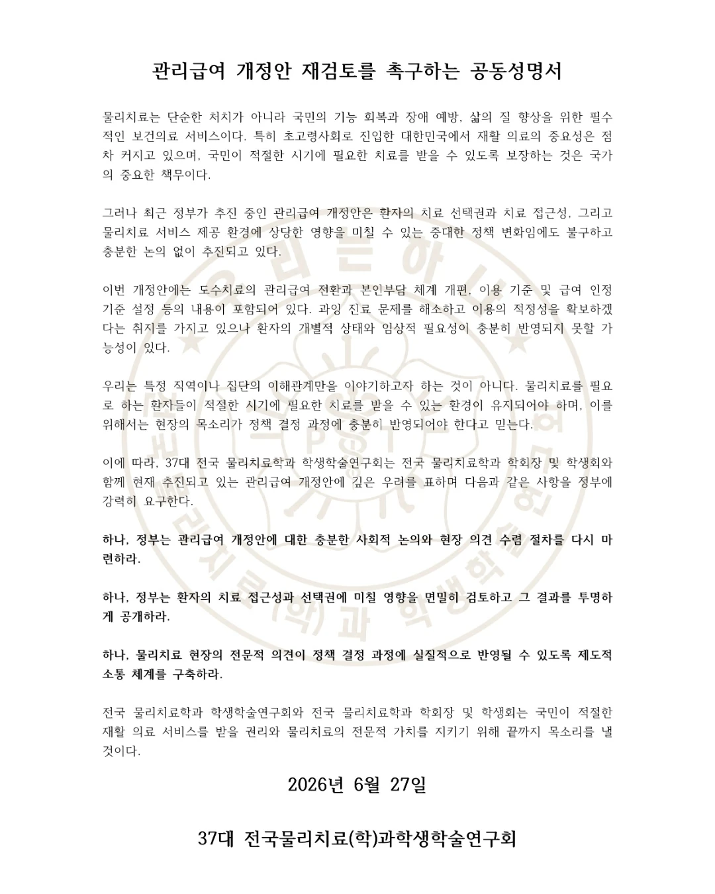
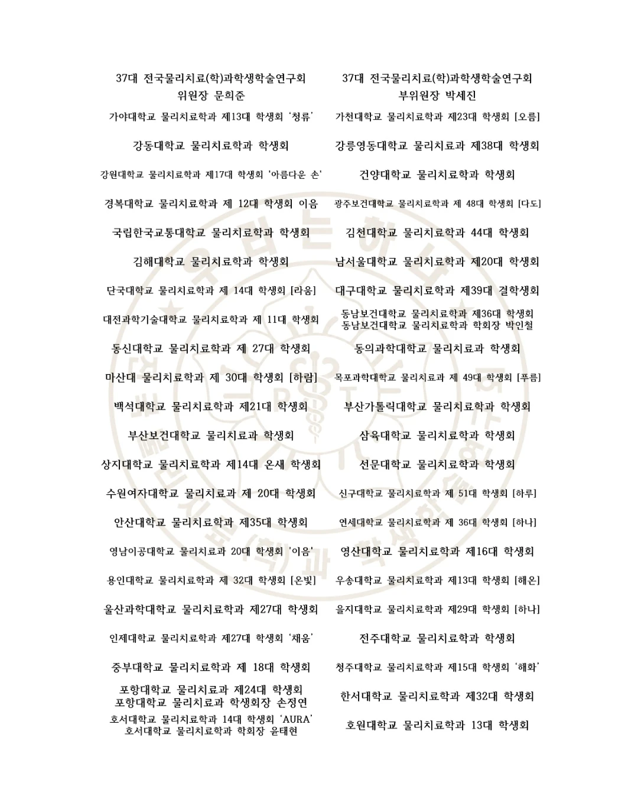

<!DOCTYPE html><html lang="ko"><head><meta charset="utf-8">
<meta name="viewport" content="width=device-width,initial-scale=1">
<!-- Google tag (gtag.js) -->
<script async src="https://www.googletagmanager.com/gtag/js?id=G-GP4BW3V4TS"></script>
<script>window.dataLayer=window.dataLayer||[];function gtag(){dataLayer.push(arguments);}gtag('js',new Date());gtag('config','G-GP4BW3V4TS');</script>
<title>도수치료 관련 뉴스·청원 상황판</title>
<meta property="og:type" content="website">
<meta property="og:url" content="https://ptnews.vercel.app">
<meta property="og:title" content="도수치료 관련 뉴스·청원 상황판">
<meta property="og:description" content="보도·공지·청원을 한눈에. 6.28 결사 저지, 함께 행동해 주세요.">
<meta property="og:image" content="https://ptnews.vercel.app/img/og.png?v=9">
<meta property="og:image:width" content="1200">
<meta property="og:image:height" content="630">
<meta name="twitter:card" content="summary_large_image">
<meta name="twitter:title" content="도수치료 관련 뉴스·청원 상황판">
<meta name="twitter:description" content="보도·공지·청원을 한눈에. 6.28 결사 저지, 함께 행동해 주세요.">
<meta name="twitter:image" content="https://ptnews.vercel.app/img/og.png?v=9">
<link rel="preconnect" href="https://fastly.jsdelivr.net" crossorigin>
<link rel="stylesheet" href="https://fastly.jsdelivr.net/gh/orioncactus/pretendard@v1.3.9/dist/web/variable/pretendardvariable-dynamic-subset.min.css">
<style>*{box-sizing:border-box}html,body{margin:0}@media(max-width:859px){html,body{overflow-x:hidden}}
body{font-family:'Pretendard',-apple-system,BlinkMacSystemFont,'Apple SD Gothic Neo','Malgun Gothic',sans-serif;background:#0E121B;color:#E9EBF1;-webkit-font-smoothing:antialiased}
@keyframes pulseDot{0%,100%{opacity:1;transform:scale(1)}50%{opacity:.35;transform:scale(.7)}}
@keyframes mq{from{transform:translateX(0)}to{transform:translateX(-50%)}}
@keyframes signfk{0%,100%{opacity:1}50%{opacity:.08}}
.signfk{animation:signfk 3.6s ease-in-out infinite}
.mqwrap{flex:1;min-width:0;overflow:hidden}
.mq{display:inline-flex;white-space:nowrap;will-change:transform;animation-name:mq;animation-timing-function:linear;animation-iteration-count:infinite}
.mqwrap:hover .mq{animation-play-state:paused}
.sb::-webkit-scrollbar{width:0;height:0;display:none}.sb{scrollbar-width:none;-ms-overflow-style:none}
.hsb::-webkit-scrollbar{width:0;height:0;display:none}.hsb{scrollbar-width:none;-ms-overflow-style:none}
.fanrow::-webkit-scrollbar{width:0;height:0;display:none}.fanrow{scrollbar-width:none;-ms-overflow-style:none}
.wheelx::-webkit-scrollbar{width:0;height:0;display:none}.wheelx{scrollbar-width:none;-ms-overflow-style:none}
.clamp2{display:-webkit-box;-webkit-line-clamp:2;-webkit-box-orient:vertical;overflow:hidden}
a{color:inherit;text-decoration:none}
button{font-family:inherit;cursor:pointer}
.card:hover{border-color:rgba(255,255,255,.24)!important}
.gcard{position:relative;background:#1E2840;border:1px solid rgba(255,255,255,.13);transition:transform .18s ease,box-shadow .18s ease}
.gcard:hover{transform:scale(1.04);z-index:5;overflow:visible!important;box-shadow:0 14px 34px -12px rgba(0,0,0,.6);border-color:rgba(255,255,255,.32)!important}
.gcard:hover .clamp2{-webkit-line-clamp:99;overflow:visible}
.fanrow .gcard:hover{overflow:hidden!important}
.fanrow .gcard:hover .clamp2{-webkit-line-clamp:2;overflow:hidden}
.stmtpull{clip-path:inset(0 0 67px 0 round 14px 14px 0 0);transition:transform .26s cubic-bezier(.22,.61,.36,1),box-shadow .26s ease,filter .2s ease,clip-path .26s ease}
.stmtpull:hover{clip-path:none;transform:translateY(-62px);z-index:30;box-shadow:0 26px 52px -10px rgba(0,0,0,.85);filter:brightness(1.05)}
.stmtsec{overflow:visible;clip-path:inset(0 round 16px);transition:clip-path .2s ease}
.stmtsec:has(.stmtpull:hover){clip-path:inset(-90px 0 0 0 round 16px);z-index:6}
[data-tip]{position:relative}
.mrk>div{font-size:12px!important}
.stmtsec:has([data-tip]:hover){clip-path:inset(-90px 0 0 0 round 16px);z-index:7}
.stmtlb{transition:transform .18s ease,box-shadow .18s ease}
.stmtlb:hover{transform:translateY(-5px);box-shadow:0 14px 26px -8px rgba(0,0,0,.6);filter:brightness(1.05)}
.pet:hover{background:#202940!important;border-color:rgba(255,255,255,.16)!important}
.btnh{-webkit-backdrop-filter:blur(5px) saturate(1.5) url(#lglass);backdrop-filter:blur(5px) saturate(1.5) url(#lglass);background:linear-gradient(180deg,rgba(255,255,255,.2),rgba(255,255,255,.06))!important;border-color:rgba(255,255,255,.3)!important;box-shadow:inset 0 1px 0 rgba(255,255,255,.55),inset 0 -2px 5px rgba(140,175,230,.16)}
.btnh:active{transform:translateY(1px);box-shadow:inset 0 1px 0 rgba(255,255,255,.4),0 1px 2px rgba(0,0,0,.3)!important}
.btnh:hover{background:linear-gradient(180deg,rgba(255,255,255,.34),rgba(255,255,255,.12))!important;border-color:rgba(255,255,255,.42)!important}
.btnh.nv{background:linear-gradient(180deg,rgba(56,84,148,.62),rgba(30,46,84,.42))!important;border-color:rgba(120,152,216,.5)!important}
.btnh.nv:hover{background:linear-gradient(180deg,rgba(74,108,176,.78),rgba(40,60,108,.52))!important;border-color:rgba(150,180,235,.62)!important}
.btnh.gn{background:linear-gradient(180deg,rgba(62,158,120,.62),rgba(38,104,78,.42))!important;border-color:rgba(110,205,162,.55)!important;color:#EAFBF3!important}
.btnh.gn:hover{background:linear-gradient(180deg,rgba(80,188,142,.78),rgba(48,128,96,.52))!important;border-color:rgba(140,225,185,.65)!important}
.ghdr{position:relative;height:43px;-webkit-backdrop-filter:blur(8px) saturate(1.5) url(#lglass);backdrop-filter:blur(8px) saturate(1.5) url(#lglass);box-shadow:inset 0 1px 0 rgba(255,255,255,.6),inset 0 -1px 2px rgba(150,185,225,.22)}
.hsb:not(.wheelx){-webkit-backdrop-filter:blur(7px) saturate(1.5) url(#lglass);backdrop-filter:blur(7px) saturate(1.5) url(#lglass);box-shadow:inset 0 1px 0 rgba(255,255,255,.22)}
.govbtn{transition:transform .14s ease,box-shadow .14s ease}
.govbtn:hover{transform:translateY(-2px);box-shadow:0 14px 30px -6px rgba(0,0,0,.62),0 3px 7px rgba(0,0,0,.42),inset 0 0 0 1px rgba(91,134,200,.35),inset 0 1px 0 rgba(120,160,225,.32),inset 0 -3px 8px rgba(0,0,0,.32)!important}
.govbtn:active{transform:translateY(0);box-shadow:0 4px 12px -4px rgba(0,0,0,.5),inset 0 1px 0 rgba(255,255,255,.1),inset 0 -2px 6px rgba(0,0,0,.4)!important}
@keyframes twinkle{0%,100%{transform:scale(0) rotate(0deg);opacity:0}45%{transform:scale(1.2) rotate(90deg);opacity:1}72%{transform:scale(0) rotate(150deg);opacity:0}}
.glow{position:relative;display:inline-block;color:#fff}
.spk{position:absolute;background:#fff;clip-path:polygon(50% 0,58% 42%,100% 50%,58% 58%,50% 100%,42% 58%,0 50%,42% 42%);filter:drop-shadow(0 0 5px rgba(255,255,255,.95));pointer-events:none;opacity:0;z-index:6;animation:twinkle 1.8s ease-in-out infinite}
.spk.a{width:15px;height:15px;top:-8px;left:-11px}
.spk.b{width:10px;height:10px;top:-6px;right:-13px;animation-delay:.45s}
.spk.c{width:13px;height:13px;bottom:-8px;left:34%;animation-delay:.95s}
.spk.d{width:8px;height:8px;bottom:-6px;right:-7px;animation-delay:1.35s}
.spk.e{width:12px;height:12px;top:-5px;left:48%;animation-delay:.7s}
.spk.f{width:8px;height:8px;top:40%;left:-15px;animation-delay:1.55s}
.thumb img{width:100%;height:100%;object-fit:cover;display:block}
.popb{transition:transform .12s ease,filter .12s ease}.popb:hover{filter:brightness(1.08);transform:translateY(-1px)}.popb:active{transform:translateY(1px)}
.ktalk{position:relative;overflow:hidden}
.ktalk::after{content:'';position:absolute;top:0;left:-65%;width:30%;height:100%;background:linear-gradient(105deg,transparent 0%,rgba(255,255,255,.7) 50%,transparent 100%);transform:skewX(-18deg);pointer-events:none;animation:ktshine 3.4s ease-in-out infinite}
@keyframes ktshine{0%{left:-65%}50%{left:130%}100%{left:130%}}
.shine,.shine>span:last-child{position:relative}
@keyframes twk{0%,100%{opacity:0;transform:scale(.3)}45%{opacity:1;transform:scale(1.15)}}
.shine::before,.shine::after,.shine>span:last-child::before,.shine>span:last-child::after{content:'✦';position:absolute;line-height:1;color:currentColor;text-shadow:0 0 5px currentColor;pointer-events:none;opacity:0;animation:twk var(--sd,2.2s) ease-in-out infinite}
.shine::before{top:var(--t1,0);right:var(--r1,-3px);font-size:var(--fz1,8px);animation-delay:var(--a1,0s)}
.shine::after{bottom:var(--b2,0);right:var(--r2,7px);font-size:var(--fz2,6.5px);animation-delay:var(--a2,1s)}
.shine>span:last-child::before{top:var(--t3,-2px);left:var(--l3,-7px);font-size:var(--fz3,7px);animation-delay:var(--a3,.6s)}
.shine>span:last-child::after{bottom:var(--b4,-2px);left:var(--l4,-3px);font-size:var(--fz4,8px);animation-delay:var(--a4,1.5s)}
.shx{position:absolute;line-height:1;color:currentColor;text-shadow:0 0 5px currentColor;pointer-events:none;opacity:0;animation:twk var(--sd,2.2s) ease-in-out infinite;z-index:1}
.fanrow>.fancard{transition:transform .3s cubic-bezier(.22,.61,.36,1),opacity .3s ease,box-shadow .3s ease;transform-origin:center center;will-change:transform;box-shadow:0 12px 30px -12px rgba(0,0,0,.75)}
.fanrow>.fancard:hover{filter:brightness(1.06)}
.carnav:active{transform:translateY(-50%) scale(.92)!important}
.stk{position:absolute;inset:0;border-radius:16px;border:1px solid rgba(255,255,255,.1);box-shadow:0 8px 20px -10px rgba(0,0,0,.6);transition:transform .28s cubic-bezier(.22,.61,.36,1);will-change:transform}
.stk1{background:#18213a;transform:translate(11px,-10px);z-index:1}
.stk2{background:#141d30;transform:translate(22px,-20px);z-index:0}
.stk3{background:#11172a;transform:translate(33px,-30px);z-index:0}
.fancard:hover .stk1{transform:translate(16px,-15px)}
.fancard:hover .stk2{transform:translate(32px,-30px)}
.fancard:hover .stk3{transform:translate(48px,-45px)}
.envlink{flex:none;display:inline-flex;flex-direction:column;align-items:center;gap:5px;text-decoration:none;cursor:pointer}
.env{position:relative;width:52px;height:36px;perspective:420px;flex:none}
.env__paper{position:absolute;left:6px;right:6px;top:5px;height:30px;background:#FFFDF7;border-radius:2px 2px 3px 3px;z-index:1;transform:translateY(0);transition:transform .42s cubic-bezier(.22,.61,.36,1);box-shadow:0 2px 6px rgba(0,0,0,.3)}
.env__paper i{position:absolute;left:7px;height:2px;border-radius:2px;background:#A98E5E;opacity:.55}
.env__paper i:nth-child(1){top:7px;right:9px}
.env__paper i:nth-child(2){top:13px;right:16px}
.env__paper i:nth-child(3){top:19px;right:24px}
.env__front{position:absolute;inset:0;z-index:2;background:#E9D9B5;border-radius:5px;box-shadow:0 4px 12px -3px rgba(0,0,0,.5)}
.env__flap{position:absolute;top:0;left:0;width:100%;height:60%;background:#DAC796;border-radius:5px 5px 0 0;clip-path:polygon(0 0,100% 0,50% 100%);transform-origin:50% 0;transform:rotateX(0);transition:transform .42s ease,z-index 0s .21s;z-index:3}
.envlink:hover .env__flap,.envlink:focus-visible .env__flap{transform:rotateX(180deg);z-index:0;transition:transform .42s ease,z-index 0s 0s}
.envlink:hover .env__paper,.envlink:focus-visible .env__paper{transform:translateY(-17px)}
.env__label{font-size:11px;font-weight:800;color:#C2CAD8;letter-spacing:-.01em;white-space:nowrap;transition:color .2s}
.envlink:hover .env__label,.envlink:focus-visible .env__label{color:#E2BE72}
.envlink:active .env{transform:translateY(1px)}
@keyframes notiroll{0.00%{transform:translateY(0px)}16.40%{transform:translateY(0px)}20.00%{transform:translateY(-24px)}36.40%{transform:translateY(-24px)}40.00%{transform:translateY(-48px)}56.40%{transform:translateY(-48px)}60.00%{transform:translateY(-72px)}76.40%{transform:translateY(-72px)}80.00%{transform:translateY(-96px)}96.40%{transform:translateY(-96px)}100%{transform:translateY(-120px)}}.notiroll{animation:notiroll 20s ease infinite}</style><link rel="stylesheet" href="https://unpkg.com/leaflet@1.9.4/dist/leaflet.css"/><script src="https://unpkg.com/leaflet@1.9.4/dist/leaflet.js"></script></head>
<body>
<div id="app"></div>
<svg width="0" height="0" style="position:absolute;pointer-events:none" aria-hidden="true"><filter id="lglass" x="-20%" y="-20%" width="140%" height="140%" color-interpolation-filters="sRGB"><feTurbulence type="fractalNoise" baseFrequency="0.006 0.010" numOctaves="1" seed="11" result="noise"></feTurbulence><feGaussianBlur in="noise" stdDeviation="1.2" result="sn"></feGaussianBlur><feDisplacementMap in="SourceGraphic" in2="sn" scale="16" xChannelSelector="R" yChannelSelector="G"></feDisplacementMap></filter></svg>
<script>
const DATA={"ko":[{"date":"2026-06-28","dt":"2026-06-28T17:39:09+09:00","disp":"6.28","title":"[포토] 전국 물리치료사 1,000명, 경복궁 앞 총궐기…\"도수치료 관리급여 철회하라\"","url":"https://www.seoulilbo.co.kr/news/articleView.html?idxno=20990","img":"img/ko_cokr20990.jpg"},{"date":"2026-06-28","dt":"2026-06-28T17:39:06+09:00","disp":"6.28","title":"[포토] 전국 물리치료사 1,000명, 경복궁 앞 총궐기…\"도수치료 관리급여 철회하라\"","url":"https://www.seoulilbo.co.kr/news/articleView.html?idxno=20989","img":"img/ko_cokr20989.jpg"},{"date":"2026-06-28","dt":"2026-06-28T17:39:03+09:00","disp":"6.28","title":"[포토] 전국 물리치료사 1,000명, 경복궁 앞 총궐기…\"도수치료 관리급여 철회하라\"","url":"https://www.seoulilbo.co.kr/news/articleView.html?idxno=20988","img":"img/ko_cokr20988.jpg"},{"date":"2026-06-28","dt":"2026-06-28T17:38:59+09:00","disp":"6.28","title":"[포토] 전국 물리치료사 1,000명, 경복궁 앞 총궐기…\"도수치료 관리급여 철회하라\"","url":"https://www.seoulilbo.co.kr/news/articleView.html?idxno=20987","img":"img/ko_cokr20987.jpg"},{"date":"2026-06-28","dt":"2026-06-28T14:42:47+09:00","disp":"6.28","title":"전국 40개 대학 물리치료학과 학생들도 들고일어났다…정작 협회는 어디에","url":"https://www.seoulilbo.co.kr/news/articleView.html?idxno=20985","img":"img/ko_cokr20985.jpg","pin":1},{"date":"2026-06-28","dt":"2026-06-28T14:42:39+09:00","disp":"6.28","title":"[단독] 비대위원장 연달아 사퇴하고 단독 후보 추대…물리치료사협회, 7월 코앞에 지휘 정당성까지 흔들","url":"https://www.seoulilbo.co.kr/news/articleView.html?idxno=20983","img":"img/ko_cokr20983.png"},{"date":"2026-06-25","dt":"2026-06-25T14:25:00+09:00","disp":"6.25","title":"손해 본 건 보험사인데 칼은 환자에게…도수치료 통제, 누구를 위한 정책인가","url":"https://www.seoulilbo.co.kr/news/articleView.html?idxno=20968","img":"img/ko_cokr20968.png"},{"date":"2026-06-24","disp":"6.24","title":"간병보험도 '도수치료 길' 간다…보험사가 키운 손해, 왜 국민이 치료 끊기며 갚나","url":"https://www.seoulilbo.co.kr/news/articleView.html?idxno=20956","img":"img/ko_cokr20956.png","dt":"2026-06-24T12:22:04+09:00"},{"date":"2026-06-23","disp":"6.23","title":"\"누가 하든 4만3850원\"…숙련 10년차도 신입과 같은 값, 도수치료 수가가 부른 인력 역설","url":"https://www.seoulilbo.co.kr/news/articleView.html?idxno=20942","img":"img/ko_cokr20942.png","dt":"2026-06-23T14:18:53+09:00"},{"date":"2026-06-22","disp":"6.22","title":"물리치료사는 권고사직 중인데…협회는 '비대위 구성'마저 부결시켰다","url":"https://www.seoulilbo.co.kr/news/articleView.html?idxno=20927","img":"img/ko_cokr20927.png","dt":"2026-06-22T14:39:05+09:00"},{"date":"2026-06-21","disp":"6.21","title":"\"직원 90.9% 줄인다\"…도수치료 D-10, 물리치료사들 벌써 실직 시작됐다","url":"https://www.seoulilbo.co.kr/news/articleView.html?idxno=20907","img":"img/ko_cokr20907.jpg","dt":"2026-06-21T14:40:22+09:00"},{"date":"2026-06-18","disp":"6.18","title":"\"근골격계 틀에 갇힌 도수치료\"…림프부종·중증장애아동 환자, 관리급여서 통째로 빠졌다","url":"https://www.seoulilbo.co.kr/news/articleView.html?idxno=20898","img":"img/ko_cokr20898.png","dt":"2026-06-18T14:24:43+09:00"},{"date":"2026-06-17","disp":"6.17","title":"실손 손해율 잡으려 국민건강보험 동원…정작 가격 정하고 수익 가져가는 의사·의료기관엔 책임 없어","url":"https://www.seoulilbo.co.kr/news/articleView.html?idxno=20874","img":"img/ko_cokr20874.png","dt":"2026-06-17T14:34:39+09:00"},{"date":"2026-06-16","disp":"6.16","title":"[단독] 페이백 병원, 한방·요양 넘어 일반병원까지 번졌다","url":"https://www.seoulilbo.co.kr/news/articleView.html?idxno=20870","img":"img/ko_cokr20870.jpg","dt":"2026-06-16T16:23:18+09:00"},{"date":"2026-06-16","disp":"6.16","title":"도수치료 관리급여 시행 한 달도 안 남아…물리치료사 권고사직·치료실 폐쇄 도미노 현실로","url":"https://www.seoulilbo.co.kr/news/articleView.html?idxno=20873","img":"img/ko_cokr20873.png","dt":"2026-06-16T13:50:12+09:00"},{"date":"2026-06-15","disp":"6.15","title":"도수치료 산재 6만8000원·건강보험 4만3850원…국가가 만든 수가 역설에 협회는 '대전 기자회견'","url":"https://www.seoulilbo.co.kr/news/articleView.html?idxno=20851","img":"img/ko_cokr20851.png","dt":"2026-06-15T12:22:35+09:00"},{"date":"2026-06-14","disp":"6.14","title":"\"당장 7월이 코앞인데 협회는 2시간 동안 기자회견만\"…물리치료사 회원들 분노 폭발","url":"https://www.seoulilbo.co.kr/news/articleView.html?idxno=20845","img":"img/ko_cokr20845.png","dt":"2026-06-14T14:10:57+09:00"},{"date":"2026-06-11","disp":"6.11","title":"\"보험료는 꼬박꼬박, 보험금은 어떻게든 안 준다\"…보험사의 세 가지 거절 공식","url":"https://www.seoulilbo.co.kr/news/articleView.html?idxno=20819","img":"img/ko_cokr20819.jpg","dt":"2026-06-11T14:09:43+09:00"},{"date":"2026-06-10","disp":"6.10","title":"도수치료 관리급여화, 환자 등골 휘고 보험사 배만 불린다","url":"https://www.seoulilbo.co.kr/news/articleView.html?idxno=20787","img":"img/ko_cokr20787.png","dt":"2026-06-10T11:38:25+09:00"},{"date":"2026-06-08","disp":"6.8","title":"\"종합병원 진단도 못 믿겠다\"는 보험사…의료자문 남용·핸드폰 열람 강요","url":"https://www.seoulilbo.co.kr/news/articleView.html?idxno=20760","img":"img/ko_cokr20760.jpg","dt":"2026-06-08T14:13:30+09:00"},{"date":"2026-06-07","disp":"6.7","title":"도수치료 관리급여 확정…\"암 환자는 어쩌라고\" 림프부종·의료계 동반 반발","url":"https://www.seoulilbo.co.kr/news/articleView.html?idxno=20742","img":"img/ko_cokr20742.png","dt":"2026-06-07T09:31:15+09:00"},{"date":"2026-06-03","disp":"6.3","title":"도수치료·혼실 폐지·체외충격파…복지부 의료정책 '연속 삼진' 도마에","url":"https://www.seoulilbo.co.kr/news/articleView.html?idxno=20704","img":"img/ko_cokr20704.png","dt":"2026-06-03T11:00:00+09:00"},{"date":"2026-05-25","disp":"5.25","title":"도수치료 7월 강행 굳히자…체외충격파까지 '관리급여 전선' 확대","url":"https://www.seoulilbo.co.kr/news/articleView.html?idxno=20605","img":"img/ko_cokr20605.png","dt":"2026-05-25T10:17:00+09:00"},{"date":"2026-05-14","disp":"5.14","title":"\"관절가동범위도 제각각인데 9회 추가 기준이 뭐냐\"…도수치료 관리급여 '구멍 투성이'","url":"https://www.seoulilbo.co.kr/news/articleView.html?idxno=20513","img":"img/ko_cokr20513.png","dt":"2026-05-14T14:21:26+09:00"},{"date":"2026-05-02","disp":"5.2","title":"도수치료 '관리급여' 강행, 환자 부담 늘고 보험사만 웃는다","url":"https://www.seoulilbo.co.kr/news/articleView.html?idxno=20353","img":"img/ko_cokr20353.png","dt":"2026-05-02T07:59:02+09:00"}],"press":[{"date":"2026-06-28","dt":"2026-06-28T19:16:29+09:00","disp":"26.06.28","chip":"청년의사","title":"의료계 \"복지부,","url":"https://www.docdocdoc.co.kr/news/articleView.html?idxno=3040422","img":"img/pr_a09993d310d.jpg"},{"date":"2026-06-28","dt":"2026-06-28T19:09:11+09:00","disp":"26.06.28","chip":"스페셜타임스","title":"정부의 관리급여 제도… 의료계 강한 반발에 직면하다","url":"https://www.specialtimes.co.kr/news/articleView.html?idxno=443937","img":"img/pr_add156a3765.jpg"},{"date":"2026-06-28","dt":"2026-06-28T19:08:09+09:00","disp":"26.06.28","chip":"팍스메디컬뉴스","title":"의협 “관리급여는 비급여 통제 시작점… 즉각 철회하라” 대한문 앞 궐기대회","url":"https://www.paxmedicalnews.com/news/articleView.html?idxno=2363","img":"img/pr_a2c23e368ad.jpg"},{"date":"2026-06-28","dt":"2026-06-28T19:06:04+09:00","disp":"26.06.28","chip":"KBS","title":"도수치료 4만 원대 관리 급여화에…의료계 “진료권 침해”","url":"https://v.daum.net/v/20260628190604168","img":"img/pr_adfb657f729.jpg","group":"dup26"},{"date":"2026-06-28","dt":"2026-06-28T18:49:41+09:00","disp":"26.06.28","chip":"데일리메디팜","title":"의협, \"수가 5%만 주면서 100% 가격 통제하려 해...관리급여 즉각 철회하라\"","url":"http://m.dailymedipharm.com/news/articleView.html?idxno=76972","img":"img/pr_a3584e67d5f.jpg"},{"date":"2026-06-28","dt":"2026-06-28T18:45:00+09:00","disp":"26.06.28","chip":"한국경제","title":"암 치료비보다 많이 쓴","url":"https://news.nate.com/view/20260628n14594","img":"img/pr_a7397e4404f.jpg"},{"date":"2026-06-28","dt":"2026-06-28T18:24:28+09:00","disp":"26.06.28","chip":"재활뉴스","title":"오늘은 '도수치료'지만 내일은 '체외충격파' … 그리고 다음은?","url":"https://www.rehabnews.net/news/articleView.html?idxno=29651","img":"img/pr_a4b7ee472a6.jpg"},{"date":"2026-06-28","dt":"2026-06-28T18:23:01+09:00","disp":"26.06.28","chip":"의학신문","title":"관리급여 저지 위해 의료계 또다시 길거리 투쟁","url":"https://www.bosa.co.kr/news/articleView.html?idxno=3007182","img":"img/pr_ac946dc3e30.jpg"},{"date":"2026-06-28","dt":"2026-06-28T18:22:00+09:00","disp":"26.06.28","chip":"데일리메디","title":"[포토] 거리로 나온 의사들 “관리급여 즉각 중단”","url":"https://www.dailymedi.com/news/news_view.php?wr_id=937805","img":"img/pr_a76d44b6bf7.jpg"},{"date":"2026-06-28","dt":"2026-06-28T18:20:36+09:00","disp":"26.06.28","chip":"글로벌이코노믹","title":"도수치료 4만원대 묶이자 의협 반발…“일방 추진 중단하라”","url":"https://www.g-enews.com/article/General-News/2026/06/2026062818185032663084322ec9_1","img":"img/pr_a3b9dd0518a.jpg","group":"dup68"},{"date":"2026-06-28","dt":"2026-06-28T18:04:00+09:00","disp":"26.06.28","chip":"데일리메디","title":"환자 본인부담 95% ‘관리급여’ 누굴 위한 제도인가","url":"https://www.dailymedi.com/news/news_view.php?ca_id=22&wr_id=937804","img":"img/pr_abc57342689.jpg"},{"date":"2026-06-28","dt":"2026-06-28T17:50:44+09:00","disp":"26.06.28","chip":"뉴스1","title":"\"도수치료는 시작일 뿐\"…의협, 관리급여 반발, 법적 대응 예고","url":"https://www.news1.kr/bio/welfare-medical/6210691","img":"img/pr_a2d7c8458e0.jpg"},{"date":"2026-06-28","dt":"2026-06-28T17:47:40+09:00","disp":"26.06.28","chip":"아시아투데이","title":"‘관리급여’ 확대에 갈등 격화…정부 의료개혁 ‘험로’","url":"https://www.asiatoday.co.kr/kn/view.php?key=20260628010009801","img":"img/pr_a77b45dbe88.jpg"},{"date":"2026-06-28","dt":"2026-06-28T17:40:09+09:00","disp":"26.06.28","chip":"메디팜스투데이","title":"'도수치료 관리급여' 충돌 본격화…의료계 \"비급여 통제 막겠다\"","url":"https://www.apsk.co.kr/news/articleView.html?idxno=539697","img":"img/pr_a4ee207cabe.jpg"},{"date":"2026-06-28","dt":"2026-06-28T17:38:22+09:00","disp":"26.06.28","chip":"청년의사","title":"관리급여 시행 D-3 …거리로 나온 의사들 \"정부 의료 통제 끝까지 막겠다\"","url":"https://www.docdocdoc.co.kr/news/articleView.html?idxno=3040420","img":"img/pr_a938e4f86bc.jpg"},{"date":"2026-06-28","dt":"2026-06-28T17:31:46+09:00","disp":"26.06.28","chip":"청년의사","title":"“치료실 줄이고 권고사직”…물리치료사들, 도수치료 관리급여에 총궐기","url":"https://www.docdocdoc.co.kr/news/articleView.html?idxno=3040421","img":"img/pr_a9506f51dc4.jpg"},{"date":"2026-06-28","dt":"2026-06-28T17:30:00+09:00","disp":"26.06.28","chip":"MBN","title":"도수치료 관리급여 전환 괜찮을까…환자·의료계 집단 반발 : 네이트 뉴스","url":"https://news.nate.com/view/20260628n13032","img":"img/pr_afd4e0c813f.jpg","group":"dup53"},{"date":"2026-06-28","dt":"2026-06-28T17:29:58+09:00","disp":"26.06.28","chip":"의협신문","title":"진료실 뛰쳐나온 의사들, \"관리급여 일방 추진 중단하라\"","url":"https://www.doctorsnews.co.kr/news/articleView.html?idxno=165168","img":"img/pr_a188690880d.jpg"},{"date":"2026-06-28","dt":"2026-06-28T17:28:00+09:00","disp":"26.06.28","chip":"데일리안","title":"정부에 \"도둑놈 심보\" 맹비난한 의협…관리급여 철회 촉구","url":"https://www.dailian.co.kr/news/view/1660742/","img":"img/pr_a9a47fa2a3d.jpg"},{"date":"2026-06-28","dt":"2026-06-28T17:25:25+09:00","disp":"26.06.28","chip":"mbn.co.kr","title":"도수치료 관리급여 전환 괜찮을까…환자·의료계 집단 반발","url":"https://www.mbn.co.kr/news/society/5202513","img":"img/pr_a8a5b416800.jpg","group":"dup53"},{"date":"2026-06-28","dt":"2026-06-28T17:16:25+09:00","disp":"26.06.28","chip":"헬스이슈앤뉴스","title":"물리치료사·의사","url":"https://www.hin.company/news/articleView.html?idxno=42898","img":"img/pr_a26c9409a4f.jpg"},{"date":"2026-06-28","dt":"2026-06-28T17:15:00+09:00","disp":"26.06.28","chip":"아시아경제","title":"도수치료 '4만원대' 관리급여 앞두고…의협 \"일방 추진 중단해야\"","url":"https://news.nate.com/view/20260628n12755","img":"img/pr_a3656c2efdc.jpg","group":"dup68"},{"date":"2026-06-28","dt":"2026-06-28T17:14:00+09:00","disp":"26.06.28","chip":"에너지경제신문","title":"“내 보험료 좀 싸질까”...실손 누수 주범 ‘도수치료’ 보장 바뀐다","url":"https://m.ekn.kr/view.php?key=20260628021517169","img":"img/pr_aac712cd0e1.jpg"},{"date":"2026-06-28","dt":"2026-06-28T17:02:00+09:00","disp":"26.06.28","chip":"메디게이트뉴스","title":"행정소송에 제도 거부 투쟁까지 불사…의료계, 도수치료 관리급여 전환 수용불가","url":"https://www.medigatenews.com/news/1011426082","img":"img/pr_a4ee56b0e5e.jpg"},{"date":"2026-06-28","dt":"2026-06-28T17:01:19+09:00","disp":"26.06.28","chip":"뉴시스","title":"거리로 나온 의사들…\"관리급여 강행땐 거부 투쟁\"","url":"https://www.newsis.com/view/NISX20260628_0003686673","img":"img/pr_a932eae475b.jpg"},{"date":"2026-06-28","dt":"2026-06-28T17:00:00+09:00","disp":"26.06.28","chip":"연합뉴스","title":"'도수치료 4만원대 관리급여' 의협 \"일방적 추진 중단하라\"","url":"https://news.nate.com/view/20260628n12514","img":"img/pr_aaccfe700a9.jpg","group":"dup68"},{"date":"2026-06-28","dt":"2026-06-28T16:59:16+09:00","disp":"26.06.28","chip":"쿠키뉴스","title":"의료계 “도수치료 관리급여는 치료권 침해”…전면 투쟁 예고","url":"https://www.kukinews.com/article/view/kuk202606280027","img":"img/pr_a0dd29559b2.jpg","group":"dup26"},{"date":"2026-06-28","dt":"2026-06-28T16:50:00+09:00","disp":"26.06.28","chip":"머니투데이","title":"\"도수치료, 정부가 왜 막나\" \"도둑놈 심보\" 거리 나온 의사들, 작심발언","url":"https://news.nate.com/view/20260628n12357","img":"img/pr_a9620b7bed0.jpg","group":"dup29"},{"date":"2026-06-28","dt":"2026-06-28T16:50:00+09:00","disp":"26.06.28","chip":"머니투데이","title":"\"도수치료, 정부가 왜 막나\" \"도둑놈 심보\" 거리 나온 의사들, 작심발언","url":"https://www.mt.co.kr/amp/thebio/2026/06/28/2026062813495431601","img":"img/pr_a9eb13c184d.jpg","group":"dup29"},{"date":"2026-06-28","dt":"2026-06-28T16:50:00+09:00","disp":"26.06.28","chip":"머니투데이","title":"\"도수치료, 정부가 왜 막나\" \"도둑놈 심보\" 거리 나온 의사들, 작심발언","url":"https://www.mt.co.kr/thebio/2026/06/28/2026062813495431601","img":"img/pr_ad0fd6974be.jpg","group":"dup29"},{"date":"2026-06-28","dt":"2026-06-28T16:43:00+09:00","disp":"26.06.28","chip":"뉴시스","title":"관리급여 반대 궐기대회 하는 대한의사협회","url":"https://news.nate.com/view/20260628n12241","img":"img/pr_a56614dfc3e.jpg"},{"date":"2026-06-28","dt":"2026-06-28T16:42:11+09:00","disp":"26.06.28","chip":"뉴시스","title":"의협, 관리급여 반대 궐기대회","url":"https://www.newsis.com/view/NISI20260628_0021340615","img":"img/pr_a497e748d82.jpg"},{"date":"2026-06-28","dt":"2026-06-28T16:42:11+09:00","disp":"26.06.28","chip":"뉴시스","title":"관리급여 반대 궐기대회 하는 대한의사협회","url":"https://www.newsis.com/view/NISI20260628_0021340625","img":"img/pr_aa8f92a3ebe.jpg"},{"date":"2026-06-28","dt":"2026-06-28T16:38:01+09:00","disp":"26.06.28","chip":"메디칼타임즈","title":"[메디칼타임즈] 도수치료가 시작일 뿐…의협, 관리급여 저지 전면전 선언","url":"https://www.medicaltimes.com/Mobile/News/NewsView.html?ID=1169478","img":"img/pr_abd2eff8244.jpg","group":"dup63"},{"date":"2026-06-28","dt":"2026-06-28T16:37:37+09:00","disp":"26.06.28","chip":"한국경제","title":"[포토] 국민의 치료권, 의사의 진료권을 침해하는 관리급여 반대 궐기대회","url":"https://www.hankyung.com/article/202606282241i","img":"img/pr_a21d3ceaa4e.jpg"},{"date":"2026-06-28","dt":"2026-06-28T16:34:00+09:00","disp":"26.06.28","chip":"연합뉴스","title":"도수치료 관리급여 전환 반대 궐기대회","url":"https://news.nate.com/view/20260628n12061","img":"img/pr_a8a7ecccb29.jpg"},{"date":"2026-06-28","dt":"2026-06-28T16:32:00+09:00","disp":"26.06.28","chip":"뉴스1","title":"거리로 나선 의사들, 관리급여 제도 폐기 촉구","url":"https://news.nate.com/view/20260628n12032","img":"img/pr_a8734792a17.jpg"},{"date":"2026-06-28","dt":"2026-06-28T16:30:10+09:00","disp":"26.06.28","chip":"뉴스1","title":"'관리급여 제도 철회 촉구'","url":"https://www.news1.kr/photos/7980443","img":"img/pr_a05dbe055ac.jpg"},{"date":"2026-06-28","dt":"2026-06-28T16:30:00+09:00","disp":"26.06.28","chip":"뉴스1","title":"김택우 의협회장, 관리급여 반대 궐기대회 대회사","url":"https://news.nate.com/view/20260628n11996?mid=n1101","img":"img/pr_ad3cda9d0a6.jpg"},{"date":"2026-06-28","dt":"2026-06-28T16:17:00+09:00","disp":"26.06.28","chip":"연합뉴스TV","title":"다음달 관리급여 적용에 도수치료 중단 병원 속출","url":"https://news.nate.com/view/20260628n11818","img":"img/pr_ae5634a9fb7.jpg","group":"dup53"},{"date":"2026-06-28","dt":"2026-06-28T15:55:18+09:00","disp":"26.06.28","chip":"한경비즈니스","title":"\"정부의 탁상행정이 생존권 위협\" 전국 물리치료사 총궐기대회","url":"https://v.daum.net/v/20260628155518436","img":"img/pr_a347b4cab20.jpg"},{"date":"2026-06-28","dt":"2026-06-28T15:52:00+09:00","disp":"26.06.28","chip":"뉴시스","title":"\"실비 믿고 연 30번 맞았는데\"…내달부터 체외충격파 잘못 받다간","url":"https://m.news.nate.com/view/20260628n11433?mid=m02&list=recent&cpcd=","img":"img/pr_a62ffe2ed92.jpg","group":"dup42"},{"date":"2026-06-28","dt":"2026-06-28T15:51:31+09:00","disp":"26.06.28","chip":"매일경제 마켓","title":"“실비 믿고 연 30번 맞았는데”…내달부터 체외충격파 잘못 받다간 ‘날벼락’","url":"https://stock.mk.co.kr/news/view/1111772","img":"img/pr_a7d5585329d.jpg","group":"dup42"},{"date":"2026-06-28","dt":"2026-06-28T14:55:00+09:00","disp":"26.06.28","chip":"뉴스1","title":"도수치료 생존권 수호 전국 물리치료사 총궐기대회","url":"https://news.nate.com/view/20260628n10443","img":"img/pr_a90e45f7e01.jpg"},{"date":"2026-06-28","dt":"2026-06-28T14:54:56+09:00","disp":"26.06.28","chip":"뉴스1","title":"'도수치료 관리급여화 재검토 촉구'","url":"https://www.news1.kr/photos/7980395","img":"img/pr_a397d495417.jpg"},{"date":"2026-06-28","dt":"2026-06-28T13:30:00+09:00","disp":"26.06.28","chip":"블로터","title":"금감원, 실손보험금 누수 방지 박차…체외충격파 치료 분쟁조정기준 보니","url":"https://www.bloter.net/news/articleView.html?idxno=666728","img":"img/pr_a2d4d95f7dc.jpg","group":"dup140"},{"date":"2026-06-28","dt":"2026-06-28T11:11:00+09:00","disp":"26.06.28","chip":"메디게이트뉴스","title":"오늘 오후 4시 대한문 앞에서 관리급여 제도 반대 전국의사 궐기대회 열린다","url":"https://www.medigatenews.com/news/790854433","img":"img/pr_ac49335cf43.jpg"},{"date":"2026-06-28","dt":"2026-06-28T10:28:34+09:00","disp":"26.06.28","chip":"보험매일","title":"의료계가 막으려는 건 도수치료일까, 실손보험 개혁일까","url":"https://www.fins.co.kr/news/articleView.html?idxno=108961","img":"img/pr_a561aa2c186.jpg"},{"date":"2026-06-28","dt":"2026-06-28T09:14:02+09:00","disp":"26.06.28","chip":"스페셜타임스","title":"도수치료 관리급여 전환… 환자 불만 폭주하며 의료계 반발 확산","url":"https://www.specialtimes.co.kr/news/articleView.html?idxno=443898","img":"img/pr_a452659e29d.jpg","group":"dup53"},{"date":"2026-06-28","dt":"2026-06-28T09:00:00+09:00","disp":"26.06.28","chip":"뉴시스","title":"\"건보 수가 조정 강행 반대\"…의사들 또 거리로","url":"https://www.newsis.com/view/NISX20260626_0003685358","img":"img/pr_a0453e9e2e8.jpg"},{"date":"2026-06-28","dt":"2026-06-28T09:00:00+09:00","disp":"26.06.28","chip":"뉴시스","title":"[오늘의 주요일정]사회(6월28일 일요일)","url":"https://www.newsis.com/view/NISX20260627_0003686248","img":"img/pr_affc9eeb987.jpg"},{"date":"2026-06-28","dt":"2026-06-28T09:00:00+09:00","disp":"26.06.28","chip":"EBN","title":"관리급여 전환 앞두고 도수치료 중단하는  병원가…환자·의료계 반발","url":"https://www.ebn.co.kr/news/articleView.html?idxno=1714180","img":"img/pr_a0c86729351.jpg","group":"dup53"},{"date":"2026-06-28","dt":"2026-06-28T09:00:00+09:00","disp":"26.06.28","chip":"이투데이","title":"[정부 주요 일정] 경제·사회부처 주간 일정 (6월 29일 ~ 7월 3일)","url":"https://www.etoday.co.kr/news/view/2597879","img":"img/pr_aac3fa4b544.jpg"},{"date":"2026-06-28","dt":"2026-06-28T09:00:00+09:00","disp":"26.06.28","chip":"전남일보","title":"도수치료 관리급여화 앞두고 병원가 혼선…운영 축소에 환자 발 동동","url":"https://www.jnilbo.com/news/articleView.html?idxno=90000045897","img":"img/pr_a3c4adbe7c5.jpg","group":"dup53"},{"date":"2026-06-28","dt":"2026-06-28T09:00:00+09:00","disp":"26.06.28","chip":"아시아타임즈","title":"다음달부터 도수치료 가격·횟수 제한…\"실효성 글쎄\"","url":"https://www.asiatime.co.kr/article/20260624500351","img":"img/pr_a7fa67b1120.jpg"},{"date":"2026-06-28","dt":"2026-06-28T09:00:00+09:00","disp":"26.06.28","chip":"뉴스1","title":"'근거중심 도수치료 인정하고 보장하라'","url":"https://www.news1.kr/photos/7980392","img":"img/pr_a3ab61afdd9.jpg"},{"date":"2026-06-28","dt":"2026-06-28T09:00:00+09:00","disp":"26.06.28","chip":"뉴스1","title":"'현장 무시 탁상행정'","url":"https://www.news1.kr/photos/7980388","img":"img/pr_ab4291f691b.jpg"},{"date":"2026-06-28","dt":"2026-06-28T09:00:00+09:00","disp":"26.06.28","chip":"뉴스1","title":"'물리치료사 배제, 도수치료 정책 반대'","url":"https://www.news1.kr/photos/7980391","img":"img/pr_a02f29afb57.jpg"},{"date":"2026-06-28","dt":"2026-06-28T09:00:00+09:00","disp":"26.06.28","chip":"연합뉴스","title":"도수치료 관리급여 전환 반대 궐기대회 연 의협","url":"https://www.yna.co.kr/view/PYH20260628068200013?input=1196m","img":"img/pr_a565fd483f1.jpg"},{"date":"2026-06-28","dt":"2026-06-28T09:00:00+09:00","disp":"26.06.28","chip":"연합뉴스","title":"의협, 도수치료 관리급여 전환 반대 궐기대회","url":"https://www.yna.co.kr/view/PYH20260628068300013?input=1196m","img":"img/pr_a444851590e.jpg"},{"date":"2026-06-28","dt":"2026-06-28T09:00:00+09:00","disp":"26.06.28","chip":"연합뉴스","title":"궐기대회 참석한 김택우 의협 회장","url":"https://www.yna.co.kr/view/PYH20260628068900013?input=1196m","img":"img/pr_ac805796788.jpg"},{"date":"2026-06-28","dt":"2026-06-28T09:00:00+09:00","disp":"26.06.28","chip":"부산일보","title":"“관리급여 일방추진 중단하라” 거리에 나선 의사들","url":"https://www.busan.com/view/busan/view.php?code=2026062817203472408","img":"img/pr_a88006daebb.jpg"},{"date":"2026-06-28","dt":"2026-06-28T09:00:00+09:00","disp":"26.06.28","chip":"아시아경제","title":"도수치료 '4만원대' 관리급여 앞두고…의협 \"일방 추진 중단해야\"","url":"https://view.asiae.co.kr/article/2026062817140832816","img":"img/pr_a485102b3ef.jpg","group":"dup68"},{"date":"2026-06-28","dt":"2026-06-28T09:00:00+09:00","disp":"26.06.28","chip":"메디칼타임즈","title":"[메디칼타임즈] 도수치료가 시작일 뿐…의협, 관리급여 저지 전면전 선언","url":"https://www.medicaltimes.com/Main/News/NewsView.html?ID=1169478&amp;ref=naverpc","img":"img/pr_a46dcf923f1.jpg","group":"dup63"},{"date":"2026-06-28","dt":"2026-06-28T09:00:00+09:00","disp":"26.06.28","chip":"연합뉴스","title":"도수치료 관리급여 전환 반대 궐기대회","url":"https://www.yna.co.kr/view/PYH20260628068600013?input=1196m","img":"img/pr_ab22196791c.jpg"},{"date":"2026-06-28","dt":"2026-06-28T09:00:00+09:00","disp":"26.06.28","chip":"뉴스1","title":"도수치료 생존권 수호 전국 물리치료사 총궐기대회","url":"https://www.news1.kr/photos/7980393","img":"img/pr_a1cbb6b5f2a.jpg"},{"date":"2026-06-28","dt":"2026-06-28T09:00:00+09:00","disp":"26.06.28","chip":"노컷뉴스","title":"수가 손질·관리급여 도입에 반발…의료계 오늘 대규모 집회","url":"https://www.nocutnews.co.kr/news/6539520?utm_source=naver&amp;utm_medium=article&amp;utm_campaign=20260628093407","img":"img/pr_a52c3535e32.jpg"},{"date":"2026-06-28","dt":"2026-06-28T09:00:00+09:00","disp":"26.06.28","chip":"연합뉴스","title":"발언하는 김택우 의협 회장","url":"https://www.yna.co.kr/view/PYH20260628068400013?input=1196m","img":"img/pr_a3b94c4e002.jpg"},{"date":"2026-06-28","dt":"2026-06-28T09:00:00+09:00","disp":"26.06.28","chip":"보험매일","title":"'도수치료 관리급여' 갈등 격화..의협 \"치료.진료권 침해\"","url":"http://www.fins.co.kr/news/articleView.html?idxno=108964","img":"img/pr_a6e010a01c4.jpg","group":"dup68"},{"date":"2026-06-28","dt":"2026-06-28T09:00:00+09:00","disp":"26.06.28","chip":"뉴스핌","title":"[주간금융이슈] 도수치료 관리급여 이번 주 시행…실손 개선 기대 속 의료계 반발","url":"https://www.newspim.com/news/view/20260626000776","img":"img/pr_a8efe7479ac.jpg","group":"dup75"},{"date":"2026-06-28","dt":"2026-06-28T09:00:00+09:00","disp":"26.06.28","chip":"kwangju.co.kr","title":"병원 곳곳 도수치료 중단…환자들 “치료 어떡하나” 답답","url":"http://www.kwangju.co.kr/article.php?aid=1782643200800642006","img":"img/pr_a9d64e22497.jpg"},{"date":"2026-06-28","dt":"2026-06-28T09:00:00+09:00","disp":"26.06.28","chip":"medicalworldnews.co.kr","title":"의협, 관리급여 반대 궐기대회 “도수치료 통제는 시작일 뿐”","url":"https://medicalworldnews.co.kr/news/view.php?idx=1510975559","img":"img/pr_a3326daada1.jpg"},{"date":"2026-06-28","dt":"2026-06-28T09:00:00+09:00","disp":"26.06.28","chip":"메디칼트리뷴","title":"의료계 \"관리급여는 치료 제한 정책\"","url":"http://www.medical-tribune.co.kr/news/articleView.html?idxno=214377","img":"img/pr_a458c8470be.jpg"},{"date":"2026-06-28","dt":"2026-06-28T09:00:00+09:00","disp":"26.06.28","chip":"news.tvchosun.com","title":"도수치료 관리급여 전환 앞두고 거리로 나선 의사들…\"국민 치료권·의사 진료권 침해\"","url":"https://news.tvchosun.com/site/data/html_dir/2026/06/28/2026062890127.html","img":"img/pr_ab299aa8a66.jpg"},{"date":"2026-06-28","dt":"2026-06-28T09:00:00+09:00","disp":"26.06.28","chip":"메디파나뉴스","title":"\"오늘은 도수치료, 내일은 체외충격파\"…의료계, 관리급여 철회 촉구","url":"https://www.medipana.com/news/articleView.html?idxno=413692","img":"img/pr_a2f613a4e2c.jpg"},{"date":"2026-06-28","dt":"2026-06-28T08:02:00+09:00","disp":"26.06.28","chip":"뉴스핌","title":"[주간금융이슈] 도수치료 관리급여 이번 주 시행…실손 개선 기대 속 의료계 반발","url":"https://news.nate.com/view/20260628n02427","img":"img/pr_a448e8efa63.jpg","group":"dup75"},{"date":"2026-06-28","dt":"2026-06-28T06:04:00+09:00","disp":"26.06.28","chip":"연합뉴스","title":"관리급여에 도수치료 중단하는 병원…치료 끊기는 환자 반발도","url":"https://www.yna.co.kr/amp/view/AKR20260627020000530","img":"img/pr_aa867754490.jpg","group":"dup53"},{"date":"2026-06-28","dt":"2026-06-28T05:02:00+09:00","disp":"26.06.28","chip":"노컷뉴스","title":"수가 손질·관리급여 도입에 반발…의료계 오늘 대규모 집회","url":"https://m.news.nate.com/view/20260628n00762?mid=m03&list=recent&cpcd=","img":"img/pr_afae7ce0f48.jpg"},{"date":"2026-06-27","dt":"2026-06-27T22:23:01+09:00","disp":"26.06.27","chip":"청년의사","title":"\"필요해서 치료한 게 잘못인가…도수치료 1년 안에 사라질 것\"","url":"https://www.docdocdoc.co.kr/news/articleView.html?idxno=3040418","img":"img/pr_a47eef67d64.jpg"},{"date":"2026-06-27","dt":"2026-06-27T09:00:00+09:00","disp":"26.06.27","chip":"메디게이트뉴스","title":"숫자 매몰된 보여주기식 개혁…김미애 의원, 정부 수가 구조혁신 정책에 쓴소리","url":"https://www.medigatenews.com/news/2446912636","img":"img/pr_a031173ba93.jpg"},{"date":"2026-06-27","dt":"2026-06-27T09:00:00+09:00","disp":"26.06.27","chip":"매일경제","title":"“환자 피해 유발”…건강보험 수가 개편에 의료계 반발","url":"https://www.mk.co.kr/article/12084687","img":"img/pr_afbbf73248e.jpg"},{"date":"2026-06-27","dt":"2026-06-27T09:00:00+09:00","disp":"26.06.27","chip":"청년의사","title":"의협 \"의료를 복지 수단으로만 봐…소통하자던 정부 어디 갔나\"","url":"http://www.docdocdoc.co.kr/news/articleView.html?idxno=3040417","img":"img/pr_a59677d3631.jpg"},{"date":"2026-06-27","dt":"2026-06-27T03:54:11+09:00","disp":"26.06.27","chip":"MEDI:GATE NEWS","title":": 이주영 의원 관리급여 전환, 배급 의료·치료 허가제 비판","url":"https://m.medigatenews.com/news/1877940649","img":"img/pr_abe29a9338a.jpg","group":"dup178"},{"date":"2026-06-26","dt":"2026-06-26T18:38:40+09:00","disp":"26.06.26","chip":"코리아헬스로그","title":"대학병원도 도수치료 포기…관리급여제도 시행 전부터 후폭풍 예고","url":"https://www.koreahealthlog.com/news/articleView.html?idxno=57824","img":"img/pr_a44657607c1.jpg","group":"dup84"},{"date":"2026-06-26","dt":"2026-06-26T16:33:30+09:00","disp":"26.06.26","chip":"청년의사","title":"대학병원도 도수치료 포기…\"입원환자 재활치료하지 말라는 것\"","url":"https://www.docdocdoc.co.kr/news/articleView.html?idxno=3040403","img":"img/pr_a2044287f22.jpg","group":"dup84"},{"date":"2026-06-26","dt":"2026-06-26T15:55:00+09:00","disp":"26.06.26","chip":"헬스조선","title":"내달부터 ‘도수치료 관리급여’ 시행… 대형병원도 운영 중단","url":"https://health.chosun.com/site/data/html_dir/2026/06/26/2026062602010.html","img":"img/pr_a5fa9ac7680.jpg"},{"date":"2026-06-26","dt":"2026-06-26T14:41:34+09:00","disp":"26.06.26","chip":"일요신문","title":"[단독] 도수치료 관리급여 앞두고 사경증 환아 부모들 ‘치료 공백’ 우려","url":"https://www.ilyo.co.kr/?ac=article_view&entry_id=511622","img":"img/pr_a23607cc287.jpg"},{"date":"2026-06-26","dt":"2026-06-26T12:25:05+09:00","disp":"26.06.26","chip":"팍스메디컬뉴스","title":"도수의학회 \"도수치료 관리급여 철회해야…건정심 개편도 필요\"","url":"https://www.paxmedicalnews.com/news/articleView.html?idxno=2358","img":"img/pr_a4fef7cca9c.jpg","group":"dup92"},{"date":"2026-06-26","dt":"2026-06-26T12:00:00+09:00","disp":"26.06.26","chip":"약사공론","title":"\"관리급여가 뭐길래\" 대상 항목 곳곳에서 아우성","url":"https://www.kpanews.co.kr/news/articleView.html?idxno=537512","img":"img/pr_a63ea7038e8.jpg"},{"date":"2026-06-26","dt":"2026-06-26T11:12:27+09:00","disp":"26.06.26","chip":"이비엔(EBN)뉴스센터","title":"'비급여' 도수치료에 칼대는 정부…의료현장은 술렁 \"환자만 피해\"","url":"https://www.ebn.co.kr/news/articleView.html?idxno=1714043","img":"img/pr_ae9b41aadea.jpg"},{"date":"2026-06-26","dt":"2026-06-26T09:00:00+09:00","disp":"26.06.26","chip":"데일리메디","title":"한국 ‘관리급여’…국제 의료계 ‘이슈’ 비화","url":"https://www.dailymedi.com/news/news_view.php?wr_id=937766","img":"img/pr_ad879ce2833.jpg"},{"date":"2026-06-26","dt":"2026-06-26T09:00:00+09:00","disp":"26.06.26","chip":"메디게이트뉴스","title":"대학병원도 도수치료 중단…관리급여 여파에 사장 수순","url":"https://www.medigatenews.com/news/3356602513","img":"img/pr_abf016fc1ac.jpg"},{"date":"2026-06-26","dt":"2026-06-26T09:00:00+09:00","disp":"26.06.26","chip":"메디파나뉴스","title":"도수의학회 \"관리급여 철회해야…도수치료 규제 근거 부족\"","url":"https://www.medipana.com/news/articleView.html?idxno=413679","img":"img/pr_a7a11857e92.jpg","group":"dup92"},{"date":"2026-06-26","dt":"2026-06-26T07:20:34+09:00","disp":"26.06.26","chip":"청년의사","title":"도수치료 관리급여에 현장선 \"퇴출 수순\"…\"의사만 옥죄어서야\"","url":"http://www.docdocdoc.co.kr/news/articleView.html?idxno=3040382","img":"img/pr_a385286b45d.jpg"},{"date":"2026-06-26","dt":"2026-06-26T06:04:00+09:00","disp":"26.06.26","chip":"메디파나뉴스","title":"도수치료는 시작일 뿐…신경외과계가 본 의료현장의 위기","url":"https://www.medipana.com/news/articleView.html?idxno=413594","img":"img/pr_aedb4d5a19f.jpg"},{"date":"2026-06-26","dt":"2026-06-26T06:00:00+09:00","disp":"26.06.26","chip":"DFT 대한금융신문","title":"실손 체외충격파 연 12회로 제한…실손 누수 막는다","url":"https://www.kbanker.co.kr/news/articleView.html?idxno=225293","img":"img/pr_a5ed54b0cb9.jpg"},{"date":"2026-06-26","dt":"2026-06-26T05:50:00+09:00","disp":"26.06.26","chip":"의학신문","title":"“사우나 세신비보다 못한 도수치료 수가...신경외과 벼랑 끝”","url":"https://www.bosa.co.kr/news/articleView.html?idxno=3007093","img":"img/pr_ad1e3ad58c2.jpg"},{"date":"2026-06-25","dt":"2026-06-25T21:18:27+09:00","disp":"26.06.25","chip":"쿠키뉴스","title":"7월부터 도수치료 ‘4만원·24회’ 제한 전망…의료계 반발 확산","url":"https://www.kukinews.com/article/view/kuk202604210067","img":"img/pr_a13b6f79c61.jpg"},{"date":"2026-06-25","dt":"2026-06-25T20:07:52+09:00","disp":"26.06.25","chip":"의약뉴스","title":"전국 물리치료사ㆍ환자 연합, 도수치료 관리급여 전환 반대 환경 정화 봉사 투쟁 外","url":"http://www.newsmp.com/news/articleView.html?idxno=255274","img":"img/pr_a80c4a32b5a.jpg"},{"date":"2026-06-25","dt":"2026-06-25T18:03:37+09:00","disp":"26.06.25","chip":"국제뉴스","title":"[거버넌스 인사이트 14] 서광용 박사의 도수치료 관리급여 전환","url":"https://www.gukjenews.com/news/articleView.html?idxno=3618066","img":"img/pr_afd672596e5.jpg"},{"date":"2026-06-25","dt":"2026-06-25T17:54:03+09:00","disp":"26.06.25","chip":"이투데이","title":"‘관리급여 반대’ 의협 거리로…“정부, 개편 강행해 의료계 혼란 빠트려”","url":"https://v.daum.net/v/WyQEZgmjhD","img":"img/pr_a2cec7c8207.jpg"},{"date":"2026-06-25","dt":"2026-06-25T15:55:00+09:00","disp":"26.06.25","chip":"아주경제","title":"[이서영의 재테크루] 횟수는 묶었지만 가격은 그대로…체외충격파 실손 기준","url":"https://news.nate.com/view/20260625n28887?mid=n1101","img":"img/pr_a161d69fe16.jpg","group":"dup103"},{"date":"2026-06-25","dt":"2026-06-25T15:54:27+09:00","disp":"26.06.25","chip":"Daum | 아주경제","title":"[이서영의 재테크루] 횟수는 묶었지만 가격은 그대로…체외충격파 실손 기준","url":"https://v.daum.net/v/20260625155427972?x_trkm=t","img":"img/pr_afdf01ad7b5.jpg","group":"dup103"},{"date":"2026-06-25","dt":"2026-06-25T15:54:22+09:00","disp":"26.06.25","chip":"아주경제","title":"[이서영의 재테크루] 횟수는 묶었지만 가격은 그대로…체외충격파 실손 기준","url":"https://www.ajunews.com/view/20260625145817895","img":"img/pr_acc59904c36.jpg","group":"dup103"},{"date":"2026-06-25","dt":"2026-06-25T14:54:30+09:00","disp":"26.06.25","chip":"경제타임스","title":"[경제타임스] \"7월부턴 4만원\" 도수치료 연 15회 넘으면 실손 불가","url":"https://ket.kr/news/article.html?no=38999","img":"img/pr_a5637e41487.jpg"},{"date":"2026-06-25","dt":"2026-06-25T14:20:20+09:00","disp":"26.06.25","chip":"청년의사","title":"계속되는 체외충격파 횟수 제한","url":"http://www.docdocdoc.co.kr/news/articleView.html?idxno=3040358","img":"img/pr_a30b21fc168.jpg"},{"date":"2026-06-25","dt":"2026-06-25T13:51:06+09:00","disp":"26.06.25","chip":"조세일보","title":"7월부터 체외충격파 실손보험 심사 강화…연간 12회만 허용된다","url":"https://news.nate.com/view/20260625n21836","img":"img/pr_a8187e3e3e0.jpg"},{"date":"2026-06-25","dt":"2026-06-25T13:36:30+09:00","disp":"26.06.25","chip":"부산경제방송","title":"실손보험 체외충격파 치료 분쟁조정기준 마련…7월부터 적용","url":"https://www.tvbusan.com/news/articleView.html?idxno=11973","img":"img/pr_a89ab7b4ffc.jpg","group":"dup140"},{"date":"2026-06-25","dt":"2026-06-25T11:15:27+09:00","disp":"26.06.25","chip":"라포르시안","title":"체외충격파 연간 12회·부위당 6회만…의료계 \"의학적 근거 없는 규제\"","url":"https://www.rapportian.com/news/articleView.html?idxno=237477","img":"img/pr_a248fa7b216.jpg"},{"date":"2026-06-25","dt":"2026-06-25T10:16:35+09:00","disp":"26.06.25","chip":"대한데일리","title":"체외충격파 치료도 실손보험 심사 깐깐해진다","url":"https://www.dhdaily.co.kr/news/articleView.html?idxno=26613","img":"img/pr_a8a52a0c632.jpg"},{"date":"2026-06-25","dt":"2026-06-25T10:00:22+09:00","disp":"26.06.25","chip":"파이낸셜포스트","title":"금감원, 체외충격파 실손보험 분쟁기준 마련","url":"https://www.financialpost.co.kr/news/articleView.html?idxno=263871","img":"img/pr_af106078a6b.jpg","group":"dup140"},{"date":"2026-06-25","dt":"2026-06-25T09:51:45+09:00","disp":"26.06.25","chip":"인터넷신문","title":"금융소비자 보호 및 실손보험금 누수 방지 체외충격파 치료 분쟁조정기준 마련","url":"http://www.intn.co.kr/news/articleView.html?idxno=2051510","img":"img/pr_a51257eb5a8.jpg","group":"dup140"},{"date":"2026-06-25","dt":"2026-06-25T09:36:28+09:00","disp":"26.06.25","chip":"네이트판","title":"도수치료 중에 치료사 아저씨가 내 엉덩이를 토닥였음.","url":"https://m.pann.nate.com/feed/375481834","img":"img/pr_a19d39c1e8a.jpg"},{"date":"2026-06-25","dt":"2026-06-25T09:27:35+09:00","disp":"26.06.25","chip":"화이트페이퍼","title":"금감원, 체외충격파 실손청구기준 제시…치료부위 7개·연 12회 |","url":"http://www.whitepaper.co.kr/news/articleViewAmp.html?idxno=263853","img":""},{"date":"2026-06-25","dt":"2026-06-25T09:00:00+09:00","disp":"26.06.25","chip":"경기신문","title":"7월부터 체외충격파, 부위당 6회·연 12회…금감원 분쟁조정기준 마련","url":"https://www.kgnews.co.kr/news/article.html?no=901413","img":"img/pr_ab51641e3a5.jpg","group":"dup140"},{"date":"2026-06-25","dt":"2026-06-25T09:00:00+09:00","disp":"26.06.25","chip":"매일경제","title":"실손으로 매년 1조원 ‘대규모 적자’…횟수제한 카드로 보험료 인상폭 줄어들까","url":"https://www.mk.co.kr/article/12083104","img":"img/pr_a3a32ad3848.jpg"},{"date":"2026-06-25","dt":"2026-06-25T09:00:00+09:00","disp":"26.06.25","chip":"서울경제","title":"검사료 깎아 필수의료 지원?…의협 “의료계 대혼란 불가피”","url":"https://www.sedaily.com/article/20060212?ref=naver","img":"img/pr_aa3bd2328b4.jpg"},{"date":"2026-06-25","dt":"2026-06-25T09:00:00+09:00","disp":"26.06.25","chip":"한겨레","title":"7월 1일부터 ‘재난적 의료비 지원사업’ 달라진다 [건강한겨레]","url":"https://www.hani.co.kr/arti/hanihealth/medical/1265223.html","img":"img/pr_ab18b284579.jpg"},{"date":"2026-06-25","dt":"2026-06-25T09:00:00+09:00","disp":"26.06.25","chip":"이투데이","title":"‘관리급여 반대’ 의협 거리로…“정부, 개편 강행해 의료계 혼란 빠트려”","url":"https://www.etoday.co.kr/news/view/2597335","img":"img/pr_a0950b69ff7.jpg"},{"date":"2026-06-25","dt":"2026-06-25T08:57:45+09:00","disp":"26.06.25","chip":"보험저널","title":"금융감독원, 체외충격파 치료 실손보험 분쟁조정기준 확정…연간 최대 12회 보상","url":"https://www.insjournal.co.kr/news/articleView.html?idxno=32001","img":"img/pr_a1dd45bd7f1.jpg","group":"dup140"},{"date":"2026-06-25","dt":"2026-06-25T08:17:22+09:00","disp":"26.06.25","chip":"중앙이코노미뉴스","title":"금감원, 체외충격파 분쟁조정기준 제시…부위당 6회·연 최대 12회","url":"https://www.joongangenews.com/news/articleView.html?idxno=528097","img":"img/pr_aeab8a6e210.jpg","group":"dup140"},{"date":"2026-06-25","dt":"2026-06-25T07:45:00+09:00","disp":"26.06.25","chip":"뉴스핌","title":"도수치료 막히자 체외충격파로?…금감원 \"연 12회까지만 실손 인정\"","url":"https://www.newspim.com/news/view/20260624001175","img":"img/pr_a8059643f5f.jpg"},{"date":"2026-06-25","dt":"2026-06-25T06:47:37+09:00","disp":"26.06.25","chip":"보험매일","title":"실손보험 체외충격파 지급기준 사실상 확정…연 12회·부위당 6회 넘으면 분쟁 불리","url":"http://www.fins.co.kr/news/articleView.html?idxno=108921","img":"img/pr_aa761a7b69a.jpg","group":"dup140"},{"date":"2026-06-25","dt":"2026-06-25T03:22:18+09:00","disp":"26.06.25","chip":"토큰포스트","title":"체외충격파 치료 분쟁조정 기준 확정, 실손보험 혼선 줄인다","url":"https://www.tokenpost.kr/news/society/372527","img":"img/pr_a2c478e9872.jpg","group":"dup140"},{"date":"2026-06-24","dt":"2026-06-24T23:43:20+09:00","disp":"26.06.24","chip":"데일리스포츠한국","title":"7월부터 체외충격파 치료 연 12회 제한…금감원, 분쟁조정 기준 마련","url":"https://www.dailysportshankook.co.kr/news/articleView.html?idxno=430203","img":"img/pr_a9b44a7886d.jpg","group":"dup140"},{"date":"2026-06-24","dt":"2026-06-24T22:49:51+09:00","disp":"26.06.24","chip":"동아일보","title":"체외충격파 실손 청구, 연간 12회만 허용된다","url":"https://v.daum.net/v/20260624224951602?f=p","img":"img/pr_a8f3ce578b2.jpg"},{"date":"2026-06-24","dt":"2026-06-24T22:48:00+09:00","disp":"26.06.24","chip":"동아일보","title":"다음 달부터 체외충격파 실손보험, 연간 열 두 번까지만 적용된다","url":"https://www.donga.com/news/Economy/article/all/20260624/134177286/1","img":"img/pr_a773ffce200.jpg","group":"dup140"},{"date":"2026-06-24","dt":"2026-06-24T21:22:00+09:00","disp":"26.06.24","chip":"뉴스핌","title":"체외충격파 치료 7개 부위·연간 12회…금감원 분쟁조정 기준 마련","url":"https://www.newspim.com/news/view/20260624001241","img":"img/pr_adc97a05313.jpg","group":"dup140"},{"date":"2026-06-24","dt":"2026-06-24T21:04:24+09:00","disp":"26.06.24","chip":"뉴시스","title":"체외충격파 보장, 7개 부위·연간 12회 제한…보험 분쟁조정기준 마련","url":"https://www.newsis.com/view/NISX20260624_0003682402","img":"img/pr_a33ac1d89dc.jpg","group":"dup140"},{"date":"2026-06-24","dt":"2026-06-24T20:54:32+09:00","disp":"26.06.24","chip":"한국경제TV","title":"'체외충격파' 연 12회·부위당 6회까지…실손보험 누수 막을까","url":"https://v.daum.net/v/20260624205432760?f=p","img":"img/pr_a1cac931af2.jpg","group":"dup140"},{"date":"2026-06-24","dt":"2026-06-24T20:44:43+0900","disp":"26.06.24","chip":"아시아경제","title":"도수치료 풍선효과 막는다…체외충격파 연 12회로 제한","url":"https://view.asiae.co.kr/article/2026062420444310681","img":"img/pr_a65a6d54bee.jpg"},{"date":"2026-06-24","dt":"2026-06-24T20:36:09+09:00","disp":"26.06.24","chip":"연합뉴스","title":"체외충격파 부위당 6회·연최대 12회…금감원 분쟁조정기준 마련","url":"https://www.yna.co.kr/view/AKR20260624171500002?input=1195m","img":"img/pr_a6ab28e1d85.jpg","group":"dup140"},{"date":"2026-06-24","dt":"2026-06-24T20:31:17+09:00","disp":"26.06.24","chip":"파이낸셜뉴스","title":"체외충격파, 연 12회까지만 실손 적용...보장 질환도 축소","url":"https://www.fnnews.com/news/202606241945147018","img":"img/pr_a70d16d57c9.jpg","group":"dup140"},{"date":"2026-06-24","dt":"2026-06-24T19:31:14+09:00","disp":"26.06.24","chip":"머니투데이","title":"\"체외충격파, 연 12회만\"… 실손보험 누수 방지책 나왔다","url":"https://www.mt.co.kr/finance/2026/06/24/2026062418302846601","img":"img/pr_ac665e4844c.jpg"},{"date":"2026-06-24","dt":"2026-06-24T19:25:03+09:00","disp":"26.06.24","chip":"뉴스웨이","title":"실손보험 체외충격파 치료 기준 마련…연 12회·부위당 6회 제한","url":"https://v.daum.net/v/W6QB2wTskM","img":"img/pr_a6ec9ee01b0.jpg","group":"dup140"},{"date":"2026-06-24","dt":"2026-06-24T19:24:33+09:00","disp":"26.06.24","chip":"헤럴드경제","title":"체외충격파 치료, 연 12회·부위당 6회 넘으면 실손보험금 못 받는다","url":"https://biz.heraldcorp.com/article/10787206?ref=naver","img":"img/pr_a13b3e22b55.jpg","group":"dup140"},{"date":"2026-06-24","dt":"2026-06-24T19:15:00+09:00","disp":"26.06.24","chip":"뉴시스","title":"체외충격파 실손보험, 연 12회까지만 적용","url":"https://m.news.nate.com/view/20260624n35196?mid=m03&list=recent&cpcd=","img":"img/pr_a380f0040cf.jpg","group":"dup140"},{"date":"2026-06-24","dt":"2026-06-24T18:59:08+09:00","disp":"26.06.24","chip":"뉴스1","title":"실손보험 체외충격파 연 12회·주 1회 보장…금감원, 분쟁조정기준 마련","url":"https://www.news1.kr/finance/insurance-card/6207496","img":"img/pr_a355b465468.jpg","group":"dup140"},{"date":"2026-06-24","dt":"2026-06-24T18:55:00+09:00","disp":"26.06.24","chip":"이투데이","title":"금감원, 체외충격파 치료 분쟁조정기준 마련…연 최대 12회 제한","url":"https://www.etoday.co.kr/news/view/2596962","img":"img/pr_aea27f27d10.jpg","group":"dup140"},{"date":"2026-06-24","dt":"2026-06-24T18:53:32+09:00","disp":"26.06.24","chip":"뉴데일리","title":"금감원, 체외충격파 치료 분쟁조정기준 마련 … 연 최대 12회까지 인정","url":"https://biz.newdaily.co.kr/site/data/html/2026/06/24/2026062400279.html","img":"img/pr_acea4789c56.jpg","group":"dup140"},{"date":"2026-06-24","dt":"2026-06-24T18:40:00+09:00","disp":"26.06.24","chip":"한국일보","title":"체외충격파, 연 12회까지만 실손 적용…대상 부위도 7개로 축소","url":"https://news.nate.com/view/20260624n34518","img":"img/pr_ae5c48c782a.jpg","group":"dup140"},{"date":"2026-06-24","dt":"2026-06-24T18:32:00+09:00","disp":"26.06.24","chip":"데일리안","title":"'체외충격파'도 치료 기준 마련…연 12회 이내까지만 인정","url":"https://www.dailian.co.kr/news/view/1659556/?sc=Naver","img":"img/pr_a3cb7b48f3e.jpg","group":"dup140"},{"date":"2026-06-24","dt":"2026-06-24T18:30:07+09:00","disp":"26.06.24","chip":"SBS Biz","title":"체외충격파 실손보험, 연 12회까지만 보상…분쟁조정기준 마련","url":"https://v.daum.net/v/fV6bh9RfYw","img":"img/pr_a0bfa917919.jpg","group":"dup140"},{"date":"2026-06-24","dt":"2026-06-24T18:22:00+09:00","disp":"26.06.24","chip":"동행일보","title":"'과잉진료' 체외충격파, 7월부터 7개 부위·연 12회만 인정","url":"https://www.dhilbo.co.kr/news/articleView.html?idxno=1245","img":"img/pr_af8f1b94736.jpg"},{"date":"2026-06-24","dt":"2026-06-24T18:19:31+09:00","disp":"26.06.24","chip":"소비자가만드는신문","title":"실손보험 체외충격파 치료 분쟁조정기준 나왔다... 최대 연간 12회까지 보상","url":"http://www.consumernews.co.kr/news/articleView.html?idxno=758122","img":"img/pr_a269253c290.jpg","group":"dup140"},{"date":"2026-06-24","dt":"2026-06-24T18:14:42+09:00","disp":"26.06.24","chip":"아주경제","title":"체외충격파도 실손 지급기준 생긴다…연 12회 넘으면 분쟁 소지","url":"https://www.ajunews.com/view/20260624181118690","img":"img/pr_a545cbc98f1.jpg","group":"dup140"},{"date":"2026-06-24","dt":"2026-06-24T18:06:16+09:00","disp":"26.06.24","chip":"뉴스웍스","title":"금감원, 체외충격파 치료 분쟁조정기준 마련…","url":"https://www.newsworks.co.kr/news/articleView.html?idxno=844988","img":"img/pr_ac37cefbb84.jpg","group":"dup140"},{"date":"2026-06-24","disp":"26.06.24","chip":"이데일리","title":"실손보험 체외충격파 치료 기준 마련…연 12회까지만 인정","url":"https://www.edaily.co.kr/news/newspath.asp?newsid=05166006645485000","img":"img/pr_adf0a33557e.jpg","dt":"2026-06-24T17:57:22+09:00","group":"dup140"},{"date":"2026-06-24","disp":"26.06.24","chip":"뉴스핌","title":"도수치료 급여화 반대 3061명…재검토 촉구 국민 청원도 5만명 넘어","url":"https://www.newspim.com/news/view/20260624001060","img":"img/pr_a62e86dff40.jpg","dt":"2026-06-24T16:47:00+09:00"},{"date":"2026-06-24","disp":"26.06.24","chip":"이비엔(EBN)뉴스센터","title":"도수치료 관리급여 추진에 반발 확산…물리치료사·환자 \"접근성 저해 우려\" - 이비엔(EBN)뉴스센터","url":"https://www.ebn.co.kr/news/articleView.html?idxno=1713796","img":"img/pr_adc8ab6dccb.jpg","dt":"2026-06-24T16:42:01+09:00"},{"date":"2026-06-24","dt":"2026-06-24T16:25:26+09:00","disp":"26.06.24","chip":"서울일보","title":"간병보험도 '도수치료 길' 간다…보험사가 키운 손해, 왜 국민이 치료 끊기며 갚나","url":"https://www.seoulilbo.com/news/articleView.html?idxno=835296","img":"img/pr_acd122cdba9.jpg"},{"date":"2026-06-24","disp":"26.06.24","chip":"투데이신문","title":"도수치료 묶였는데 체외충격파는?…실손보험 새 변수 ‘풍선효과’","url":"https://www.ntoday.co.kr/news/articleView.html?idxno=127807","img":"img/pr_af67308efd0.jpg","dt":"2026-06-24T16:00:53+09:00"},{"date":"2026-06-24","disp":"26.06.24","chip":"내일신문","title":"물리치료사협회, 도수치료 관리급여 강행 저지 위한 총 궐기대회 개최","url":"https://www.naeil.com/news/read/593028?ref=naver","img":"img/pr_ad3d7d7ee4f.jpg","dt":"2026-06-24T15:57:56+09:00"},{"date":"2026-06-24","disp":"26.06.24","chip":"대구일보","title":"도수치료 제한, 물리치료학과 학생들에 ‘불똥’…“취업문 닫힐라” 우려 확산","url":"https://www.idaegu.com/news/articleView.html?idxno=663844","img":"img/pr_a37ed4ea260.jpg","dt":"2026-06-24T14:58:48+09:00"},{"date":"2026-06-24","dt":"2026-06-24T12:27:45+09:00","disp":"26.06.24","chip":"이코노믹시그널","title":"실손보험 만기 시작됐다…도수치료 자주 받으면 5세대 전환 신중해야 하는 이유","url":"https://www.economicsignal.co.kr/news/articleView.html?idxno=849","img":"img/pr_aa6f430417b.jpg"},{"date":"2026-06-24","dt":"2026-06-24T12:04:06+09:00","disp":"26.06.24","chip":"스카이데일리","title":"도수치료 막았더니 체외충격파로?… 실손보험 ‘풍선효과’ 우려","url":"https://www.skyedaily.com/news/news_view.html?ID=306531","img":"img/pr_a228825cb1a.jpg"},{"date":"2026-06-24","disp":"26.06.24","chip":"의학신문","title":"물리치료사·환자들 길거리로...도수치료 관리급여 재검토 촉구","url":"https://www.bosa.co.kr/news/articleView.html?idxno=3006941","img":"img/pr_a65acd21ddc.jpg","dt":"2026-06-24T11:28:35+09:00"},{"date":"2026-06-24","dt":"2026-06-24T10:46:45+09:00","disp":"26.06.24","chip":"에이치디경제뉴스","title":"\"회당 20만원도 받았는데\"…도수치료, 다음달부터 전국 동일가격","url":"https://www.hdnews.co.kr/news/articleView.html?idxno=350976","img":"img/pr_a6d0417cee7.jpg"},{"date":"2026-06-24","dt":"2026-06-24T10:45:00+09:00","disp":"26.06.24","chip":"투데이신문","title":"도수치료 가격 회당 4만3850원 통일, 연 15회로 횟수 제한","url":"https://www.2news.co.kr/news/articleView.html?idxno=12403","img":"img/pr_a27abb6d0fe.jpg"},{"date":"2026-06-24","disp":"26.06.24","chip":"인사이트","title":"도수치료 묶자 체외충격파 뻥튀기? 가격 기준 빠진 반쪽짜리 가이드라인 논란","url":"https://www.insight.co.kr/news/559880","img":"img/pr_a70172a2ca3.jpg","dt":"2026-06-24T10:31:25+09:00"},{"date":"2026-06-24","disp":"26.06.24","chip":"뉴스1","title":"'D-7' 도수치료 대수술…병원마다 달랐던 가격 4만3850원으로 통일","url":"https://www.news1.kr/finance/insurance-card/6206584","img":"img/pr_ae7301b5792.jpg","dt":"2026-06-24T10:31:15+09:00"},{"date":"2026-06-24","disp":"26.06.24","chip":"메디파나뉴스","title":"환자·물리치료사 거리로 나섰다…도수치료 개편 재검토 촉구","url":"https://www.medipana.com/news/articleView.html?idxno=413476","img":"img/pr_a4fa6303f32.jpg","dt":"2026-06-24T10:13:45+09:00"},{"date":"2026-06-24","disp":"26.06.24","chip":"전자신문","title":"의협, 관리급여 도입에","url":"https://www.etnews.com/20260624000062","img":"img/pr_aa4d2e913e9.jpg","dt":"2026-06-24T09:00:00+09:00"},{"date":"2026-06-24","dt":"2026-06-24T09:00:00+09:00","disp":"26.06.24","chip":"경기일보","title":"체외충격파 치료도 연 12회까지만 인정…금감원 분쟁조정 기준 마련","url":"https://www.kyeonggi.com/article/20260624580654","img":"img/pr_a998bf8d002.jpg","group":"dup140"},{"date":"2026-06-24","disp":"26.06.24","chip":"청년의사","title":"“7월 도수치료 관리급여 결사반대”…의사도 물치사도 28일 장외로","url":"http://www.docdocdoc.co.kr/news/articleView.html?idxno=3040321","img":"img/pr_a82120b27e2.jpg","dt":"2026-06-24T07:00:06+09:00"},{"date":"2026-06-24","disp":"26.06.24","chip":"뉴스1","title":"\"도수치료 잡았더니 체외충격파 가격 오르나\"…비급여 '풍선효과' 우려","url":"https://www.news1.kr/finance/insurance-card/6206149","img":"img/pr_a58dd4d79a4.jpg","dt":"2026-06-24T06:51:53+09:00"},{"date":"2026-06-23","dt":"2026-06-23T16:51:54+09:00","disp":"26.06.23","chip":"서울일보","title":"\"누가 하든 4만3850원\"…숙련 10년차도 신입과 같은 값, 도수치료 수가가 부른 인력 역설","url":"https://www.seoulilbo.com/news/articleView.html?idxno=834982","img":"img/pr_a363e2993ac.jpg"},{"date":"2026-06-23","disp":"26.06.23","chip":"프라임경제","title":"[인터뷰] 김성근 의협 대변인 \"도수치료 관리급여, 결국 국민 피해로 귀결\"","url":"http://www.newsprime.co.kr/news/article.html?no=737688","img":"img/pr_a8f85e5e682.jpg","dt":"2026-06-23T09:00:00+09:00"},{"date":"2026-06-23","disp":"26.06.23","chip":"메디컬투데이","title":"의협, 28일 관리급여 반대 범의료계 궐기대회 개최","url":"https://www.mdtoday.co.kr/news/articleView.html?idxno=601825","img":"img/pr_abd5743dd9f.jpg","dt":"2026-06-23T08:42:25+09:00"},{"date":"2026-06-23","disp":"26.06.23","chip":"청년의사","title":"체외충격파 자율 지침","url":"http://www.docdocdoc.co.kr/news/articleView.html?idxno=3040277","img":"img/pr_aa15d02a07e.jpg","dt":"2026-06-23T06:36:39+09:00"},{"date":"2026-06-23","disp":"26.06.23","chip":"아시아경제","title":"도수치료 관리급여 전환 임박…실손보험 손해율 개선 시험대","url":"https://view.asiae.co.kr/article/2026062215500688959","img":"img/pr_a6af0e2c9be.jpg","dt":"2026-06-23T06:15:00+0900"},{"date":"2026-06-23","dt":"2026-06-23T06:12:00+09:00","disp":"26.06.23","chip":"뉴스더보이스헬스케어","title":"안면마비 환자도 도수치료 관리급여 반발…국민동의청원 잇따라 제기","url":"http://www.newsthevoice.com/news/articleView.html?idxno=46269","img":"img/pr_a5989460cf5.jpg"},{"date":"2026-06-23","disp":"26.06.23","chip":"메디팜스투데이","title":"도수치료 관리급여 반대의견 봇물…정부","url":"https://www.apsk.co.kr/news/articleView.html?idxno=539645","img":"img/pr_ae20f04fdc7.jpg","dt":"2026-06-23T06:00:00+09:00"},{"date":"2026-06-22","disp":"26.06.22","chip":"뉴스핌","title":"복지부, 도수치료 관리급여 전환 속도…의협·물리치료협회, 투쟁 예고","url":"https://www.newspim.com/news/view/20260622000756","img":"img/pr_a36314df665.jpg","dt":"2026-06-22T14:34:00+09:00"},{"date":"2026-06-22","disp":"26.06.22","chip":"의협신문","title":"이주영 의원, 관리급여 겨냥","url":"http://www.doctorsnews.co.kr/news/articleView.html?idxno=165070","img":"img/pr_a4e201ace9c.jpg","dt":"2026-06-22T11:40:13+09:00","group":"dup178"},{"date":"2026-06-22","disp":"26.06.22","chip":"뉴스1","title":"\"도수치료 4만3850원? 정책 추진 중단해야\" 의료계 반발 확산","url":"https://www.news1.kr/bio/general/6204115","img":"img/pr_a414652f0b6.jpg","dt":"2026-06-22T10:17:26+09:00"},{"date":"2026-06-22","disp":"26.06.22","chip":"데일리팜","title":"의협 범대위, 6.28 ‘관리급여 반대’ 궐기대회 예고","url":"https://www.dailypharm.com/user/news/339634?REFERER=NP","img":"img/pr_15.jpg","dt":"2026-06-22T09:29:00+09:00"},{"date":"2026-06-22","disp":"26.06.22","chip":"메디컬투데이","title":"체외충격파 치료 자율 가이드라인 7월 시행…부위당 6회·연 최대 12회","url":"https://www.mdtoday.co.kr/news/articleView.html?idxno=601575","img":"img/pr_a4f16287b92.jpg","dt":"2026-06-22T09:07:10+09:00"},{"date":"2026-06-22","disp":"26.06.22","chip":"메디게이트뉴스","title":"이주영 의원 관리급여 전환, 배급 의료·치료 허가제 비판","url":"https://www.medigatenews.com/news/1877940649","img":"img/pr_af70c59f069.jpg","dt":"2026-06-22T09:00:00+09:00","group":"dup178"},{"date":"2026-06-22","disp":"26.06.22","chip":"쿠키뉴스","title":"“도수치료 4만3850원·연 15회 획일적 규제”…의료계 거리 나선다","url":"https://www.kukinews.com/article/view/kuk202606220069","img":"img/pr_ac4a2030129.jpg","dt":"2026-06-22T09:00:00+09:00"},{"date":"2026-06-22","disp":"26.06.22","chip":"데일리메디","title":"체외충격파 ‘가이드라인’ 공개…의료계 ‘설왕설래’","url":"https://www.dailymedi.com/news/news_view.php?wr_id=937507","img":"img/pr_a5d03cd47b1.jpg","dt":"2026-06-22T09:00:00+09:00"},{"date":"2026-06-22","disp":"26.06.22","chip":"소비자가만드는신문","title":"관리급여로 실손 거품 빠질까…손보업계 ‘풍선효과’ 우려","url":"http://www.consumernews.co.kr/news/articleView.html?idxno=757845","img":"img/pr_22.jpg","dt":"2026-06-22T06:12:00+09:00"},{"date":"2026-06-22","disp":"26.06.22","chip":"메디팜스투데이","title":"[정책 인사이트] 탈모약 급여화 논리…‘관리급여’ 통제 확대 우려","url":"https://www.apsk.co.kr/news/articleView.html?idxno=539630","img":"img/pr_41.jpg","dt":"2026-06-22T06:00:00+09:00"},{"date":"2026-06-21","disp":"26.06.21","chip":"울산제일일보","title":"‘도수치료 연 최대 24회’…지역 의료계 “접근성 제한 우려”","url":"http://www.ujeil.com/news/articleView.html?idxno=387582","img":"img/pr_23.jpg","dt":"2026-06-21T19:44:46+09:00"},{"date":"2026-06-21","disp":"26.06.21","chip":"지디넷코리아","title":"관리급여 전환 도수치료…‘30분 이상’ 실시해야 급여","url":"https://zdnet.co.kr/view/?no=20260621142600","img":"img/pr_20.jpg","dt":"2026-06-21T14:26:00+09:00"},{"date":"2026-06-21","disp":"26.06.21","chip":"보건뉴스","title":"“관리급여 강행 멈춰라”…의료계, 국민 치료권 수호 총궐기","url":"http://www.bokuennews.com/news/article.html?no=280095","img":"img/pr_16.jpg","dt":"2026-06-21T09:00:00+09:00"},{"date":"2026-06-21","disp":"26.06.21","chip":"데일리메디","title":"범의료계 “28일 궐기대회…진료권 침해 중단하라”","url":"https://www.dailymedi.com/news/news_view.php?wr_id=937567","img":"img/pr_17.jpg","dt":"2026-06-21T09:00:00+09:00"},{"date":"2026-06-20","disp":"26.06.20","chip":"데일리메디","title":"기본 물리치료 2주·4회 이후에야 도수치료 ‘급여 인정’","url":"https://www.dailymedi.com/news/news_view.php?wr_id=937550","img":"img/pr_25.jpg","dt":"2026-06-20T09:00:00+09:00"},{"date":"2026-06-20","disp":"26.06.20","chip":"세계비즈","title":"도수치료·체외충격파 메스 든 정부…보험사 적자 개선 ‘신호탄’","url":"http://www.segyebiz.com/newsView/20260619514910?OutUrl=naver","img":"img/pr_a93e674cc80.jpg","dt":"2026-06-20 07:00:00"},{"date":"2026-06-19","disp":"26.06.19","chip":"뉴시스","title":"도수치료 Q&A: 부위 다르면 하루 2회? 어디서나 4만원대?","url":"https://www.newsis.com/view/NISX20260619_0003676437","img":"img/pr_18.jpg","dt":"2026-06-19T19:28:32+09:00"},{"date":"2026-06-19","disp":"26.06.19","chip":"의협신문","title":"의료계는 ‘집회 예고’, 정부는 ‘행정 예고’","url":"http://www.doctorsnews.co.kr/news/articleView.html?idxno=165062","img":"img/pr_21.jpg","dt":"2026-06-19T18:09:23+09:00"},{"date":"2026-06-19","disp":"26.06.19","chip":"헤모필리아라이프","title":"도수치료 ‘관리급여’ 전환 추진…본인부담 95%·회당 4만3850원","url":"http://www.hemophilia.co.kr/news/articleView.html?idxno=42722","img":"img/pr_43.jpg","dt":"2026-06-19T18:02:22+09:00"},{"date":"2026-06-19","disp":"26.06.19","chip":"SBS","title":"도수치료 회당 4만원…관리급여 전환 고시 개정안 행정예고","url":"https://news.sbs.co.kr/news/endPage.do?news_id=N1008618946","img":"img/pr_27.jpg","dt":"2026-06-19T18:01:00+09:00","group":"dup204"},{"date":"2026-06-19","disp":"26.06.19","chip":"SBS Biz","title":"환자 본인부담 95%…“아파도 도수치료 받기 힘들어지나”","url":"https://biz.sbs.co.kr/article_hub/20000317774?division=NAVER","img":"img/pr_26.jpg","dt":"2026-06-19T18:00:00+09:00"},{"date":"2026-06-19","disp":"26.06.19","chip":"MBC","title":"도수치료 회당 4만원‥관리급여 전환 위한 고시 개정안 행정예고","url":"https://imnews.imbc.com/news/2026/society/article/6831501_36918.html","img":"img/pr_28.jpg","dt":"2026-06-19T17:49:57+09:00","group":"dup204"},{"date":"2026-06-19","disp":"26.06.19","chip":"SBS Biz","title":"도수치료 4만3천850원…‘관리급여’ 전환 행정예고","url":"https://biz.sbs.co.kr/article_hub/20000317754?division=NAVER","img":"img/pr_44.jpg","dt":"2026-06-19T17:44:00+09:00","group":"dup204"},{"date":"2026-06-19","disp":"26.06.19","chip":"보험매일","title":"[Q&A] “도수치료 연 15회 넘으면 못 받나?”…7월 시행 궁금증 총정리","url":"http://www.fins.co.kr/news/articleView.html?idxno=108877","img":"img/pr_45.jpg","dt":"2026-06-19T17:42:36+09:00"},{"date":"2026-06-19","disp":"26.06.19","chip":"보험매일","title":"도수치료 7월부터 관리급여 전환…연 15회 제한·실손보험도 영향권","url":"http://www.fins.co.kr/news/articleView.html?idxno=108876","img":"img/pr_46.jpg","dt":"2026-06-19T17:40:42+09:00"},{"date":"2026-06-19","disp":"26.06.19","chip":"뉴시스","title":"도수치료 4만원대·연 15회 제한…관리급여 전환 행정예고","url":"https://www.newsis.com/view/NISX20260619_0003676340","img":"img/pr_31.jpg","dt":"2026-06-19T17:30:42+09:00","group":"dup204"},{"date":"2026-06-19","disp":"26.06.19","chip":"청년의사","title":"의료계 집회 예고에도…복지부, 도수치료 관리급여 속도","url":"http://www.docdocdoc.co.kr/news/articleView.html?idxno=3040236","img":"img/pr_36.jpg","dt":"2026-06-19T17:26:46+09:00"},{"date":"2026-06-19","disp":"26.06.19","chip":"뉴스핌","title":"복지부, 도수치료 4만원대·연 15회 제한 행정예고…24일까지 의견수렴","url":"https://www.newspim.com/news/view/20260619000869","img":"img/pr_32.jpg","dt":"2026-06-19T17:05:00+09:00"},{"date":"2026-06-19","disp":"26.06.19","chip":"라포르시안","title":"도수치료 ‘관리급여 전환’ 3종 고시 개정안 행정예고…연 15회 제한","url":"https://www.rapportian.com/news/articleView.html?idxno=237282","img":"img/pr_33.jpg","dt":"2026-06-19T16:55:20+09:00","group":"dup204"},{"date":"2026-06-19","disp":"26.06.19","chip":"뉴데일리","title":"도수치료 막고 탈모약 풀고? … 다시 가운 벗는 의사들, 의정갈등 재점화","url":"https://biz.newdaily.co.kr/site/data/html/2026/06/19/2026061900221.html","img":"img/pr_a62802b7904.jpg","dt":"2026-06-19T16:54:20+0900"},{"date":"2026-06-19","disp":"26.06.19","chip":"데일리안","title":"도수치료 연 15회 제한…가격도 4만원대로 통일","url":"https://www.dailian.co.kr/news/view/1657856/?sc=Naver","img":"img/pr_35.jpg","dt":"2026-06-19T16:32:00+09:00"},{"date":"2026-06-19","disp":"26.06.19","chip":"메디칼업저버","title":"정부, 도수치료 관리급여 전환 3종 고시 개정안 행정예고","url":"https://www.monews.co.kr/news/articleView.html?idxno=411993","img":"img/pr_37.jpg","dt":"2026-06-19T16:30:11+09:00","group":"dup204"},{"date":"2026-06-19","disp":"26.06.19","chip":"메디칼트리뷴","title":"의료계, 관리급여 저지 총력전…“국민 치료권·의사 진료권 침해”","url":"http://www.medical-tribune.co.kr/news/articleView.html?idxno=214313","img":"img/pr_38.jpg","dt":"2026-06-19T16:24:11+09:00"},{"date":"2026-06-19","disp":"26.06.19","chip":"뉴시스","title":"“도수치료 관리급여 반대”…의사들 거리 나온다","url":"https://www.newsis.com/view/NISX20260619_0003676161","img":"img/pr_51.jpg","dt":"2026-06-19T16:06:23+09:00"},{"date":"2026-06-19","disp":"26.06.19","chip":"메디칼업저버","title":"관리급여 추진 반발…범의료계, 광장 모여 실력행사","url":"https://www.monews.co.kr/news/articleView.html?idxno=411991","img":"img/pr_47.jpg","dt":"2026-06-19T16:04:30+09:00"},{"date":"2026-06-19","disp":"26.06.19","chip":"데일리안","title":"의사들 다시 거리로…의협 ‘관리급여 반대 궐기대회’ 연다","url":"https://www.dailian.co.kr/news/view/1657829/","img":"img/pr_48.jpg","dt":"2026-06-19T15:49:00+09:00"}],"insure":[{"date":"2026-06-28","dt":"2026-06-28T07:21:52+09:00","disp":"26.06.28","chip":"메트로신문","title":"[금감원 Q&A] 보험금 지급기준 바뀌면 미리 알려드립니다","url":"https://www.metroseoul.co.kr/article/20260628500007","img":""},{"date":"2026-06-26","dt":"2026-06-26T19:59:00+09:00","disp":"26.06.26","chip":"비즈월드","title":"\"보험설계사, 사기 연루 잇따라\"…금감원, 보험사 다수 제재","url":"https://www.bizwnews.com/news/articleView.html?idxno=139485","img":"img/in_a458d6a89f3.jpg"},{"date":"2026-06-26","dt":"2026-06-26T05:00:00+09:00","disp":"26.06.26","chip":"다음뉴스","title":"보험금 반복청구 판례 후폭풍 예고…보험사 심사기준 강화될까","url":"https://v.daum.net/v/1WCDxgmjWc","img":"img/in_a418f201bc9.jpg"},{"date":"2026-06-25","dt":"2026-06-25T17:48:00+09:00","disp":"26.06.25","chip":"SBSBiz","title":"'집값 들썩' 보험사 주담대 마른다…빚투 약관대출 경고장","url":"https://biz.sbs.co.kr/article/20000318943","img":"img/in_abd4262a61a.jpg"},{"date":"2026-06-25","dt":"2026-06-25T14:54:30+09:00","disp":"26.06.25","chip":"경제타임스","title":"[경제타임스] \"7월부턴 4만원\" 도수치료 연 15회 넘으면 실손 불가","url":"https://ket.kr/news/article.html?no=38999","img":"img/in_a5637e41487.jpg"},{"date":"2026-06-25","dt":"2026-06-25T08:57:23+09:00","disp":"26.06.25","chip":"일요시사","title":"[일요시사] <단독> ‘사망보험금 2000만원’ 신한라이프 가혹한 분쟁 기록","url":"https://ilyosisa.co.kr/mobile/article.html?no=256580","img":"img/in_a9ef70b72d9.jpg"},{"date":"2026-06-25","dt":"2026-06-25T08:04:48+09:00","disp":"26.06.25","chip":"컨슈머타임스","title":"민원 급증에 칼 빼든 생보사…소비자보호 강화","url":"https://www.cstimes.com/news/articleView.html?idxno=710953","img":"img/in_a67be156552.jpg"},{"date":"2026-06-24","dt":"2026-06-24T17:48:55+09:00","disp":"26.06.24","chip":"CEO스코어데일리","title":"손보사 분쟁조정 신청 늘었지만 소송은 감소…‘조정 중심’ 해결기조 확산","url":"https://www.ceoscoredaily.com/page/view/2026062309082390405","img":""},{"date":"2026-06-24","dt":"2026-06-24T00:29:41+09:00","disp":"26.06.24","chip":"아이뉴스24","title":"'설계사 갑질' 도마에 흥국생명, 국감 중 110여명 해촉 통보","url":"https://mobile.inews24.com/v/mrlted/1532406","img":"img/in_abd2465b2e5.jpg"},{"date":"2026-06-23","dt":"2026-06-23T18:51:22+09:00","disp":"26.06.23","chip":"S저널","title":"금감원 \"GA 소비자 피해, 보험사가 책임져야\"… 관리체계 강화 주문","url":"https://www.s-journal.co.kr/news/articleView.html?idxno=41969","img":"img/in_a9e868cf730.jpg"},{"date":"2026-06-23","dt":"2026-06-23T16:44:05+09:00","disp":"26.06.23","chip":"디지털데일리","title":"금감원 “GA 정보유출·부당승환, 보험사도 책임 묻겠다”","url":"https://www.ddaily.co.kr/page/view/2026062316434741957","img":"","group":"dup17"},{"date":"2026-06-23","dt":"2026-06-23T16:30:22+09:00","disp":"26.06.23","chip":"파이낸셜포스트","title":"금감원 \"GA 사고 책임은 보험사에\"…제3자 위탁관리 고삐","url":"https://www.financialpost.co.kr/news/articleView.html?idxno=263667","img":"img/in_abf10d17c26.jpg"},{"date":"2026-06-23","dt":"2026-06-23T15:37:00+09:00","disp":"26.06.23","chip":"네이트","title":"금감원, 보험사 GA 위탁관리 조인다…1200%룰 앞두고 부당승환 경고 : 네이트 뉴스","url":"https://news.nate.com/view/20260623n24454","img":"img/in_a07f7ca8423.jpg"},{"date":"2026-06-23","dt":"2026-06-23T14:45:44+09:00","disp":"26.06.23","chip":"충청메트로","title":"금감원, 보험사에 ‘GA 관리 책임’ 경고...“불건전 영업행위 엄중 제재”","url":"https://www.ccmetro.co.kr/news/articleView.html?idxno=24135","img":"img/in_a2251ceb757.jpg","group":"dup15"},{"date":"2026-06-23","dt":"2026-06-23T14:43:07+09:00","disp":"26.06.23","chip":"포인트경제","title":"보험사 ‘GA 대행 갑질·정보유출’ 제재 강화…최종 책임은 보험사","url":"https://www.pointe.co.kr/news/articleView.html?idxno=80956","img":"img/in_aab106cc7fb.jpg"},{"date":"2026-06-23","dt":"2026-06-23T14:21:00+09:00","disp":"26.06.23","chip":"네이트","title":"보험사에 GA 관리책임 묻는다…금감원 \"불건전 영업 제재 강화\" : 네이트 뉴스","url":"https://news.nate.com/view/20260623n20607","img":"img/in_a0599c8115f.jpg","group":"dup15"},{"date":"2026-06-23","dt":"2026-06-23T14:20:03+09:00","disp":"26.06.23","chip":"쿠키뉴스","title":"개인정보 유출·부당승환 우려에…금감원, 보험사 ‘GA 관리’ 고삐","url":"https://www.kukinews.com/article/view/kuk202606230071","img":"img/in_a79dced4949.jpg","group":"dup17"},{"date":"2026-06-23","dt":"2026-06-23T14:20:00+09:00","disp":"26.06.23","chip":"마켓인","title":"GA 정보유출·부당승환에 칼 빼든 금감원…\"보험사 책임 강화\"","url":"https://marketin.edaily.co.kr/News/ReadE?newsId=04113126645484672","img":"img/in_ae1fd1d538b.jpg","group":"dup17"},{"date":"2026-06-23","dt":"2026-06-23T14:20:00+09:00","disp":"26.06.23","chip":"Chosunbiz","title":"금감원, 보험사에 GA 관리 강화 주문… “정보유출·편법영업 책임 물을 것\"","url":"https://biz.chosun.com/stock/finance/2026/06/23/S3OX5QV64FDNVCTXNJSOMNBUHQ/","img":"img/in_a0e4f1292ac.jpg"},{"date":"2026-06-22","dt":"2026-06-22T10:15:41+09:00","disp":"26.06.22","chip":"인터넷신문","title":"보험금 심사기준 변경 사실 사전에 안내해 소비자 피해와 분쟁 예방","url":"https://www.intn.co.kr/news/articleView.html?idxno=2051415","img":"img/in_ac103f673db.jpg"},{"date":"2026-06-22","dt":"2026-06-22T09:00:00+09:00","disp":"26.06.22","chip":"오늘경제","title":"[이슈] 보험금 심사기준 바뀌었는데 왜 몰랐지?...오늘부터 사전안내 의무화","url":"https://www.startuptoday.co.kr/news/articleView.html?idxno=804175","img":"img/in_a5d695b0d29.jpg"},{"date":"2026-06-22","dt":"2026-06-22T09:00:00+09:00","disp":"26.06.22","chip":"raonnews.com","title":"'소비자 보호' 내걸었지만…보험금 부지급 표준화 길 텄다","url":"https://www.raonnews.com/news/article.html?no=58952","img":"img/in_aa0445312d6.jpg"},{"date":"2026-06-21","dt":"2026-06-21T21:27:22+09:00","disp":"26.06.21","chip":"한국보험신문","title":"“보험금 심사기준이 바뀝니다” 22일부터 소비자 사전 안내 의무화","url":"https://www.insnews.co.kr/news/articleView.html?idxno=91416","img":"img/in_acfd36c6f4c.jpg"},{"date":"2026-06-21","dt":"2026-06-21T15:40:10+09:00","disp":"26.06.21","chip":"보험매일","title":"보험금 심사기준 바꾸면 미리 알려야…금감원, 소비자 안내 의무화","url":"https://www.fins.co.kr/news/articleView.html?idxno=108883","img":"img/in_af4d8ca39d0.jpg"},{"date":"2026-06-21","dt":"2026-06-21T13:09:00+09:00","disp":"26.06.21","chip":"Chosunbiz","title":"금감원, 보험사 심사기준 변경 소비자 안내 의무화","url":"https://biz.chosun.com/stock/finance/2026/06/21/YEM4ERWDZVDI5FTZR7FNMENBJU/","img":"img/in_ae65e6ca4ed.jpg"},{"date":"2026-06-21","dt":"2026-06-21T12:27:00+09:00","disp":"26.06.21","chip":"한겨레","title":"잘 나오던 보험금 ‘갑작스런 거절’ 없게…심사기준 바꾸면 미리 알려야","url":"https://www.hani.co.kr/arti/economy/finance/1264516.html","img":"img/in_afdc4957811.jpg"},{"date":"2026-06-21","dt":"2026-06-21T12:02:42+09:00","disp":"26.06.21","chip":"다음뉴스","title":"보험금 심사기준 바뀌면 의무 안내·공시…부지급·분쟁 줄인다","url":"https://v.daum.net/v/20260621120242584?f=p","img":"img/in_a4461f91e79.jpg"},{"date":"2026-06-21","dt":"2026-06-21T12:00:00+09:00","disp":"26.06.21","chip":"머니투데이","title":"\"백내장 보험금 안줘도 된다\" 대법원 판결, 소비자에 무조건 알려야 한다","url":"https://www.mt.co.kr/finance/2026/06/21/2026062110555196255","img":"img/in_af98f1c4c74.jpg"},{"date":"2026-06-21","dt":"2026-06-21T09:00:00+09:00","disp":"26.06.21","chip":"SR타임스","title":"금감원, 중요 보험금 심사기준 변경 안내 강화","url":"http://www.srtimes.kr/news/articleView.html?idxno=205729","img":"img/in_ae9def98bf6.jpg"},{"date":"2026-06-19","dt":"2026-06-19T09:00:00+09:00","disp":"26.06.19","chip":"일요서울i","title":"[팩트체크] ‘의료자문’ 둘러싼 보험금 지급 논란… 보험사 중심 구조 사실일까","url":"https://www.ilyoseoul.co.kr/news/articleView.html?idxno=518725","img":"img/in_a7cff2d2f0a.jpg"},{"date":"2026-06-17","dt":"2026-06-17T13:49:00+09:00","disp":"26.06.17","chip":"마일드경제","title":"[마신] “손해보험사, 보험금 부지급률 낮추기 위해 적극 노력해야”","url":"https://www.todaymild.com/news/articleView.html?idxno=34261","img":"img/in_a5c9effbbd0.jpg"},{"date":"2026-06-17","dt":"2026-06-17T06:19:00+09:00","disp":"26.06.17","chip":"소비자가만드는신문","title":"[소비자분쟁 The50 ㉔] 종신보험을 저축보험으로 속여 판매...보험업계 대표","url":"https://www.consumernews.co.kr/news/articleView.html?idxno=757590","img":"img/in_a77edd39b76.jpg"},{"date":"2026-06-17","dt":"2026-06-17T06:00:00+09:00","disp":"26.06.17","chip":"fetv.co.kr","title":"[소비자 분쟁] 5대 손보사, 분쟁조정 48% 증가…모두 1000건 이상","url":"https://www.fetv.co.kr/news/articleView.html?idxno=304272","img":"img/in_a82b7715682.jpg"},{"date":"2026-06-16","dt":"2026-06-16T16:00:00+09:00","disp":"26.06.16","chip":"헬스조선","title":"종합병원 진단 무력화하는 ‘보험사 의료자문’… 보험금 분쟁 여전","url":"https://health.chosun.com/site/data/html_dir/2026/06/16/2026061601735.html","img":"img/in_a8f138ac836.jpg","group":"dup72"},{"date":"2026-06-16","dt":"2026-06-16T16:00:00+09:00","disp":"26.06.16","chip":"세이프타임즈","title":"DB손보, 실적·민원 악화에 내부통제 수사·정보유출 논란","url":"https://www.safetimes.co.kr/news/articleView.html?idxno=243489","img":"img/in_aa2a6fce25d.jpg"},{"date":"2026-06-16","dt":"2026-06-16T09:00:00+09:00","disp":"26.06.16","chip":"서울파이낸스","title":"[진단서 위 의료자문/下] 공정성 도마···독립 자문기관 필요성 대두","url":"https://www.seoulfn.com/news/articleView.html?idxno=630906","img":"img/in_a3062dddebb.jpg"},{"date":"2026-06-16","dt":"2026-06-16T09:00:00+09:00","disp":"26.06.16","chip":"경북일보","title":"[피플] 김현규 손해사정사 “보험금 청구도 정보 격차…농촌 고령층 ‘약관 문턱’ 높다”","url":"https://www.kyongbuk.co.kr/news/articleView.html?idxno=4075639","img":"img/in_a144e755f78.jpg"},{"date":"2026-06-15","dt":"2026-06-15T16:00:00+09:00","disp":"26.06.15","chip":"ppss.kr","title":"[단독] 금감원 경고 무색…NH농협손보, GA에 실손 끼워팔기 공문·교육 없었다","url":"https://www.ppss.kr/news/articleView.html?idxno=298875","img":"img/in_a8457ec5d56.jpg"},{"date":"2026-06-15","dt":"2026-06-15T16:00:00+09:00","disp":"26.06.15","chip":"fetv.co.kr","title":"[소비자 분쟁] 3대 생보사, 분쟁조정 46% 증가…10건 중 4건 집중","url":"https://www.fetv.co.kr/news/articleView.html?idxno=304271","img":"img/in_a400fdc7f0e.jpg"},{"date":"2026-06-15","dt":"2026-06-15T15:52:34+09:00","disp":"26.06.15","chip":"치과신문","title":"[치과신문] 대학병원도 못믿는 보험사, 지급 거절 늘어","url":"https://www.dentalnews.or.kr/news/article.html?no=47505","img":"img/in_a37a661686e.jpg"},{"date":"2026-06-15","dt":"2026-06-15T11:31:00+09:00","disp":"26.06.15","chip":"네이트","title":"NH농협손보, 실손보험 연계판매 여전…금융당국 경고 무색 : 네이트 뉴스","url":"https://news.nate.com/view/20260615n15430","img":"img/in_ad3617b511c.jpg"},{"date":"2026-06-15","dt":"2026-06-15T09:00:00+09:00","disp":"26.06.15","chip":"서울파이낸스","title":"[진단서 위 의료자문/上] 보험분쟁","url":"https://www.seoulfn.com/news/articleView.html?idxno=630834","img":"img/in_afd09136c73.jpg"},{"date":"2026-06-13","dt":"2026-06-13T16:00:00+09:00","disp":"26.06.13","chip":"위키트리","title":"“남편 먼저 떠나보내고 사고로 외아들까지 사망했는데 보험금 지급이 거절됐습니다”","url":"https://www.wikitree.co.kr/articles/1141169","img":"img/in_a69c33ddc1a.jpg"},{"date":"2026-06-13","dt":"2026-06-13T02:02:00+09:00","disp":"26.06.13","chip":"교통신문","title":"보험사·현장출동 대행업체... 정비공장에 조직적 갑질","url":"https://kten.kr/m/page/view.php?no=11997","img":"img/in_a6475a9ce19.jpg"},{"date":"2026-06-12","dt":"2026-06-12T16:00:00+09:00","disp":"26.06.12","chip":"베이비뉴스","title":"[보험 트렌드] 소비자원, 보험금 지급 거절 85.8%…의료자문 관련 불만 다수 外","url":"https://www.ibabynews.com/news/articleView.html?idxno=152014","img":"img/in_a88b4a2532f.jpg"},{"date":"2026-06-11","dt":"2026-06-11T18:06:47+09:00","disp":"26.06.11","chip":"서울일보","title":"\"보험료는 꼬박꼬박, 보험금은 어떻게든 안 준다\"…보험사의 세 가지 거절 공식","url":"http://www.seoulilbo.com/news/articleView.html?idxno=832319","img":"img/in_a5ed7a81caa.jpg"},{"date":"2026-06-11","dt":"2026-06-11T16:00:00+09:00","disp":"26.06.11","chip":"논객닷컴","title":"가입자에 보험금 잘 안 주기로","url":"http://www.nongaek.com/news/articleView.html?idxno=95682","img":"img/in_a4a36813c8e.jpg"},{"date":"2026-06-11","dt":"2026-06-11T16:00:00+09:00","disp":"26.06.11","chip":"뉴시스","title":"\"아들 잃고 빚만 남았는데\"…보험사가 사망보험금 지급 거부한 이유","url":"https://www.newsis.com/view/NISX20260610_0003663094","img":"img/in_adf2941bd51.jpg"},{"date":"2026-06-11","dt":"2026-06-11T16:00:00+09:00","disp":"26.06.11","chip":"메디컬투데이","title":"보험사 중심 의료자문 바뀌나…의협, 제3 의료자문 시범사업 본격화","url":"https://www.mdtoday.co.kr/news/articleView.html?idxno=600333","img":"img/in_a9af00bd3c7.jpg"},{"date":"2026-06-11","dt":"2026-06-11T16:00:00+09:00","disp":"26.06.11","chip":"Chosunbiz","title":"[단독] 금감원 경고에도… NH농협손보, 여전히 ‘실손 끼워팔기’","url":"https://biz.chosun.com/stock/finance/2026/06/11/CIK7Q5QDIRDSLOMOFIQ6SEJZQ4/","img":"img/in_a75fc1f79d1.jpg"},{"date":"2026-06-11","dt":"2026-06-11T16:00:00+09:00","disp":"26.06.11","chip":"핀포인트뉴스","title":"실손보험 가입하려면 종합보험도?… NH농협손보, 금감원 경고에도 끼워팔기 논란","url":"https://www.pinpointnews.co.kr/news/articleView.html?idxno=459484","img":"img/in_a50be2d1f85.jpg"},{"date":"2026-06-11","dt":"2026-06-11T16:00:00+09:00","disp":"26.06.11","chip":"세이프타임즈","title":"신한라이프, 5대 생보사 중 민원증가율","url":"https://www.safetimes.co.kr/news/articleView.html?idxno=243377","img":"img/in_a5415d49285.jpg"},{"date":"2026-06-10","dt":"2026-06-10T16:59:29+09:00","disp":"26.06.10","chip":"컨슈머치","title":"보험금 부지급 사유 85% \"약관 상 부·면책\"","url":"https://www.consumuch.com/news/articleView.html?idxno=78287","img":"img/in_a6bbc4b794d.jpg"},{"date":"2026-06-09","dt":"2026-06-09T16:00:00+09:00","disp":"26.06.09","chip":"의협신문","title":"공정성 논란 보험사 셀프 자문 차단, 의협이 직접 나섰다","url":"https://www.doctorsnews.co.kr/news/articleView.html?idxno=164901","img":"img/in_a98900e12ea.jpg"},{"date":"2026-06-09","dt":"2026-06-09T16:00:00+09:00","disp":"26.06.09","chip":"다음뉴스","title":"보험금 못 받은 이유 봤더니… 10건 중 7건","url":"https://v.daum.net/v/20260609113434287?f=p","img":"img/in_a34926d7ed7.jpg"},{"date":"2026-06-08","dt":"2026-06-08T18:06:03+09:00","disp":"26.06.08","chip":"팍스메디컬뉴스","title":"주치의 처방도 못 믿는 보험사… “진단 불인정” 지급 거절이 67%","url":"https://www.paxmedicalnews.com/news/articleView.html?idxno=2216","img":"img/in_a04cce973fa.jpg","group":"dup73"},{"date":"2026-06-08","dt":"2026-06-08T16:02:18+09:00","disp":"26.06.08","chip":"공유경제신문","title":"주치의 진단 외면한 보험사 의료자문···보험금 거절 피해 ‘주의보’","url":"https://www.seconomy.kr/news/articleView.html?idxno=139759","img":"img/in_aa8d1faf3e2.jpg","group":"dup72"},{"date":"2026-06-08","dt":"2026-06-08T16:00:00+09:00","disp":"26.06.08","chip":"의학신문","title":"의료자문 통한 '주치의 진단 불인정' 후 보험금 지급 거절 빈번...종합병원 진단도 무시","url":"https://www.bosa.co.kr/news/articleView.html?idxno=3005829","img":"img/in_a8990fa4a56.jpg","group":"dup73"},{"date":"2026-06-08","dt":"2026-06-08T16:00:00+09:00","disp":"26.06.08","chip":"뉴스투데이","title":"대학병원 진단서도 또 심사?…보험금 앞 ‘의료자문’ 문턱","url":"https://www.ntoday.co.kr/news/articleView.html?idxno=127500","img":"img/in_ac0c394b617.jpg"},{"date":"2026-06-08","dt":"2026-06-08T16:00:00+09:00","disp":"26.06.08","chip":"보험저널","title":"보험금 지급 거절 10건 중 7건은","url":"https://www.insjournal.co.kr/news/articleView.html?idxno=31812","img":"img/in_a58c13132e3.jpg"},{"date":"2026-06-08","dt":"2026-06-08T16:00:00+09:00","disp":"26.06.08","chip":"의협신문","title":"의사 진단·치료","url":"https://www.doctorsnews.co.kr/news/articleView.html?idxno=164870","img":"img/in_adb71ca2181.jpg"},{"date":"2026-06-07","dt":"2026-06-07T21:05:13+09:00","disp":"26.06.07","chip":"경기메디뉴스","title":"\"주치의 진단 못 믿겠다\", \"의료자문 해와라\"… 보험금 안 주는 보험사, 소비자 피해 급증","url":"https://www.ggmedinews.com/news/articleView.html?idxno=6562","img":"img/in_ae4793fa751.jpg","group":"dup73"},{"date":"2026-06-07","dt":"2026-06-07T16:00:00+09:00","disp":"26.06.07","chip":"KBS 뉴스","title":"“보험사 보험금 지급 거절 사유 1위는 주치의 진단 불인정”","url":"https://news.kbs.co.kr/news/view.do?ncd=8579785","img":"img/in_aad7bd674e0.jpg","group":"dup73"},{"date":"2026-06-07","dt":"2026-06-07T16:00:00+09:00","disp":"26.06.07","chip":"매일경제","title":"“회식 중 숨졌으니 보험금은 회사 몫?”…유족에 지급 거부한 보험사 [어쩌다 세상이]","url":"https://www.mk.co.kr/news/economy/12067571","img":"img/in_a0ba59f97a2.jpg"},{"date":"2026-06-07","dt":"2026-06-07T16:00:00+09:00","disp":"26.06.07","chip":"데일리메디","title":"대학병원 의사 진단도 불인정…보험사 횡포 심각","url":"https://www.dailymedi.com/news/news_view.php?wr_id=937132","img":"img/in_a4e8d17edb9.jpg"},{"date":"2026-06-07","dt":"2026-06-07T16:00:00+09:00","disp":"26.06.07","chip":"다음뉴스","title":"보험사 “주치의 진단 못 믿어”…못 받은 보험금 평균 1천618만원","url":"https://v.daum.net/v/20260607120115304?f=p","img":"img/in_a3507be3f68.jpg","group":"dup73"},{"date":"2026-06-07","dt":"2026-06-07T16:00:00+09:00","disp":"26.06.07","chip":"뉴시스","title":"종합병원 진단도 뒤집는 보험사…소비자원, 과도한 의료자문 개선 요청","url":"https://www.newsis.com/view/NISX20260606_0003658784","img":"img/in_a898b37b479.jpg"},{"date":"2026-06-07","dt":"2026-06-07T16:00:00+09:00","disp":"26.06.07","chip":"다음뉴스","title":"보험금 못 받는 소비자 늘었다…의료자문 앞세운 지급 거절","url":"https://v.daum.net/v/20260607143802563","img":"img/in_a9926fb7295.jpg"},{"date":"2026-06-07","dt":"2026-06-07T16:00:00+09:00","disp":"26.06.07","chip":"다음뉴스","title":"보험금 지급 거절 10건 중 7건 \"주치의 진단 불인정\"…소비자원 주의보","url":"https://v.daum.net/v/20260607120228428","img":"img/in_aef78d50fb8.jpg","group":"dup73"},{"date":"2026-06-07","dt":"2026-06-07T16:00:00+09:00","disp":"26.06.07","chip":"reporternside.com","title":"보험금 지급 거절, 의료자문 남용이 핵심 원인","url":"https://www.reporternside.com/news/articleView.html?idxno=415092","img":"img/in_a645c69a024.jpg"},{"date":"2026-06-07","dt":"2026-06-07T16:00:00+09:00","disp":"26.06.07","chip":"의협신문","title":"보험사 직원 '함정'에 발목…벌금형에 면허정지 처분","url":"https://www.doctorsnews.co.kr/news/articleView.html?idxno=164755","img":"img/in_a0a7c6a6754.jpg"},{"date":"2026-06-07","dt":"2026-06-07T16:00:00+09:00","disp":"26.06.07","chip":"경향신문","title":"종합병원 진단에도 ‘의료자문’ 앞세워 보험금 지급 거부하는 보험사","url":"https://www.khan.co.kr/article/202606072025005","img":"img/in_a6ce76637ae.jpg","group":"dup72"},{"date":"2026-06-07","dt":"2026-06-07T16:00:00+09:00","disp":"26.06.07","chip":"경향신문","title":"“뇌졸중·유방암 등 ‘종합병원’ 진단에도 보험금 거부하는 보험사”","url":"https://www.khan.co.kr/article/202606071446001","img":"img/in_aed7f7597f9.jpg","group":"dup72"},{"date":"2026-06-07","dt":"2026-06-07T13:51:20+09:00","disp":"26.06.07","chip":"공뉴스","title":"‘보험금 막힌 소비자들’…거절 사유 10건 중 7건은 주치의 진단 불인정","url":"https://www.bzeronews.com/news/articleView.html?idxno=818494","img":"img/in_abdef19c1a9.jpg","group":"dup73"},{"date":"2026-06-07","dt":"2026-06-07T12:56:32+09:00","disp":"26.06.07","chip":"푸드투데이","title":"[푸드투데이] 보험금 못 받은 이유 보니…주치의 진단 불인정 67.4%","url":"https://www.foodtoday.or.kr/news/article.html?no=205336","img":"img/in_a9f53c8e9a5.jpg"},{"date":"2026-06-05","dt":"2026-06-05T16:00:00+09:00","disp":"26.06.05","chip":"한스경제","title":"부지급률, 주요 지표 부상·실손보험 분쟁 공시 강화…보험사들","url":"http://www.hansbiz.co.kr/news/articleView.html?idxno=842405","img":"img/in_a4b2e901f7c.jpg"},{"date":"2026-06-05","dt":"2026-06-05T16:00:00+09:00","disp":"26.06.05","chip":"연합뉴스TV","title":"“주치의 진단 못 믿겠다”…보험금 거절 분쟁 급증","url":"https://www.yonhapnewstv.co.kr/news/AKR20260605092713SJb","img":"img/in_a97e52cbea9.jpg","group":"dup73"},{"date":"2026-06-05","dt":"2026-06-05T16:00:00+09:00","disp":"26.06.05","chip":"연합뉴스","title":"대학병원 진단도 안 믿는 보험사…소비자원, 제도 개선 요청","url":"https://www.yna.co.kr/view/AKR20260605156000030","img":"img/in_a383cfc18ed.jpg"},{"date":"2026-06-01","dt":"2026-06-01T16:00:00+09:00","disp":"26.06.01","chip":"한국보험신문","title":"[김진호의 판례로 배우는 보험상식] “의료자문 받자”는 보험사, 소비자가 꼭 알아야 할 기준","url":"https://www.insnews.co.kr/news/articleView.html?idxno=91062","img":"img/in_a31d0ca7763.jpg"},{"date":"2026-06-01","dt":"2026-06-01T16:00:00+09:00","disp":"26.06.01","chip":"DFT 대한금융신문","title":"보험사 의료자문 못 믿겠다면…이달부터 ‘의협 자문’ 선택 가능","url":"https://www.kbanker.co.kr/news/articleView.html?idxno=225111","img":"img/in_ac81e7a4e66.jpg"}],"stmt":[{"id":0,"org":"대한골반건강물리치료학회","org2":"","date":"2026-06-16","disp":"6.16","thumb":"img/stmt/gb1.webp","pages":["img/stmt/gb1.webp","img/stmt/gb2.webp","img/stmt/gb3.webp","img/stmt/gb4.webp","img/stmt/gb5.webp","img/stmt/gb6.webp"]},{"id":1,"org":"대한소아통합수기물리치료학회","org2":"(KPIMT)","date":"2026-06-16","disp":"6.16","thumb":"img/stmt/kpimt1.webp","pages":["img/stmt/kpimt1.webp","img/stmt/kpimt2.webp","img/stmt/kpimt3.webp"]},{"id":2,"org":"대한정형도수물리치료학회","org2":"충남지부","date":"2026-06-20","disp":"6.20","thumb":"img/stmt/chungnam.webp","pages":["img/stmt/chungnam.webp"]},{"id":3,"org":"대한정형도수물리치료학회","org2":"광주지부","date":"2026-06-19","disp":"6.19","thumb":"img/stmt/gwangju.webp","pages":["img/stmt/gwangju.webp"]},{"id":4,"org":"대한정형도수물리치료학회","org2":"부산지부","date":"2026-06-17","disp":"6.17","thumb":"img/stmt/busan.webp","pages":["img/stmt/busan.webp"]},{"id":5,"org":"대한기능도수물리치료학회","org2":"(FMT)","date":"2026-06-17","disp":"6.17","thumb":"img/stmt/fmt1.webp","pages":["img/stmt/fmt1.webp","img/stmt/fmt2.webp","img/stmt/fmt3.webp"]},{"id":6,"org":"대한물리치료사협회","org2":"경근분과학회","date":"2026-06-16","disp":"6.16","thumb":"img/stmt/gyeong.webp","pages":["img/stmt/gyeong.webp"]},{"id":7,"org":"대한림프도수치료학회","org2":"(KALMT)","date":"2026-06-15","disp":"6.15","pin":1,"thumb":"img/stmt/lymph.webp","pages":["img/stmt/lymph.webp"]},{"id":8,"org":"대한근골격발란스테이핑물리치료학회","org2":"서울시회","date":"2026-06-22","disp":"6.22","thumb":"img/stmt/balance1.webp","pages":["img/stmt/balance1.webp","img/stmt/balance2.webp"]},{"id":9,"org":"대한연부조직도수물리치료학회","org2":"(KAS)","date":"2026-06-23","disp":"6.23","thumb":"img/stmt/yeonbu1.webp","pages":["img/stmt/yeonbu1.webp","img/stmt/yeonbu2.webp"]},{"id":10,"org":"APPI","org2":"(Team APPI)","date":"2026-06-23","disp":"6.23","thumb":"img/stmt/appi1.jpg","pages":["img/stmt/appi1.jpg","img/stmt/appi2.jpg","img/stmt/appi3.jpg","img/stmt/appi4.jpg"]},{"id":11,"org":"대한칼텐보른-에브엔스 정형도수물리치료학회","org2":"(KEOMT)","date":"2026-06-23","disp":"6.23","thumb":"img/stmt/keomt1.png","pages":["img/stmt/keomt1.png","img/stmt/keomt2.png"]},{"id":12,"org":"대한근골격 ESWT 물리치료연구회","org2":"","date":"2026-06-23","disp":"6.23","thumb":"img/stmt/eswt1.webp","pages":["img/stmt/eswt1.webp","img/stmt/eswt2.webp"]},{"id":13,"org":"대한자세운동과학회","org2":"","date":"2026-06-23","disp":"6.23","thumb":"img/stmt/jase1.webp","pages":["img/stmt/jase1.webp","img/stmt/jase2.webp","img/stmt/jase3.webp"]},{"id":14,"org":"37대 전국물리치료(학)과학생학술연구회","org2":"","date":"2026-06-27","disp":"6.27","pin":2,"badge":"전국학생회","thumb":"img/stuhak1.webp","pages":["img/stuhak1.webp","img/stuhak2b.webp"]}],"petitions":[{"count":"동의 4,199명 (8%)","pct":8,"dl":"7월 17일 (금) 마감","title":"[국회 국민동의청원] 도수치료 관리급여화 고시 및 체외충격파 횟수 제한 정책 철회 및 시행 유예 촉구에 관한 청원","url":"https://petitions.assembly.go.kr/proceed/onGoingAll/527DFB9D4A5222D7E064ECE7A7064E8B","qr":"img/qr_assembly.png"},{"count":"동의 1,086명 (2%)","pct":2,"dl":"7월 20일 (월) 마감","title":"[국회 국민동의청원] 안면마비 재활 도수치료 분야에 대한 관리급여 기준 철회 및 산정 특례 적용 요청에 관한 청원","url":"https://petitions.assembly.go.kr/proceed/onGoingAll/52523590A2A26BDEE064B49691C6967B","qr":"img/qr_assembly2.png"}],"notices":[{"badge":"자유방","badgeColor":"#3E9E78","badgeText":"#fff","date":"6.22","bar":1,"title":"각 시도회 도수치료 관리급여 대응 현황 제보 요청","body":"각 지역에 계신 물리치료사 회원 여러분께 알려드립니다.\n\n관리급여로 인한 치료사 생존권 위협이 턱 앞까지 다가왔습니다. 우리 생존권을 두고 각 시도 물리치료사회가 회원을 지켜주고 있는지, [도수치료 관리급여]에 대한 각 시도회의 활동 현황을 파악하고자 합니다.\n\n회원님들께서 가입되어 계신 각 지역 밴드·인스타그램·페이스북 등 SNS에 올라온 협회의 활동 소식이나 공지가 있다면 적극적인 제보 부탁드립니다.\n\n제보 내용 : 각 시도회 밴드·인스타 등 SNS의 도수치료 관리급여 관련 활동/공지 캡쳐본, 또는 내부 분위기·내부 관계자 제보 (철저한 익명 보장)\n\n제보 방법 : '바보' 방장에게 개인 카톡\n\n각 시도 물리치료사회가 우리 권익을 위해 어떤 도움을 주고 있는지 파악하려는 취지입니다. 감사합니다.","bodyHtml":"각 지역에 계신 물리치료사 회원 여러분께 알려드립니다.\n\n관리급여로 인한 치료사 생존권 위협이 턱 앞까지 다가왔습니다. 우리 생존권을 두고 각 시도 물리치료사회가 회원을 지켜주고 있는지, <b style=\"color:#E9D38A;font-weight:800;\">[도수치료 관리급여]</b>에 대한 각 시도회의 활동 현황을 파악하고자 합니다.\n\n회원님들께서 가입되어 계신 각 지역 밴드·인스타그램·페이스북 등 SNS에 올라온 협회의 활동 소식이나 공지가 있다면 적극적인 제보 부탁드립니다.\n\n제보 내용 : 각 시도회 밴드·인스타 등 SNS의 도수치료 관리급여 관련 활동/공지 캡쳐본, 또는 내부 분위기·내부 관계자 제보 (철저한 익명 보장)\n\n제보 방법 : '바보' 방장에게 개인 카톡\n\n각 시도 물리치료사회가 우리 권익을 위해 어떤 도움을 주고 있는지 파악하려는 취지입니다. 감사합니다.","mq":"각 지역에 계신 물리치료사 회원 여러분께 알려드립니다.<span style=\"display:inline-block;width:64px;\"></span>관리급여로 인한 치료사 생존권 위협이 턱 앞까지 다가왔습니다. 우리 생존권을 두고 각 시도 물리치료사회가 회원을 지켜주고 있는지, <b style=\"color:#E9D38A;font-weight:800;\">[도수치료 관리급여]</b>에 대한 각 시도회의 활동 현황을 파악하고자 합니다.<span style=\"display:inline-block;width:64px;\"></span>회원님들께서 가입되어 계신 각 지역 밴드·인스타그램·페이스북 등 SNS에 올라온 협회의 활동 소식이나 공지가 있다면 적극적인 제보 부탁드립니다.<span style=\"display:inline-block;width:64px;\"></span>제보 내용 : 각 시도회 밴드·인스타 등 SNS의 도수치료 관리급여 관련 활동/공지 캡쳐본, 또는 내부 분위기·내부 관계자 제보 (철저한 익명 보장)<span style=\"display:inline-block;width:64px;\"></span>제보 방법 : '바보' 방장에게 개인 카톡<span style=\"display:inline-block;width:64px;\"></span>각 시도 물리치료사회가 우리 권익을 위해 어떤 도움을 주고 있는지 파악하려는 취지입니다. 감사합니다."},{"badge":"중앙협회","badgeColor":"#8C72D6","badgeText":"#fff","date":"6.22","bar":1,"title":"대한물리치료사협회 고용위기대응센터 : 권고사직·고용피해 안내","img":"img/notice_kpta.jpg","bodyHtml":"대한물리치료사협회 고용위기대응센터 안내입니다. 권고사직·사직서(자진퇴사) 작성 주의, 도수치료 관리급여 고용피해 전문가(노무사) 상담 안내. 노무사 류시나 010-3704-8756.","mq":""},{"badge":"집회 확정","badgeColor":"#D8483A","badgeText":"#fff","date":"6.22","bar":1,"committee":1,"title":"6.28 집회 'Plan A' 최종 확정 (경복궁 동십자각 14:00)","body":"안녕하세요. 대한물리치료사협회(이하 '대물협') 및 회원 대표 운영진에서 알려드립니다.\n\n대물협과 의협의 논의 끝에, 의협은 의협대로 대물협은 대물협대로 같은 날 각자의 장소에서 목소리를 내기로 최종 결정되었습니다.\n\n이에 저희 집회는 6월 28일 경복궁 동십자각에서 이전에 공지드린 [Plan A]로 진행됩니다.\n\n모두 많이 기다리셨을 텐데, 빠르게 다음 공지 올리겠습니다. 감사합니다.\n\n[Plan A] 우리의 힘으로 진행한다\n날짜 : 2026년 6월 28일(일)\n장소 : 경복궁 동십자각\n시간 : 14:00 ~ 16:00\n수용 인원 : 1,000명","bodyHtml":"안녕하세요. 대한물리치료사협회(이하 '대물협') 및 회원 대표 운영진에서 알려드립니다.\n\n대물협과 의협의 논의 끝에, 의협은 의협대로 대물협은 대물협대로 같은 날 각자의 장소에서 목소리를 내기로 최종 결정되었습니다.\n\n이에 저희 집회는 6월 28일 경복궁 동십자각에서 이전에 공지드린 <b style=\"color:#FF8A87;font-weight:800;\">[Plan A]</b>로 진행됩니다.\n\n모두 많이 기다리셨을 텐데, 빠르게 다음 공지 올리겠습니다. 감사합니다.\n\n<b style=\"color:#FF8A87;font-weight:800;\">[Plan A]</b> 우리의 힘으로 진행한다\n날짜 : 2026년 6월 28일(일)\n장소 : 경복궁 동십자각\n시간 : 14:00 ~ 16:00\n수용 인원 : 1,000명","mq":"안녕하세요. 대한물리치료사협회(이하 '대물협') 및 회원 대표 운영진에서 알려드립니다.<span style=\"display:inline-block;width:64px;\"></span>대물협과 의협의 논의 끝에, 의협은 의협대로 대물협은 대물협대로 같은 날 각자의 장소에서 목소리를 내기로 최종 결정되었습니다.<span style=\"display:inline-block;width:64px;\"></span>이에 저희 집회는 6월 28일 경복궁 동십자각에서 이전에 공지드린 <b style=\"color:#FF8A87;font-weight:800;\">[Plan A]</b>로 진행됩니다.<span style=\"display:inline-block;width:64px;\"></span>모두 많이 기다리셨을 텐데, 빠르게 다음 공지 올리겠습니다. 감사합니다.<span style=\"display:inline-block;width:64px;\"></span><b style=\"color:#FF8A87;font-weight:800;\">[Plan A]</b> 우리의 힘으로 진행한다 날짜 : 2026년 6월 28일(일) 장소 : 경복궁 동십자각 시간 : 14:00 ~ 16:00 수용 인원 : 1,000명"},{"badge":"국회 일정","badgeColor":"#3A6EA5","badgeText":"#fff","date":"6.30","bar":1,"title":"「지역사회통합돌봄, 성인지 관점에서의 대안모색」 토론회","img":"img/notice_assembly1.jpg","bodyHtml":"일시 : 2026년 6월 30일(화) 오전 10시<br>장소 : 국회 의원회관 제8간담회실<br>주최 : 국회부의장 남인순, 한국여성연구소, 한국여성단체연합<br>좌장 : 김희강(고려대 행정학과 교수)<br>발표 : 송다영(인천대), 최나리(젠더로 다시 여는 연구소), 백경흔(이화여대)<br>토론 : 장수정, 허민숙, 이정아<br>안건 : 의료·요양 등 지역 돌봄 통합지원에 관한 법률의 성인지 분석과 개선 방안","mq":""},{"badge":"국회 일정","badgeColor":"#3A6EA5","badgeText":"#fff","date":"6.30","bar":1,"title":"국회토론회 「중증질환자 피해사례로 본 실손보험·관리급여 제도의 문제점 및 개선방안」","img":"img/notice_assembly2.jpg","bodyHtml":"일시 : 2026년 6월 30일(화) 10:00~12:00<br>장소 : 국회의원회관 제1세미나실<br>주최 : 국회의원 이주영(개혁신당)<br>주관 : 대한의사협회, 한국중증질환연합회<br>좌장 : 이태연, 사회 : 안치현 (대한의사협회 보험이사)<br>발제1 : 관리급여 추진의 문제점과 바람직한 비급여 관리 대안 (이봉근)<br>발제2 : 중증질환자 피해사례로 본 실손보험 제도의 문제점 및 개선안 (최태형 변호사)<br>이후 환자 피해사례 발표, 지정토론(의료계·환자단체·보험업계·금융계·정부), 질의응답","mq":""},{"badge":"집회 공지","badgeColor":"#D8483A","badgeText":"#fff","date":"6.21","committee":1,"title":"6.28 총궐기 1차 확정안 (Plan A·B) 안내","body":"안녕하세요. 대한물리치료사협회(이하 '대물협') 및 회원 대표 운영진에서 알려드립니다.\n\n회원 여러분, 많이 기다리셨습니다. 조금 더 빨리 확정된 소식을 전해드리지 못해 죄송합니다. 협회장님과 긴밀히 논의한 끝에 1차 확정안을 먼저 공유드립니다.\n\n[Plan A] 우리의 힘으로 진행한다 : 6월 28일(일) 14:00~16:00, 경복궁 동십자각, 수용 인원 1,000명\n\n[Plan B] 대한의사협회(이하 '의협')와의 연대 : 6월 28일(일) 16:00~18:00, 대한문 일대, 수용 인원 미정\n\n요약 : Plan A 또는 Plan B로 진행 예정\n\n[협회장님 의견] \"목소리를 더 크고 효과적으로 전달할 수 있다면, 수용 인원 등을 확인한 후 의협과 연대하는 방향도 고려해 보자\"는 제안을 주셨습니다.\n\n내일(6월 22일, 월) 대물협과 의협이 직접 만나 구체적인 논의를 진행합니다. 연대가 성사되면 시너지를 위해 시간이나 장소가 일부 조정될 수 있으며, 불가피할 경우 Plan A 장소에서 진행합니다.\n\n회원님들께 드리는 약속 : 주말이라 오늘 의협의 최종 확답을 받기는 어렵습니다. 하지만 분명히 약속드립니다. 내일 의협과의 논의 끝에 동행이 안 된다면, Plan A(6월 28일 14시, 경복궁 동십자각)는 틀림없이 진행됩니다.\n\n이번 집회는 우리의 정당한 권리를 찾기 위한 필수 과정입니다. 답답하셨을 텐데도 믿고 기다려 주신 회원 여러분께 진심으로 감사드립니다. 내일 최종 조율이 끝나는 대로 가장 먼저 공지 올리겠습니다.\n\n우선 6월 28일(일) 일정 비워두시고 조금만 더 지켜봐 주시기 바랍니다. 감사합니다.\n\n김동현 비대위원장 올림","bodyHtml":"안녕하세요. 대한물리치료사협회(이하 '대물협') 및 회원 대표 운영진에서 알려드립니다.\n\n회원 여러분, 많이 기다리셨습니다. 조금 더 빨리 확정된 소식을 전해드리지 못해 죄송합니다. 협회장님과 긴밀히 논의한 끝에 1차 확정안을 먼저 공유드립니다.\n\n<b style=\"color:#FF8A87;font-weight:800;\">[Plan A]</b> 우리의 힘으로 진행한다 : 6월 28일(일) 14:00~16:00, 경복궁 동십자각, 수용 인원 1,000명\n\n<b style=\"color:#7FB2F0;font-weight:800;\">[Plan B]</b> 대한의사협회(이하 '의협')와의 연대 : 6월 28일(일) 16:00~18:00, 대한문 일대, 수용 인원 미정\n\n요약 : Plan A 또는 Plan B로 진행 예정\n\n<b style=\"color:#E9D38A;font-weight:800;\">[협회장님 의견]</b> \"목소리를 더 크고 효과적으로 전달할 수 있다면, 수용 인원 등을 확인한 후 의협과 연대하는 방향도 고려해 보자\"는 제안을 주셨습니다.\n\n내일(6월 22일, 월) 대물협과 의협이 직접 만나 구체적인 논의를 진행합니다. 연대가 성사되면 시너지를 위해 시간이나 장소가 일부 조정될 수 있으며, 불가피할 경우 Plan A 장소에서 진행합니다.\n\n회원님들께 드리는 약속 : 주말이라 오늘 의협의 최종 확답을 받기는 어렵습니다. 하지만 분명히 약속드립니다. 내일 의협과의 논의 끝에 동행이 안 된다면, Plan A(6월 28일 14시, 경복궁 동십자각)는 틀림없이 진행됩니다.\n\n이번 집회는 우리의 정당한 권리를 찾기 위한 필수 과정입니다. 답답하셨을 텐데도 믿고 기다려 주신 회원 여러분께 진심으로 감사드립니다. 내일 최종 조율이 끝나는 대로 가장 먼저 공지 올리겠습니다.\n\n우선 6월 28일(일) 일정 비워두시고 조금만 더 지켜봐 주시기 바랍니다. 감사합니다.\n\n김동현 비대위원장 올림","mq":"안녕하세요. 대한물리치료사협회(이하 '대물협') 및 회원 대표 운영진에서 알려드립니다.<span style=\"display:inline-block;width:64px;\"></span>회원 여러분, 많이 기다리셨습니다. 조금 더 빨리 확정된 소식을 전해드리지 못해 죄송합니다. 협회장님과 긴밀히 논의한 끝에 1차 확정안을 먼저 공유드립니다.<span style=\"display:inline-block;width:64px;\"></span><b style=\"color:#FF8A87;font-weight:800;\">[Plan A]</b> 우리의 힘으로 진행한다 : 6월 28일(일) 14:00~16:00, 경복궁 동십자각, 수용 인원 1,000명<span style=\"display:inline-block;width:64px;\"></span><b style=\"color:#7FB2F0;font-weight:800;\">[Plan B]</b> 대한의사협회(이하 '의협')와의 연대 : 6월 28일(일) 16:00~18:00, 대한문 일대, 수용 인원 미정<span style=\"display:inline-block;width:64px;\"></span>요약 : Plan A 또는 Plan B로 진행 예정<span style=\"display:inline-block;width:64px;\"></span><b style=\"color:#E9D38A;font-weight:800;\">[협회장님 의견]</b> \"목소리를 더 크고 효과적으로 전달할 수 있다면, 수용 인원 등을 확인한 후 의협과 연대하는 방향도 고려해 보자\"는 제안을 주셨습니다.<span style=\"display:inline-block;width:64px;\"></span>내일(6월 22일, 월) 대물협과 의협이 직접 만나 구체적인 논의를 진행합니다. 연대가 성사되면 시너지를 위해 시간이나 장소가 일부 조정될 수 있으며, 불가피할 경우 Plan A 장소에서 진행합니다.<span style=\"display:inline-block;width:64px;\"></span>회원님들께 드리는 약속 : 주말이라 오늘 의협의 최종 확답을 받기는 어렵습니다. 하지만 분명히 약속드립니다. 내일 의협과의 논의 끝에 동행이 안 된다면, Plan A(6월 28일 14시, 경복궁 동십자각)는 틀림없이 진행됩니다.<span style=\"display:inline-block;width:64px;\"></span>이번 집회는 우리의 정당한 권리를 찾기 위한 필수 과정입니다. 답답하셨을 텐데도 믿고 기다려 주신 회원 여러분께 진심으로 감사드립니다. 내일 최종 조율이 끝나는 대로 가장 먼저 공지 올리겠습니다.<span style=\"display:inline-block;width:64px;\"></span>우선 6월 28일(일) 일정 비워두시고 조금만 더 지켜봐 주시기 바랍니다. 감사합니다.<span style=\"display:inline-block;width:64px;\"></span>김동현 비대위원장 올림"}],"rallyBoard":[{"n":"전남도회","r":1},{"n":"부산시회","r":2},{"n":"서울시회","r":3}],"subBoard":[{"n":"대한정형도수물리치료분과학회"},{"n":"대한척추교정물리치료분과학회"},{"n":"대한칼텐보른-에비엔스 정형도수물리치료분과학회"},{"n":"대한근신경조절물리치료분과학회"},{"n":"대한메이틀랜드정형도수물리치료분과학회"},{"n":"대한연부조직도수물리치료분과학회","r":2},{"n":"대한근골격발란스테이핑물리치료분과학회"},{"n":"대한신경정형물리치료분과학회"},{"n":"대한오스테오파시물리치료분과학회"},{"n":"대한자세운동과학물리치료분과학회","r":1},{"n":"대한기능도수물리치료분과학회","r":3}],"researchBoard":[{"n":"대한근골격스포츠재활물리치료연구회"},{"n":"대한KEMA물리치료연구회","done":1},{"n":"대한근골격ESWT물리치료연구회"}],"busBoard":[{"n":"대구시회","r":1},{"n":"전북도회","r":2},{"n":"부산시회","r":3}],"busInfo":[{"name":"전북","accent":"#5A8AE0","rows":[["출발일시","6월 28일(일) 09:30"],["출발장소","전주 월드컵경기장"],["문의","010-3534-2170"]],"note":"학생도 참여 가능합니다"},{"name":"대전","accent":"#E0922C","badge":"선착순 40명","rows":[["출발일시","6월 28일(일) 오전 10시"],["출발장소","대전시청역 1번 출구"],["참가비","없음"],["신청기한","6월 26일(금) 20시"],["신청방법","문자로 성명 / 연락처"],["연락자","정규희 010-3135-3826"],["메시지","참여자 / 전화번호"]],"note":"최소 20명 이상 되어야 출발합니다"},{"name":"광주","accent":"#C678DD","badge":"추가모집","link":"https://naver.me/G2YPXqmU","rows":[["일자","6월 28일(일)"],["08:30","광주 롯데마트 월드컵점 출발"],["09:00","광주 비아 정류장(상행) 출발"],["13:00","서울 경복궁 동십자각 도착·집회장 이동"],["14:00","집회 참석 (~16:00)"],["16:00","광주 출발"],["20:00","광주 도착 예정"],["차량","31인승 우등버스 · 잔여석 있음"]],"note":"광주↔서울 왕복·식사 광주지부 제공, 별도 경비는 미지급"},{"name":"부산물리치료사회","accent":"#46C088","badge":"신청마감","closed":1,"rows":[["집결일시","6월 28일(일) 07:00"],["집결장소","서면역"],["신청마감","6월 25일(목) 24:00"]]}],"perfcard":"","rally":"2026-06-28","deadline":"2026-07-04","upd":"6.28 20시 기준"};
const RDATA={"dest":[37.5761,126.9794],"stations":{"경복궁역":{"lat":37.57597,"lon":126.97315,"dist":669,"dur":9,"line":[[37.57595,126.973147],[37.57592,126.973458],[37.575919,126.973516],[37.575914,126.97383],[37.575916,126.97395],[37.575925,126.974018],[37.575954,126.974088],[37.575975,126.974119],[37.576011,126.974138],[37.57603,126.974242],[37.576045,126.9744],[37.576052,126.974423],[37.576051,126.974454],[37.575974,126.974573],[37.575916,126.974778],[37.575903,126.974994],[37.575886,126.97534],[37.575867,126.975528],[37.575838,126.975688],[37.575785,126.975854],[37.575731,126.975999],[37.575684,126.976091],[37.575629,126.976181],[37.575568,126.976268],[37.575484,126.97637],[37.575418,126.976479],[37.575375,126.976579],[37.575352,126.976674],[37.575336,126.976791],[37.575338,126.976875],[37.575349,126.97695],[37.575366,126.977036],[37.575385,126.977095],[37.575403,126.977133],[37.575415,126.977154],[37.575465,126.977229],[37.575553,126.977354],[37.575653,126.977473],[37.575711,126.977567],[37.575761,126.977676],[37.575808,126.977815],[37.575835,126.977917],[37.57586,126.978008],[37.57592,126.978822],[37.575931,126.978878],[37.576396,126.979343],[37.576379,126.979388],[37.576373,126.979415],[37.576402,126.979483],[37.57615,126.97925],[37.576122,126.979244]],"exit":"4번"},"안국역":{"lat":37.5758642,"lon":126.9842002,"dist":495,"dur":7,"line":[[37.575928,126.984165],[37.575888,126.984049],[37.575822,126.983877],[37.575772,126.983626],[37.575731,126.983476],[37.575803,126.983197],[37.575753,126.983146],[37.575775,126.983056],[37.575806,126.982933],[37.57573,126.982832],[37.575704,126.98272],[37.575704,126.982538],[37.575739,126.982145],[37.575884,126.981517],[37.575891,126.981459],[37.576007,126.980563],[37.576021,126.980443],[37.576057,126.979952],[37.576046,126.979865],[37.576104,126.979768],[37.576127,126.979708],[37.576186,126.979656],[37.576374,126.979643],[37.576377,126.979628],[37.5764,126.979581],[37.576402,126.979483],[37.57615,126.97925],[37.576122,126.979244]],"exit":"6번"},"광화문역":{"lat":37.5724998,"lon":126.9773857,"dist":515,"dur":7,"line":[[37.572498,126.977379],[37.572585,126.977345],[37.572721,126.977341],[37.573125,126.977335],[37.573613,126.977319],[37.573614,126.977391],[37.573833,126.977377],[37.574211,126.977362],[37.574259,126.97736],[37.574272,126.97753],[37.57428,126.977955],[37.574342,126.978177],[37.574345,126.978295],[37.574347,126.978377],[37.57437,126.978383],[37.574391,126.978397],[37.574407,126.978419],[37.574417,126.978446],[37.57442,126.978476],[37.57446,126.978481],[37.57483,126.97868],[37.575036,126.978848],[37.575197,126.979],[37.575428,126.979225],[37.575709,126.979212],[37.575856,126.979213],[37.57597,126.97923],[37.576071,126.979232],[37.576122,126.979244]],"exit":"2번"}},"buses":{"경복궁(01117)":{"lat":37.5756938103,"lon":126.9787204661,"dist":89,"dur":1,"line":[[37.575667,126.978724],[37.575709,126.979212],[37.575856,126.979213],[37.57597,126.97923],[37.576071,126.979232],[37.576122,126.979244]]},"법련사(01720)":{"lat":37.5765892665,"lon":126.9795902866,"dist":67,"dur":1,"line":[[37.576588,126.979571],[37.5764,126.979581],[37.576402,126.979483],[37.57615,126.97925],[37.576122,126.979244]]},"경복궁 건너편(01551)":{"lat":37.5769491923,"lon":126.9794156341,"dist":109,"dur":1,"line":[[37.576949,126.979422],[37.576907,126.979423],[37.576626,126.979429],[37.576373,126.979415],[37.576402,126.979483],[37.57615,126.97925],[37.576122,126.979244]]},"덕성여중고(01130)":{"lat":37.5757264902,"lon":126.9819655856,"dist":294,"dur":4,"line":[[37.575755,126.981974],[37.575802,126.9817],[37.575836,126.981449],[37.575891,126.981459],[37.576007,126.980563],[37.576021,126.980443],[37.576057,126.979952],[37.576046,126.979865],[37.576104,126.979768],[37.576127,126.979708],[37.576186,126.979656],[37.576374,126.979643],[37.576377,126.979628],[37.5764,126.979581],[37.576402,126.979483],[37.57615,126.97925],[37.576122,126.979244]]}}};
const E=s=>String(s==null?'':s).replace(/[&<>"]/g,c=>({'&':'&amp;','<':'&lt;','>':'&gt;','"':'&quot;'}[c]));
const ST={w:window.innerWidth,expanded:null,sort:{ko:'new',press:'new',stmt:'old',insure:'new'},noticesOpen:false,noticesSort:'new',ncard:0,lb:null,pop:true,feed:'ko',grp:null,actHidden:false,boardPop:null,route:false,routeFrom:'경복궁역',routeFull:false,acc:null,busPop:true};
const days=d=>Math.max(0,Math.ceil((new Date(d)-new Date())/86400000));
const sortBy=(a,m)=>[...a].sort((x,y)=>{var kx=String(x.dt||x.date||''),ky=String(y.dt||y.date||'');return m==='new'?ky.localeCompare(kx):kx.localeCompare(ky);});
function relTime(dt){if(!dt)return '';var t=new Date(dt);if(isNaN(t))return '';var s=(Date.now()-t.getTime())/1000;if(s<0)s=0;var h=s/3600,d=h/24;if(h<1)return Math.max(1,Math.floor(s/60))+'분 전';if(h<24)return Math.floor(h)+'시간 전';if(d<2)return '어제';if(d<8)return Math.floor(d)+'일 전';return '';}
function isNew(dt){if(!dt)return false;var t=new Date(dt);if(isNaN(t))return false;var df=Date.now()-t.getTime();if(df<0)df=0;return df<86400000;}
function newBadge(c){return isNew(c&&c.dt)?'<span style="position:absolute;top:9px;right:9px;z-index:4;white-space:nowrap;font-size:9.5px;font-weight:900;color:#fff;background:#E2403A;padding:3px 7px;border-radius:5px;box-shadow:0 2px 6px -1px rgba(216,72,58,.6);letter-spacing:.04em;">NEW</span>':'';}
function rlink(k,label,c){var on=ST.routeFrom===k;var isBus=!!(RDATA.buses&&RDATA.buses[k]);var rf=ST.routeFull;var grad=isBus?'linear-gradient(180deg,#46C088,#2C8159)':'linear-gradient(180deg,#5A8AE0,#3559A6)';var bd=isBus?'rgba(120,224,170,.55)':'rgba(150,184,244,.6)';var sh=isBus?'rgba(60,180,120,.55)':'rgba(70,120,220,.55)';return '<button data-act="rfrom" data-st="'+k+'" style="cursor:pointer;display:inline-flex;align-items:center;vertical-align:middle;margin:2px 3px;padding:'+(rf?'5px 14px':'3px 12px')+';border-radius:8px;border:1px solid '+(on?'#FFFFFF':bd)+';background:'+grad+';color:#fff;font:inherit;font-weight:900;font-size:'+(rf?15:12)+'px;letter-spacing:-.01em;white-space:nowrap;line-height:1.55;box-shadow:0 2px 8px -2px '+sh+(on?',0 0 0 2.5px rgba(255,255,255,.7)':'')+';">'+label+'</button>';}
function thumb(c,h){
  const _rt=relTime(c.dt);const lab=(c.chip?(c.chip+' · '+c.disp):c.disp)+(_rt?' · '+_rt:'');
  const inner=c.img?(''):'<span style="font-size:11px;font-weight:700;color:rgba(255,255,255,.32);letter-spacing:.04em;">기사 썸네일</span>';
  return '<div class="thumb" style="'+h+';position:relative;background:linear-gradient(135deg,#1E2840,#0F1420);display:flex;align-items:center;justify-content:center;overflow:hidden;">'+inner+'<span style="position:absolute;top:9px;left:9px;white-space:nowrap;font-size:10.5px;font-weight:700;color:#C2CAD8;background:rgba(13,18,28,.82);padding:4px 9px;border-radius:5px;z-index:2;">'+E(lab)+'</span>'+newBadge(c)+'</div>';
}
function card(c,mode,key){
  const wide=mode==='carousel';
  const big=(key==='feedbig');
  if(big){
    var _rt=relTime(c.dt);var lab=(c.chip?(c.chip+' · '+c.disp):c.disp)+(_rt?' · '+_rt:'');
    var more=c._more||0;
    var W='clamp(300px, 44vw, 560px)';
    var nlay=Math.min(3,more);
    var stack='';
    for(var _l=nlay;_l>=1;_l--){ stack+='<div class="stk stk'+_l+'"></div>'; }
    var badge=more>0?('<span style="position:absolute;bottom:11px;right:11px;z-index:3;display:inline-flex;align-items:center;white-space:nowrap;font-size:12.5px;font-weight:800;color:#1A1A1A;background:#E9D38A;padding:5px 11px;border-radius:7px;box-shadow:0 3px 9px -2px rgba(0,0,0,.5);">+'+more+'개 매체</span>'):'';
    var sub='';
    var open=more>0
      ? '<div class="card gcard" data-act="grp" data-feed="'+E(c._feed||'')+'" data-grp="'+E(c.group||'')+'" style="cursor:pointer;position:relative;z-index:2;height:100%;color:inherit;display:flex;flex-direction:column;border-radius:16px;overflow:hidden;background:#1E2840;border:1px solid rgba(255,255,255,.13);">'
      : '<a class="card gcard" href="'+E(c.url||'#')+'" target="_blank" rel="noopener" title="'+E(c.title)+'" style="position:relative;z-index:2;height:100%;color:inherit;display:flex;flex-direction:column;border-radius:16px;overflow:hidden;background:#1E2840;border:1px solid rgba(255,255,255,.13);">';
    var closeT=more>0?'</div>':'</a>';
    return '<div class="fancard" style="flex:none;width:'+W+';height:100%;position:relative;border-radius:16px;">'+stack+open+
        '<div style="position:relative;flex:1;min-height:0;width:100%;background:#0F1420;display:flex;align-items:center;justify-content:center;overflow:hidden;">'+
          (c.img?'':'<span style="font-size:13px;font-weight:700;color:rgba(255,255,255,.32);">기사 썸네일</span>')+
          '<span style="position:absolute;top:11px;left:11px;white-space:nowrap;font-size:11px;font-weight:700;color:#C2CAD8;background:rgba(13,18,28,.82);padding:5px 11px;border-radius:6px;z-index:2;">'+E(lab)+'</span>'+
          badge+newBadge(c)+
        '</div>'+
        '<div style="flex:none;padding:12px 16px 14px;"><h4 class="clamp2" style="margin:0;font-size:15px;line-height:1.38;font-weight:700;color:#EDEFF5;letter-spacing:-.01em;">'+E(c.title)+'</h4>'+sub+'</div>'+
      closeT+'</div>';
  }
  const hero=(key==='ko');
  const box=wide?('flex:none;width:'+(hero?'300px':'200px')+';height:100%;'):'';
  const th=wide?thumb(c,'flex:1;min-height:64px'):thumb(c,'flex:none;height:118px');
  const oneLine=wide&&!hero;
  const tCls=oneLine?'':'clamp2';
  const tStyle=oneLine
    ?'margin:0;font-size:12.5px;line-height:1.4;font-weight:700;color:#EDEFF5;letter-spacing:-.01em;white-space:nowrap;overflow:hidden;text-overflow:ellipsis;'
    :'margin:0;font-size:'+(hero?'14.5px':'13px')+';line-height:1.42;font-weight:700;color:#EDEFF5;letter-spacing:-.01em;';
  return '<a class="card gcard" href="'+E(c.url||'#')+'" target="_blank" rel="noopener" style="color:inherit;display:flex;flex-direction:column;border-radius:12px;overflow:hidden;'+box+'">'+th+
    '<div style="flex:none;padding:'+(hero?'13px 15px 14px':'10px 12px 11px')+';"><h4 class="'+tCls+'" style="'+tStyle+'">'+E(c.title)+'</h4></div></a>';
}
function stmtCard(s,mode){
  const col='hsl(221, 44%, '+(10+((s.id||0)%8)*1.0).toFixed(1)+'%)';
  const wide=mode==='carousel';
  const box=wide?'flex:none;width:116px;height:130px;':'min-height:150px;';
  const cls=wide?'stmtpull':'stmtlb';
  return '<div class="'+cls+'" data-act="lb" data-i="'+s.id+'" style="cursor:pointer;position:relative;display:flex;flex-direction:column;padding:9px 11px;background:'+col+';border-radius:14px;overflow:hidden;'+(s.pin?'box-shadow:0 0 0 2px rgba(62,123,255,.6);':'')+box+'">'+
    '<div style="display:flex;align-items:center;gap:5px;margin-bottom:7px;"><span style="white-space:nowrap;background:rgba(13,18,28,.5);color:#fff;font-size:9.5px;font-weight:700;padding:3px 7px;border-radius:5px;">'+E(s.disp)+'</span>'+(s.pin?'<span style="white-space:nowrap;background:#3E7BFF;color:#fff;font-size:9px;font-weight:800;padding:3px 7px;border-radius:5px;">'+E(s.badge||'최초')+'</span>':'')+'</div>'+
    '<div style="display:-webkit-box;-webkit-line-clamp:2;-webkit-box-orient:vertical;overflow:hidden;font-size:11.5px;line-height:1.32;font-weight:800;color:#fff;letter-spacing:-.02em;text-shadow:0 1px 3px rgba(0,0,0,.3);">'+E(s.org)+(s.org2?' <span style="font-weight:700;opacity:.9;">'+E(s.org2)+'</span>':'')+'</div>'+
  '</div>';
}
function row(key,title,accent,accentBg,list,links,raw,upd){
  const ex=ST.expanded===key, expanded=ex;
  const wide=ST.w>=860, collapsed=wide&&ST.expanded!=null&&!ex;
  const cards=sortBy(list,ST.sort[key]);if(key==='stmt')cards.sort((a,b)=>((a.pin||99)-(b.pin||99)));
  const sortLbl=ST.sort[key]==='new'?'최신순':'오래된순';
  const openLbl=ex?'접기 ✕':'전체보기';
  let body;
  const cf=key==='stmt'?stmtCard:card;
  const stmtHidden=key==='stmt'&&ST.stmtHidden;
  if(stmtHidden){ body=''; }
  else if(!cards.length){ body='<div style="flex:1;display:flex;align-items:center;justify-content:center;color:#5C677D;font-size:13px;font-weight:600;padding:24px;">성명문 링크 준비 중 — 추가해 주세요</div>'; }
  else if(collapsed){ body=''; }
  else if(expanded){ const arh=key==='stmt'?198:178; body='<div class="sb" style="flex:1;min-height:0;overflow-y:auto;padding:12px 18px 16px;display:grid;grid-template-columns:repeat(auto-fill,minmax(200px,1fr));gap:13px;align-content:start;grid-auto-rows:'+arh+'px;">'+cards.map(c=>cf(c,'list',key)).join('')+'</div>'; }
  else { body='<div class="hsb wheelx" style="flex:1;min-height:'+(ST.w>=860?'0':'232px')+';'+(wide?'overflow:visible;':'overflow-x:auto;overflow-y:hidden;-webkit-overflow-scrolling:touch;touch-action:pan-x;')+'display:flex;align-items:flex-start;gap:13px;padding:10px 18px 0;scroll-behavior:smooth;">'+cards.map(c=>cf(c,'carousel',key)).join('')+'</div>'; }
  const hideBtn=key==='stmt'?'<button data-act="stmthide" data-tip="'+(ST.stmtHidden?'성명문 펼치기':'성명문 숨기기')+'" aria-label="성명문 숨김 토글" class="btnh gn" style="flex:none;display:inline-flex;align-items:center;justify-content:center;padding:5px 9px;border-radius:8px;border:1px solid rgba(255,255,255,.16);background:rgba(255,255,255,.06);color:#C2CAD8;"><svg width="14" height="14" viewBox="0 0 16 16" fill="none">'+(ST.stmtHidden?'<path d="M3 10l5-5 5 5" stroke="currentColor" stroke-width="1.7" stroke-linecap="round" stroke-linejoin="round"/>':'<path d="M3 6l5 5 5-5" stroke="currentColor" stroke-width="1.7" stroke-linecap="round" stroke-linejoin="round"/>')+'</svg></button>':'';
  return '<section class="stmtsec" style="background:#131826;border:1px solid rgba(255,255,255,.07);border-radius:16px;display:flex;flex-direction:column;min-height:0;">'+
    '<div class="hsb" style="flex:none;height:43px;padding:0 18px;display:flex;align-items:center;gap:10px;overflow-x:auto;overflow-y:hidden;background:rgba(22,28,43,.38);border-bottom:1px solid rgba(255,255,255,.08);">'+
      hideBtn+
      '<h2 style="margin:0;flex:none;white-space:nowrap;font-size:16px;font-weight:900;letter-spacing:-.02em;color:#F4F6FB;">'+(raw?title:E(title))+'</h2>'+
      (stmtHidden?'':('<button class="btnh nv" data-act="sort" data-row="'+key+'" style="flex:none;white-space:nowrap;border:1px solid rgba(255,255,255,.14);background:rgba(255,255,255,.05);color:#fff;font-size:12px;font-weight:700;padding:5px 11px;border-radius:8px;">⇅ '+sortLbl+'</button>'+
      '<button class="btnh nv" data-act="expand" data-row="'+key+'" style="flex:none;white-space:nowrap;border:1px solid rgba(255,255,255,.14);background:rgba(255,255,255,.05);color:#fff;font-size:12px;font-weight:700;padding:5px 11px;border-radius:8px;">'+openLbl+'</button>'+
      (links?links.map(l=>'<a class="btnh" href="'+E(l.u)+'"'+(/^mailto:/.test(l.u)?'':' target="_blank" rel="noopener"')+' style="flex:none;white-space:nowrap;border:1px solid rgba(255,255,255,.18);background:rgba(255,255,255,.09);color:#fff;font-size:12px;font-weight:700;padding:5px 11px;border-radius:8px;text-decoration:none;">'+E(l.t)+'</a>').join(''):'')))+
      '<div style="flex:1;"></div>'+(stmtHidden?'':(upd?'<span style="flex:none;white-space:nowrap;font-size:11px;color:rgba(255,255,255,.6);font-weight:700;">'+E(upd)+'</span>':''))+'</div>'+body+'</section>';
}
function petCard(p,cmp,noCount,btn){
  return '<a class="pet" href="'+E(p.url||'#')+'" target="_blank" rel="noopener" style="display:flex;flex-direction:column;flex:none;background:#1E2840;'+(cmp?'border:none;border-radius:0;':'border:1px solid rgba(255,255,255,.1);border-left:4px solid #D8483A;border-radius:12px;')+'padding:7px 11px;">'+
   '<h3 style="margin:0 0 4px;font-size:12.5px;line-height:1.35;font-weight:700;letter-spacing:-.015em;color:#F4F6FB;">'+E(p.title)+'</h3>'+
   '<div style="display:flex;gap:12px;align-items:flex-start;">'+
     (p.qr?'':'')+
     '<div style="flex:1;min-width:0;display:flex;flex-direction:column;justify-content:flex-start;gap:4px;">'+
       (cmp?'':'<span style="font-size:16px;font-weight:800;color:#E0726E;letter-spacing:-.02em;white-space:nowrap;">'+E(p.dl||'6월 24일 (수) 18시 마감')+'</span>')+
       '<div style="display:flex;align-items:center;justify-content:space-between;gap:8px;">'+(p.count&&!noCount?'<span style="font-size:13px;color:#8C95A8;font-weight:600;white-space:nowrap;">'+E(p.count)+'</span>':'<span></span>')+
       '<span style="flex:none;display:inline-flex;align-items:center;gap:4px;background:#D8483A;color:#fff;font-size:13.5px;font-weight:800;padding:8px 18px;border-radius:9px;">'+(btn||'참여')+'</span></div>'+
     '</div>'+
   '</div>'+
  '</a>';
}
function noticeCard(n,i){
  const open=ST.ncard===i;
  const prev=open?'white-space:pre-wrap;':'display:-webkit-box;-webkit-line-clamp:2;-webkit-box-orient:vertical;overflow:hidden;';
  return '<div data-act="ncard" data-i="'+i+'" style="cursor:pointer;background:#1A2132;border:1px solid rgba(255,255,255,.08);border-left:4px solid '+n.badgeColor+';border-radius:11px;padding:13px 14px;margin-bottom:9px;">'+
    '<div style="display:flex;align-items:center;gap:8px;margin-bottom:8px;">'+(n.committee?'<span style="white-space:nowrap;font-size:10px;font-weight:800;color:#fff;background:#141414;padding:3px 8px;border-radius:4px;">비대위</span>':'')+'<span style="white-space:nowrap;font-size:10px;font-weight:800;color:'+n.badgeText+';background:'+n.badgeColor+';padding:3px 8px;border-radius:4px;">'+E(n.badge)+'</span><span style="font-size:11px;color:#8C95A8;font-weight:600;">'+E(n.date)+'</span><span style="flex:1;"></span><span style="font-size:11px;color:#9AA3B5;font-weight:700;white-space:nowrap;">'+(open?'접기 ▲':'전문 ▼')+'</span></div>'+
    '<h4 style="margin:0;font-size:14px;line-height:1.45;font-weight:800;color:#F4F6FB;">'+E(n.title)+'</h4>'+
    (open?'<div style="height:1px;background:rgba(255,255,255,.12);margin:11px 0 0;"></div>':'')+
    (open&&n.img?'':'')+
    (n.bodyHtml?'<div style="margin-top:9px;font-size:12.5px;line-height:1.75;color:#C8D0DE;'+prev+'">'+n.bodyHtml+'</div>':'')+
  '</div>';
}
function shineStyle(){var R=function(a,b,d){return (a+Math.random()*(b-a)).toFixed(d===undefined?2:d);};return '--sd:'+R(1.7,3.1)+'s;--a1:'+R(0,2.8)+'s;--a2:'+R(0,2.8)+'s;--a3:'+R(0,2.8)+'s;--a4:'+R(0,2.8)+'s;--fz1:'+R(6.5,9.5,1)+'px;--fz2:'+R(5.5,8,1)+'px;--fz3:'+R(6,8.5,1)+'px;--fz4:'+R(6.5,9.5,1)+'px;--t1:'+R(-3,3,0)+'px;--r1:'+R(-6,1,0)+'px;--b2:'+R(-2,3,0)+'px;--r2:'+R(3,10,0)+'px;--t3:'+R(-4,1,0)+'px;--l3:'+R(-10,-3,0)+'px;--b4:'+R(-4,1,0)+'px;--l4:'+R(-6,1,0)+'px;';}
function shineStars(t){var R=function(a,b,d){return (a+Math.random()*(b-a)).toFixed(d===undefined?2:d);};var L=(t||'').length;var c=Math.max(3,Math.min(7,Math.round(L/2.6)));var s='';for(var i=0;i<c;i++){s+='<i class="shx" style="left:'+R(1,96,1)+'%;top:'+R(-7,14,0)+'px;font-size:'+R(5,9,1)+'px;--sd:'+R(1.6,3.1)+'s;animation-delay:'+R(0,2.8)+'s;">✦</i>';}return s;}
function rbPanel(mob){
  var rb0=(DATA.rallyBoard||[]).slice();
  var rb=rb0.filter(function(x){return x.r;}).sort(function(a,b){return a.r-b.r;}).concat(rb0.filter(function(x){return !x.r&&x.on;}).sort(function(a,b){return a.on-b.on;})).concat(rb0.filter(function(x){return !x.r&&!x.on;}));
  var rows=Math.ceil(rb.length/6)||1;
  function cell(x){
    var mc=x.r===1?'#FFCB39':x.r===2?'#86CDEC':x.r===3?'#D08A4E':'#C9D2E1';
    if(x.blank) return '<div style="font-size:11px;line-height:1.5;white-space:nowrap;">&nbsp;</div>';
    if(x.r) return '<div'+(x.r&&x.r<=3?' class="shine"':'')+' style="'+(x.r<=3?shineStyle():'')+'display:flex;align-items:center;gap:5px;font-size:11px;line-height:1.5;white-space:nowrap;font-weight:800;color:'+mc+';"><span style="font-weight:900;">'+x.r+'등</span><span>'+E(x.n)+'</span></div>';
    if(x.on) return '<div style="font-size:11px;line-height:1.5;white-space:nowrap;font-weight:700;color:#C9D2E1;">'+E(x.n)+'</div>';
    if(x.bg) return '<div style="display:inline-flex;align-items:center;font-size:11px;line-height:1.5;white-space:nowrap;font-weight:700;color:#F1DEC6;background:linear-gradient(180deg,#5E3A12,#2E1906);border:1px solid rgba(150,100,52,.5);padding:0 8px;border-radius:7px;box-shadow:0 1px 5px -1px rgba(70,40,10,.6);">'+E(x.n)+'</div>';
    return '<div style="font-size:11px;line-height:1.5;white-space:nowrap;font-weight:600;color:#C9D2E1;opacity:.42;">'+E(x.n)+'</div>';
  }
  var __bus=(DATA.busBoard||[]);
  var __busRows=Math.ceil(__bus.length/6)||1;
  function buscell(x){
    var mc=x.r===1?'#FFCB39':x.r===2?'#86CDEC':x.r===3?'#D08A4E':'#C9D2E1';
    if(x.r) return '<div'+(x.r<=3?' class="shine"':'')+' style="'+(x.r<=3?shineStyle():'')+'display:flex;align-items:center;gap:5px;font-size:11px;line-height:1.5;white-space:nowrap;font-weight:800;color:'+mc+';"><span style="font-weight:900;">'+x.r+'등</span><span>'+E(x.n)+'</span></div>';
    if(x.on) return '<div style="font-size:11px;line-height:1.5;white-space:nowrap;font-weight:700;color:#C9D2E1;">'+E(x.n)+'</div>';
    return '<div style="font-size:11px;line-height:1.5;white-space:nowrap;font-weight:600;color:#C9D2E1;opacity:.42;">'+E(x.n)+'</div>';
  }
  var __busBlock='<div style="flex:none;">'
    +'<div style="display:flex;align-items:center;gap:6px;margin-bottom:5px;"><span style="display:inline-block;font-size:13px;line-height:1.5;font-weight:900;color:#fff;background:linear-gradient(180deg,#E0922C,#B86A18);border:1px solid rgba(245,205,150,.5);padding:3px 12px;border-radius:8px;letter-spacing:-.02em;white-space:nowrap;box-shadow:0 2px 8px -2px rgba(200,130,40,.55);">버스대절</span></div>'
    +'<div style="display:grid;grid-auto-flow:row;row-gap:3px;justify-items:start;">'+__bus.map(buscell).join('')+'</div>'
  +'</div>';
  if(mob){
    function mlabel(txt,grad,bd){return '<span style="flex:none;display:inline-block;width:62px;text-align:center;box-sizing:border-box;font-size:12px;line-height:1.4;font-weight:900;color:#fff;background:'+grad+';border:1px solid '+bd+';padding:2px 0;border-radius:8px;letter-spacing:-.03em;white-space:nowrap;box-shadow:0 2px 8px -2px rgba(0,0,0,.4);">'+txt+'</span>';}
    function sgn(c){return '<span style="font-size:16px;font-weight:900;color:#F4BA63;line-height:1.5;display:inline-block;transform:scaleX(1.95);transform-origin:center;text-shadow:0 0 4px rgba(244,186,99,.95),0 0 10px rgba(232,162,74,.7),0 0 18px rgba(224,146,44,.5);">'+c+'</span>';}
    var dhV='<div class="signfk" style="flex:none;align-self:stretch;display:flex;flex-direction:column;align-items:center;justify-content:space-evenly;padding:4px 11px;margin-right:16px;margin-left:6px;background:transparent;border:1px solid rgba(244,186,99,.6);border-radius:9px;box-shadow:0 0 6px -1px rgba(244,186,99,.35),inset 0 0 5px rgba(244,186,99,.15);">'+sgn('동')+sgn('참')+sgn('환')+sgn('영')+'</div>';
    var subBtn='<button data-board="sub" style="flex:none;width:62px;box-sizing:border-box;text-align:center;cursor:pointer;font-size:12px;line-height:1.4;font-weight:900;color:#fff;background:linear-gradient(180deg,#5A8AE0,#3559A6);border:1px solid rgba(150,184,244,.6);padding:2px 0;border-radius:8px;letter-spacing:-.03em;white-space:nowrap;">분과학회</button>';
    var resBtn='<button data-board="research" style="flex:none;width:62px;box-sizing:border-box;text-align:center;cursor:pointer;font-size:12px;line-height:1.4;font-weight:900;color:#fff;background:linear-gradient(180deg,#46C088,#2C8159);border:1px solid rgba(120,224,170,.55);padding:2px 0;border-radius:8px;letter-spacing:-.03em;white-space:nowrap;">연구회</button>';
    var mact='<div style="flex:1;min-width:0;display:flex;align-items:center;">'
      +'<a href="https://open.kakao.com/o/pCuo1Fzi" target="_blank" rel="noopener" class="ktalk" style="flex:1;justify-content:center;display:inline-flex;align-items:center;gap:5px;background:#FEE500;color:#1A1A1A;font-size:12px;font-weight:800;letter-spacing:-.01em;padding:8px 13px;border-radius:9px;white-space:nowrap;box-shadow:0 3px 12px -3px rgba(254,229,0,.5),inset 0 1px 0 rgba(255,255,255,.5);"><span style="font-size:13px;">💬</span>도수치료 관리급여 저지 단톡방</a>'
    +'</div>';
    return '<div style="width:100%;display:flex;align-items:stretch;gap:9px;">'
      +'<div style="flex:1;min-width:0;display:flex;flex-direction:column;gap:5px;">'
        +'<div class="mrk" style="display:flex;align-items:center;gap:11px;flex-wrap:wrap;">'+mlabel('집회공지','linear-gradient(180deg,#DC5048,#A82E27)','rgba(245,165,156,.5)')+rb.map(cell).join('')+'</div>'
        +'<div class="mrk" style="display:flex;align-items:center;gap:11px;flex-wrap:wrap;">'+mlabel('버스대절','linear-gradient(180deg,#E0922C,#B86A18)','rgba(245,205,150,.5)')+__bus.map(buscell).join('')+'</div>'
        +'<div style="display:flex;align-items:center;gap:10px;"><div style="flex:none;display:flex;flex-direction:column;gap:4px;">'+subBtn+resBtn+'</div>'+mact+'</div>'
      +'</div>'
      +dhV
    +'</div>';
  }
  return '<div style="display:flex;align-items:flex-start;gap:6px;"><div style="flex:none;">'
    +'<div style="display:flex;align-items:center;gap:6px;margin-bottom:5px;"><span style="display:inline-block;font-size:13px;line-height:1.5;font-weight:900;color:#fff;background:linear-gradient(180deg,#DC5048,#A82E27);border:1px solid rgba(245,165,156,.5);padding:3px 12px;border-radius:8px;letter-spacing:-.02em;white-space:nowrap;box-shadow:0 2px 8px -2px rgba(190,60,50,.55);">협회 집회공지</span></div>'
    +'<div style="display:grid;grid-auto-flow:row;row-gap:3px;justify-items:start;">'+rb.map(cell).join('')+'</div>'
  +'</div>'
  +'<div style="flex:none;align-self:stretch;width:1px;background:rgba(255,255,255,.16);margin:0 2px;"></div>'
  +__busBlock
  +'<div class="signfk" style="flex:none;align-self:stretch;display:flex;flex-direction:column;align-items:center;justify-content:space-evenly;padding:1px 4px;">'
    +'<span style="font-size:20px;font-weight:900;color:#F4BA63;line-height:1;text-shadow:0 0 4px rgba(244,186,99,.95),0 0 11px rgba(232,162,74,.75),0 0 21px rgba(224,146,44,.5);">동</span>'
    +'<span style="font-size:20px;font-weight:900;color:#F4BA63;line-height:1;text-shadow:0 0 4px rgba(244,186,99,.95),0 0 11px rgba(232,162,74,.75),0 0 21px rgba(224,146,44,.5);">참</span>'
    +'<span style="font-size:20px;font-weight:900;color:#F4BA63;line-height:1;text-shadow:0 0 4px rgba(244,186,99,.95),0 0 11px rgba(232,162,74,.75),0 0 21px rgba(224,146,44,.5);">환</span>'
    +'<span style="font-size:20px;font-weight:900;color:#F4BA63;line-height:1;text-shadow:0 0 4px rgba(244,186,99,.95),0 0 11px rgba(232,162,74,.75),0 0 21px rgba(224,146,44,.5);">영</span>'
  +'</div>'
  +'<div style="flex:none;align-self:stretch;width:1px;background:rgba(255,255,255,.16);margin:0 2px;"></div>'
  +'<div style="flex:none;align-self:flex-start;display:flex;flex-direction:column;align-items:stretch;gap:5px;"><button data-board="sub" style="flex:none;cursor:pointer;font-size:13px;line-height:1.5;font-weight:900;color:#fff;background:linear-gradient(180deg,#5A8AE0,#3559A6);border:1px solid rgba(150,184,244,.6);padding:3px 12px;border-radius:8px;letter-spacing:-.02em;white-space:nowrap;box-shadow:0 2px 8px -2px rgba(70,120,220,.6);">분과학회</button><button data-board="research" style="flex:none;cursor:pointer;font-size:13px;line-height:1.5;font-weight:900;color:#fff;background:linear-gradient(180deg,#46C088,#2C8159);border:1px solid rgba(120,224,170,.55);padding:3px 12px;border-radius:8px;letter-spacing:-.02em;white-space:nowrap;box-shadow:0 2px 8px -2px rgba(60,180,120,.6);">연구회</button></div>'
  +'</div>';
}
function boardPopup(){
  if(!ST.boardPop) return '';
  var isSub=ST.boardPop==='sub';
  var list=(isSub?DATA.subBoard:DATA.researchBoard)||[];
  var ttl=isSub?'분과학회 집회공지 현황':'연구회 집회공지 현황';
  var done=list.filter(function(x){return x.r||x.done;}).length;
  var sorted=list.filter(function(x){return x.r;}).sort(function(a,b){return a.r-b.r;}).concat(list.filter(function(x){return !x.r&&x.done;})).concat(list.filter(function(x){return !x.r&&!x.done;}));
  var rows=sorted.map(function(x){
    var mc=x.r===1?'#FFCB39':x.r===2?'#86CDEC':x.r===3?'#D08A4E':'#C9D2E1';
    if(x.r) return '<div class="shine" style="'+shineStyle()+'display:flex;align-items:center;gap:8px;font-size:14px;font-weight:800;color:'+mc+';padding:9px 4px;border-bottom:1px solid rgba(255,255,255,.07);"><span style="font-weight:900;flex:none;">'+x.r+'등</span><span style="position:relative;">'+E(x.n)+shineStars(x.n)+'</span></div>';
    if(x.done) return '<div style="display:flex;align-items:center;gap:8px;font-size:14px;font-weight:800;color:#7FE0B0;padding:9px 4px;border-bottom:1px solid rgba(255,255,255,.07);"><span style="flex:none;color:#46D08A;font-weight:900;">✓</span><span style="position:relative;">'+E(x.n)+'</span></div>';
    return '<div style="font-size:14px;font-weight:600;color:#C9D2E1;opacity:.5;padding:9px 4px;border-bottom:1px solid rgba(255,255,255,.07);">'+E(x.n)+'</div>';
  }).join('');
  return '<div data-act="boardpopbd" style="position:fixed;inset:0;z-index:210;">'
    +'<div id="boardDD" class="sb" style="position:fixed;top:0;left:-9999px;width:min(400px,94vw);max-height:70vh;overflow-y:auto;background:#161B28;border:1px solid rgba(255,255,255,.14);border-radius:13px;box-shadow:0 20px 50px rgba(0,0,0,.55);padding:11px 14px 12px;">'
    +'<div style="display:flex;align-items:center;gap:8px;margin-bottom:7px;"><span style="font-size:14.5px;font-weight:900;color:'+(isSub?'#9FC2F2':'#7FE0B0')+';letter-spacing:-.02em;">'+ttl+'</span><span style="font-size:11px;font-weight:800;color:#46D08A;background:rgba(70,208,138,.15);padding:2px 7px;border-radius:6px;">'+done+'/'+list.length+'</span><span style="flex:1;"></span><button data-act="boardpopx" style="flex:none;border:1px solid rgba(255,255,255,.2);background:rgba(255,255,255,.08);color:#fff;font-size:12px;font-weight:800;padding:5px 11px;border-radius:7px;cursor:pointer;">닫기 ✕</button></div>'
    +rows
    +'</div></div>';
}
function clusterFeed(list){
  var byKey={}, out=[];
  list.forEach(function(c){
    if(c.group && byKey[c.group]){ byKey[c.group]._items.push(c); return; }
    var rep=Object.assign({},c); rep._items=[c]; out.push(rep);
    if(c.group){ byKey[c.group]=rep; }
  });
  out.forEach(function(r){
    r._items.sort(function(a,b){ return String(a.dt||a.date||'').localeCompare(String(b.dt||b.date||'')); });
    var f=r._items[0];
    r.chip=f.chip; r.title=f.title; r.url=f.url; r.img=f.img; r.dt=f.dt; r.date=f.date; r.disp=f.disp;
    r._more=r._items.length-1;
    var L=r._items[r._items.length-1]; r._last=L.dt||L.date||''; r._freshN=r._items.filter(function(x){return isNew(x.dt);}).length;
  });
  return out;
}
function feedHybrid(list,feed){
  var wide=ST.w>=860;
  if(!list.length) return '<div style="flex:1;display:flex;align-items:center;justify-content:center;color:#5C677D;font-size:13px;font-weight:600;padding:24px;">준비 중</div>';
  var _sk=ST.sort[feed];
  // 히어로 = 핀(pin) 지정 기사 우선, 없으면 가장 최신 기사 1건(단독, 묶음 아님)
  var _pin=list.filter(function(x){return x.pin;});
  var _ha=(_pin.length?_pin:list.slice()).sort(function(a,b){return String(b.dt||b.date||'').localeCompare(String(a.dt||a.date||''));})[0];
  var hero=Object.assign({},_ha); hero._items=[_ha]; hero._more=0; hero._last=_ha.dt||_ha.date||''; hero._freshN=isNew(_ha.dt)?1:0; hero._feed=feed;
  // 목록 = 나머지를 묶음 처리(히어로 기사 제외), 최근활동순
  var cl=clusterFeed(list.filter(function(x){return x!==_ha;})); cl.forEach(function(r){r._feed=feed;});
  cl.sort(function(a,b){var ka=String(a._last||a.dt||a.date||''),kb=String(b._last||b.dt||b.date||'');return _sk==='new'?kb.localeCompare(ka):ka.localeCompare(kb);});
  var rest=cl;
  function meta(c){var rt=relTime(c.dt);return (c.chip?E(c.chip)+' · ':'')+E(c.disp)+(rt?' · '+rt:'');}
  function accSub(c){var subs=(c._items||[]).slice(1);if(!subs.length)return '';return subs.map(function(s,k){var rt=relTime(s.dt);return '<a href="'+E(s.url||'#')+'" target="_blank" rel="noopener" style="display:block;color:inherit;text-decoration:none;padding:6px 0;'+(k>0?'border-top:1px solid rgba(255,255,255,.13);':'')+'"><div style="font-size:11px;font-weight:800;color:#9FC2F2;">'+E(s.chip||'매체')+' <span style="color:#8A93A6;font-weight:700;">· '+E(s.disp)+(rt?' · '+rt:'')+'</span>'+(isNew(s.dt)?' <span style="color:#FF6B6E;font-weight:900;font-size:10px;">NEW</span>':'')+'</div><div style="font-size:12px;color:#C2CAD8;line-height:1.32;display:-webkit-box;-webkit-line-clamp:1;-webkit-box-orient:vertical;overflow:hidden;">'+E(s.title)+'</div></a>';}).join('');}
  function pill(c){var more=c._more||0;if(!more)return '';var op=ST.acc===c.group;return '<span data-act="acc" data-grp="'+E(c.group||'')+'" data-tip="'+(op?'닫기':'같은 사안 다른 매체 펼치기')+'" style="cursor:pointer;display:inline-flex;align-items:center;gap:4px;background:rgba(233,211,138,'+(op?'.3':'.18')+');border:1px solid rgba(233,211,138,.55);color:#E9D38A;padding:2px 9px;border-radius:7px;font-weight:800;font-size:11.5px;">+'+more+'개 매체 '+(op?'▾':'▸')+'</span>';}
  function rowItem(c){
    var grp=(c._more||0)>0;
    var op=grp&&ST.acc===c.group;
    var row='<a class="card"'+(grp?' data-act="grpcard" data-grp="'+E(c.group||'')+'"':'')+' href="'+E(c.url||'#')+'" target="_blank" rel="noopener" title="'+E(c.title)+'" style="display:flex;gap:10px;align-items:flex-start;padding:10px 12px;border-radius:11px;background:rgba(255,255,255,.03);border:1px solid rgba(255,255,255,.06);color:inherit;text-decoration:none;">'
      +'<span style="flex:none;width:7px;height:7px;border-radius:50%;margin-top:6px;background:'+(isNew(c.dt)?'#FF6B6E':((c._freshN||0)>0?'#7FB0F0':'#5B86C8'))+';box-shadow:0 0 0 3px '+(isNew(c.dt)?'rgba(255,107,110,.18)':((c._freshN||0)>0?'rgba(127,176,240,.18)':'rgba(91,134,200,.16)'))+';"></span>'
      +'<div style="flex:1;min-width:0;"><div style="font-size:14px;line-height:1.36;font-weight:700;color:#EDEFF5;letter-spacing:-.01em;display:-webkit-box;-webkit-line-clamp:2;-webkit-box-orient:vertical;overflow:hidden;">'+E(c.title)+'</div>'
      +'<div style="margin-top:5px;display:flex;align-items:center;gap:6px;flex-wrap:wrap;font-size:11px;font-weight:700;color:#9AA8BE;"><span>'+meta(c)+'</span>'+(isNew(c.dt)?'<span style="color:#FF6B6E;font-weight:900;">NEW</span>':((c._freshN||0)>0?'<span style="color:#7FB0F0;font-weight:800;">↻ 새 보도 '+c._freshN+'</span>':''))+pill(c)+'</div></div>'
    +'</a>';
    return '<div style="flex:none;">'+row+(op?'<div style="margin:2px 0 2px 24px;border-left:2px solid rgba(233,211,138,.5);padding-left:11px;">'+accSub(c)+'</div>':'')+'</div>';
  }
  var heroImg=hero.img?'':'<span style="font-size:13px;color:rgba(255,255,255,.3);">기사 썸네일</span>';
  var heroBadge=hero._more>0?'<span data-act="acc" data-grp="'+E(hero.group||'')+'" data-tip="'+(ST.acc===hero.group?'닫기':'같은 사안 다른 매체 펼치기')+'" style="cursor:pointer;position:absolute;top:11px;left:11px;z-index:4;font-size:11px;font-weight:800;color:#1A1A1A;background:#E9D38A;padding:4px 9px;border-radius:6px;">+'+hero._more+'개 매체 '+(ST.acc===hero.group?'▾':'▸')+'</span>':'';
  var heroNew=isNew(hero.dt)?'<span style="position:absolute;top:11px;right:11px;z-index:3;font-size:'+(wide?'13px':'10px')+';font-weight:900;color:#fff;background:#E2403A;padding:'+(wide?'4px 11px':'3px 8px')+';border-radius:6px;box-shadow:0 2px 7px -1px rgba(216,72,58,.6);letter-spacing:.05em;">NEW</span>':((hero._freshN||0)>0?'<span style="position:absolute;top:11px;right:11px;z-index:3;font-size:'+(wide?'12px':'10px')+';font-weight:800;color:#fff;background:#3559A6;padding:'+(wide?'4px 10px':'3px 8px')+';border-radius:6px;box-shadow:0 2px 7px -1px rgba(53,89,166,.55);">↻ 새 보도</span>':'');
  var heroBox=wide?'flex:none;width:54%;height:100%;':'flex:none;width:100%;height:210px;';
  var heroGrp=hero._more>0?' data-act="grpcard" data-grp="'+E(hero.group||'')+'"':'';
  var heroEl='<a class="card"'+heroGrp+' href="'+E(hero.url||'#')+'" target="_blank" rel="noopener" title="'+E(hero.title)+'" style="position:relative;'+heroBox+'border-radius:14px;overflow:hidden;display:flex;align-items:center;justify-content:center;background:#0F1420;color:inherit;border:1px solid rgba(255,255,255,.1);">'
    +heroImg
    +'<div style="position:absolute;inset:0;background:linear-gradient(180deg,rgba(13,18,28,0) 24%,rgba(13,18,28,.5) 46%,rgba(13,18,28,.9) 64%,rgba(13,18,28,1) 74%,rgba(13,18,28,1) 100%);"></div>'
    +heroNew+heroBadge
    +'<div style="position:absolute;left:0;right:0;bottom:0;padding:'+(wide?'18px 20px 18px':'15px 16px 16px')+';"><div style="font-size:'+(wide?'14px':'11px')+';font-weight:800;color:#FFB4AE;margin-bottom:7px;">'+meta(hero)+'</div><h3 style="margin:0;font-size:'+(wide?'25px':'16.5px')+';line-height:1.3;font-weight:800;color:#fff;letter-spacing:-.015em;display:-webkit-box;-webkit-line-clamp:3;-webkit-box-orient:vertical;overflow:hidden;text-shadow:0 1px 8px rgba(0,0,0,.6);">'+E(hero.title)+'</h3></div>'
  +'</a>';
  var heroAcc=(hero._more>0&&ST.acc===hero.group)?'<div style="flex:none;background:rgba(233,211,138,.08);border:1px solid rgba(233,211,138,.3);border-radius:11px;padding:9px 12px 6px;"><div style="font-size:11px;font-weight:800;color:#E9D38A;margin-bottom:2px;">대표 기사 · 같은 사안 다른 매체 '+hero._more+'곳</div>'+accSub(hero)+'</div>':'';
  var mob=!wide; var shown=mob?rest.slice(0,5):rest; var moreN=rest.length-shown.length;
  var moreBtn=moreN>0?'<button data-act="expand" data-row="feed" style="flex:none;margin-top:3px;width:100%;cursor:pointer;border:1px solid rgba(255,255,255,.16);background:rgba(255,255,255,.05);color:#C2CAD8;font-size:13px;font-weight:800;padding:11px;border-radius:11px;">기사 더보기 (+'+moreN+'건)</button>':'';
  var listEl='<div class="sb" id="feedList" style="flex:1;min-width:0;'+(wide?'height:100%;':'')+'overflow-y:auto;display:flex;flex-direction:column;gap:8px;padding:2px 4px 2px 0;">'+heroAcc+shown.map(rowItem).join('')+moreBtn+'</div>';
  return '<div style="flex:1;min-height:0;display:flex;'+(wide?'flex-direction:row;':'flex-direction:column;')+'gap:14px;padding:14px 18px;">'+heroEl+listEl+'</div>';
}
function bigFeed(){
  var wide=ST.w>=860;
  var feed=ST.feed||'ko';
  var both=feed==='both';
  var isKo=feed==='ko';
  var isIns=feed==='insure';
  var ex=ST.expanded, expanded=ex==='feed', collapsed=wide&&ex!=null&&!expanded;
  var accent=both?'#7E8AC0':(isKo?'#D8483A':isIns?'#46C088':'#5B86C8');
  var tint=both?'rgba(126,138,192,.32)':(isKo?'rgba(216,72,58,.32)':isIns?'rgba(70,192,136,.32)':'rgba(91,134,200,.32)');
  function fanRow(srcKey){
    var l=sortBy(DATA[srcKey],ST.sort[srcKey]);
    if(!l.length) return '<div style="flex:1;display:flex;align-items:center;justify-content:center;color:#5C677D;font-size:13px;font-weight:600;">준비 중</div>';
    var cl=clusterFeed(l); cl.forEach(function(r){r._feed=srcKey;}); var triple=cl.concat(cl).concat(cl);
    return '<div class="fanrow" data-loop="1" style="flex:1;min-height:0;overflow-x:auto;overflow-y:hidden;display:flex;align-items:center;gap:12px;padding:8px 24px;">'+triple.map(function(c){return card(c,'carousel','feedbig');}).join('')+'</div>';
  }
  function miniLab(label,col){return '<div style="flex:none;display:flex;align-items:center;gap:7px;padding:6px 18px 2px;"><span style="width:8px;height:8px;border-radius:2px;background:'+col+';"></span><span style="font-size:13.5px;font-weight:800;color:#D7DEEC;letter-spacing:-.01em;">'+label+'</span></div>';}
  var list=both?DATA.ko:sortBy(isKo?DATA.ko:isIns?(DATA.insure||[]):DATA.press,ST.sort[feed]);
  var sortLbl=ST.sort[feed]==='new'?'최신순':'오래된순';
  var openLbl=expanded?'접기 ✕':'전체보기';
  function tab(k,label,col){var on=feed===k;return '<button data-act="feed" data-feed="'+k+'" class="btnh" style="flex:none;white-space:nowrap;border:1px solid '+(on?col:'rgba(255,255,255,.1)')+';background:'+(on?col:'rgba(255,255,255,.03)')+';color:'+(on?'#fff':'rgba(255,255,255,.4)')+';font-size:13px;font-weight:800;padding:7px 13px;border-radius:9px;box-shadow:'+(on?'0 4px 12px -4px '+col:'none')+';opacity:'+(on?'1':'.72')+';filter:'+(on?'none':'grayscale(.3)')+';">'+label+'</button>';}
  var bothBtn='<button data-act="feed" data-feed="both" class="btnh" data-tip="고영준·언론 기사 2행 같이 보기" aria-label="같이 보기" style="flex:none;display:inline-flex;align-items:center;justify-content:center;border:1px solid '+(both?'#7E8AC0':'rgba(255,255,255,.1)')+';background:'+(both?'#7E8AC0':'rgba(255,255,255,.03)')+';color:'+(both?'#fff':'rgba(255,255,255,.5)')+';padding:7px 10px;border-radius:9px;box-shadow:'+(both?'0 4px 12px -4px #7E8AC0':'none')+';"><svg width="15" height="15" viewBox="0 0 16 16" fill="none"><rect x="2" y="2.6" width="12" height="4.6" rx="1.4" fill="currentColor"/><rect x="2" y="8.8" width="12" height="4.6" rx="1.4" fill="currentColor"/></svg></button>';
  var tabs=bothBtn+tab('ko','<span class="glow">고영준<i class="spk a"></i><i class="spk b"></i><i class="spk c"></i><i class="spk d"></i><i class="spk e"></i><i class="spk f"></i></span> 기자 · 서울일보','#D8483A')+tab('press','언론 보도 모아보기','#5B86C8')+((DATA.insure&&DATA.insure.length)?tab('insure','보험사 문제','#46C088'):'');
  var links=isKo?[{t:'인스타',u:'http://instagram.com/kyjseoulilbo'},{t:'페북',u:'http://facebook.com/kyjseoulilbo'},{t:'제보',u:'mailto:kyjseoulilbo@kakao.com'}]:null;
  var body;
  if(both){
    body='<div style="flex:1;min-height:0;display:flex;flex-direction:column;">'+
      '<div style="flex:1;min-height:0;display:flex;flex-direction:column;">'+miniLab('고영준 기자 · 서울일보','#D8483A')+fanRow('ko')+'</div>'+'<div style="flex:none;height:4px;margin:2px 14px;border-radius:3px;background:rgba(216,223,236,.5);"></div>'+
      '<div style="flex:1;min-height:0;display:flex;flex-direction:column;">'+miniLab('언론 보도 모아보기','#5B86C8')+fanRow('press')+'</div>'+
    '</div>';
  }
  else if(!list.length){body='<div style="flex:1;display:flex;align-items:center;justify-content:center;color:#5C677D;font-size:13px;font-weight:600;padding:24px;">준비 중</div>';}
  else if(collapsed){body='';}
  else if(expanded){body='<div class="sb" style="flex:1;min-height:0;overflow-y:auto;padding:12px 18px 16px;display:grid;grid-template-columns:repeat(auto-fill,minmax(220px,1fr));gap:13px;align-content:start;grid-auto-rows:200px;">'+list.map(function(c){return card(c,'list','feed');}).join('')+'</div>';}
  else{body=feedHybrid(list,feed);}
  var btn='border:1px solid rgba(255,255,255,.14);background:rgba(255,255,255,.05);color:#fff;font-size:12px;font-weight:700;padding:6px 11px;border-radius:8px;';
  return '<section style="background:#131826;border:1px solid rgba(255,255,255,.07);border-left:4px solid '+accent+';border-radius:16px;display:flex;flex-direction:column;min-height:0;overflow:hidden;">'+
    '<div class="hsb" style="flex:none;height:43px;padding:0 16px;display:flex;align-items:center;gap:8px;overflow-x:auto;overflow-y:hidden;background:linear-gradient(90deg,'+tint+' 0%,'+tint+' 36%,rgba(22,28,43,.38) 68%);border-bottom:1px solid rgba(255,255,255,.08);">'+
      tabs+
      '<span style="flex:none;width:1px;height:22px;background:rgba(255,255,255,.12);margin:0 2px;"></span>'+
      (both?'':('<button class="btnh" data-act="sort" data-row="'+feed+'" style="flex:none;white-space:nowrap;'+btn+'">⇅ '+sortLbl+'</button>'+
      '<button class="btnh" data-act="expand" data-row="feed" style="flex:none;white-space:nowrap;'+btn+'">'+openLbl+'</button>'+
      (links?links.map(function(l){return '<a class="btnh" href="'+E(l.u)+'"'+(/^mailto:/.test(l.u)?'':' target="_blank" rel="noopener"')+' style="flex:none;white-space:nowrap;'+btn+'">'+E(l.t)+'</a>';}).join(''):'')))+
      '<div style="flex:1;"></div><span style="flex:none;white-space:nowrap;font-size:12px;color:#AEB6C6;font-weight:800;">기사 '+(both?(DATA.ko.length+DATA.press.length):list.length)+'건</span><span style="flex:none;white-space:nowrap;font-size:11px;color:rgba(255,255,255,.55);font-weight:700;">'+E(DATA.upd)+'</span>'+
    '</div>'+body+'</section>';
}
function grpOverlay(){
  if(!ST.grp) return '';
  var feed=ST.grp.feed, key=ST.grp.key;
  var items=sortBy((DATA[feed]||[]).filter(function(x){return x.group===key;}),'new');
  if(!items.length) return '';
  return '<div data-act="grpx" style="position:fixed;inset:0;z-index:210;background:rgba(8,10,16,.92);display:flex;align-items:center;justify-content:center;padding:24px;">'+
    '<div onclick="event.stopPropagation()" style="width:min(680px,100%);max-height:86vh;display:flex;flex-direction:column;background:#161B28;border:1px solid rgba(255,255,255,.12);border-radius:18px;box-shadow:0 30px 80px rgba(0,0,0,.6);overflow:hidden;">'+
      '<div style="flex:none;display:flex;align-items:center;gap:10px;padding:16px 20px;border-bottom:1px solid rgba(255,255,255,.08);">'+
        '<span style="font-size:11px;font-weight:800;color:#1A1A1A;background:#E9D38A;padding:4px 10px;border-radius:6px;">같은 사안</span>'+
        '<span style="font-size:15px;font-weight:800;color:#F4F6FB;">'+items.length+'개 매체 보도</span>'+
        '<span style="flex:1;"></span>'+
        '<button data-act="grpx" style="border:1px solid rgba(255,255,255,.22);background:rgba(255,255,255,.08);color:#fff;font-size:13px;font-weight:800;padding:7px 15px;border-radius:8px;">닫기 ✕</button>'+
      '</div>'+
      '<div class="sb" style="flex:1;min-height:0;overflow-y:auto;padding:10px;display:flex;flex-direction:column;gap:8px;">'+
        items.map(function(x){return '<a href="'+E(x.url||'#')+'" target="_blank" rel="noopener" class="pet" style="display:flex;align-items:center;gap:14px;padding:11px 13px;border-radius:12px;background:#1A2132;border:1px solid rgba(255,255,255,.08);text-decoration:none;">'+
          (x.img?'':'')+
          '<div style="flex:1;min-width:0;"><div style="display:flex;align-items:center;gap:8px;margin-bottom:4px;"><span style="font-size:11.5px;font-weight:800;color:#9FC1F0;">'+E(x.chip||'')+'</span><span style="font-size:11px;color:#8C95A8;font-weight:600;">'+E(x.disp||'')+'</span></div>'+
          '<div style="font-size:13.5px;line-height:1.4;font-weight:700;color:#EDEFF5;">'+E(x.title)+'</div></div>'+
          '<span style="flex:none;color:#8C95A8;font-size:16px;">→</span>'+
        '</a>';}).join('')+
      '</div>'+
    '</div></div>';
}
function busCardsHtml(){return (DATA.busInfo||[]).map(function(b,i,arr){var mb=(i===arr.length-1?'0':'7px');var head='<div style="display:flex;align-items:center;gap:7px;margin-bottom:6px;"><span style="font-size:14.5px;font-weight:900;color:'+b.accent+';">'+E(b.name)+'</span>'+(b.badge&&!b.closed?'<span style="font-size:10.5px;font-weight:800;color:#1A1A1A;background:'+b.accent+';padding:1px 7px;border-radius:5px;">'+E(b.badge)+'</span>':'')+'</div>';var rows=b.rows.map(function(f){return '<div style="display:flex;gap:7px;font-size:12px;line-height:1.46;"><span style="flex:none;min-width:58px;color:#9AA8BE;font-weight:700;">'+E(f[0])+'</span><span style="flex:1;min-width:0;color:#E9EBF1;font-weight:600;word-break:break-all;">'+E(f[1])+'</span></div>';}).join('');var note=b.note?'<div style="margin-top:5px;font-size:11.5px;font-weight:800;color:#9FE6C2;background:rgba(70,192,136,.12);border:1px solid rgba(70,192,136,.4);padding:4px 9px;border-radius:7px;">'+E(b.note)+'</div>':'';var link=(b.link&&!b.closed)?'<a href="'+E(b.link)+'" target="_blank" rel="noopener" style="display:block;margin-top:6px;text-align:center;background:linear-gradient(180deg,#5A8AE0,#3559A6);color:#fff;font-weight:800;font-size:13px;padding:7px;border-radius:8px;text-decoration:none;">신청 폼 열기</a>':'';var inner;if(b.closed){inner='<div style="display:flex;align-items:stretch;gap:11px;"><div style="flex:1;min-width:0;">'+head+rows+'</div><div style="flex:none;width:98px;display:flex;flex-direction:column;align-items:center;justify-content:center;border-left:1px dashed rgba(255,255,255,.2);padding-left:8px;"><span style="font-size:29px;font-weight:900;color:#B7C0D0;letter-spacing:.14em;line-height:1;">마감</span><span style="margin-top:9px;font-size:11px;font-weight:800;color:#9FE6C2;text-align:center;line-height:1.45;">버스대절<br>감사합니다</span></div></div>'+note;}else{inner=head+rows+note+link;}return '<div style="background:rgba(255,255,255,.04);border:1px solid rgba(255,255,255,.08);border-left:3px solid '+b.accent+';border-radius:11px;padding:8px 11px;margin-bottom:'+mb+';">'+inner+'</div>';}).join('');}
function render(){
  const wide=ST.w>=860, ex=ST.expanded;
  const boxw=334;
  const actHidden=ST.actHidden;
  const mainCols=wide?(actHidden?'minmax(0,1fr)':(boxw+'px minmax(0,1fr)')):'minmax(0,1fr)';
  let rowRows;
  if(!wide) rowRows='auto auto';
  else if(ex==='feed') rowRows='minmax(0,1fr) auto';
  else if(ex==='stmt') rowRows='auto minmax(0,1fr)';
  else if(ST.stmtHidden) rowRows='minmax(0,1fr) auto';
  else rowRows='minmax(0,1fr) 116px';
  const statHide='flex';
  const rallyD=days(DATA.rally);
  const N=DATA.notices;
  let barInner;
  if(N.length){
    barInner=(function(){var bn=N.filter(function(n){return n.bar;});if(!bn.length)bn=N.slice(0,1);var RH=24;function row(n){return '<div style="flex:none;height:'+RH+'px;display:flex;align-items:center;gap:9px;">'+(n.committee?'<span style="flex:none;white-space:nowrap;font-size:10px;font-weight:800;color:#fff;background:#141414;padding:3px 8px;border-radius:5px;">비대위</span>':'')+'<span style="flex:none;white-space:nowrap;font-size:10px;font-weight:800;color:'+n.badgeText+';background:'+n.badgeColor+';padding:3px 8px;border-radius:5px;">'+E(n.badge)+'</span><span style="flex:1;min-width:0;font-size:14px;font-weight:700;color:#EDEFF5;letter-spacing:-.01em;white-space:nowrap;overflow:hidden;text-overflow:ellipsis;">'+E(n.title)+'</span></div>';}var rows=bn.map(row).join('')+(bn.length>1?row(bn[0]):'');return '<button data-act="notices" style="flex:1;min-width:0;height:'+RH+'px;overflow:hidden;background:none;border:0;padding:0;text-align:left;color:inherit;cursor:pointer;display:block;"><div'+(bn.length>1?' class="notiroll"':'')+' style="display:flex;flex-direction:column;">'+rows+'</div></button>';})();
  } else {
    barInner='<span style="flex:1;min-width:0;font-size:14px;font-weight:600;color:#6B748A;">현재 등록된 공지가 없습니다</span>';
  }
  const noticeBtn=('<button class="btnh" data-act="notices" style="flex:none;white-space:nowrap;border:1px solid rgba(255,255,255,.14);background:rgba(255,255,255,.06);color:#F4F6FB;font-size:12.5px;font-weight:700;padding:6px 13px;border-radius:8px;display:inline-flex;align-items:center;gap:7px;">공지 전체보기 ('+N.length+') <span style="font-size:10px;">'+(ST.noticesOpen?'▲':'▼')+'</span></button>');
  const noticesDD=ST.noticesOpen?(function(){var nd=function(s){var p=String(s).split('.');return (+p[0]||0)*100+(+p[1]||0);};var order=N.map(function(n,i){return {n:n,i:i};}).sort(function(a,b){return ST.noticesSort==='old'?nd(a.n.date)-nd(b.n.date):nd(b.n.date)-nd(a.n.date);});var sb=function(v,lab){var on=v==='old'?ST.noticesSort==='old':ST.noticesSort!=='old';return '<button data-act="nsort" data-v="'+v+'" style="cursor:pointer;font-size:11px;font-weight:800;padding:4px 11px;border-radius:7px;border:1px solid '+(on?'#3E7BFF':'rgba(255,255,255,.16)')+';background:'+(on?'rgba(62,123,255,.18)':'rgba(255,255,255,.04)')+';color:'+(on?'#9FC2F2':'#AEB6C6')+';">'+lab+'</button>';};var head='<div style="display:flex;align-items:center;gap:6px;margin-bottom:9px;"><span style="font-size:11.5px;font-weight:800;color:#9AA3B5;">공지 '+N.length+'건</span><span style="flex:1;"></span>'+sb('new','최신순')+sb('old','오래된순')+'</div>';return '<div class="sb" style="position:absolute;left:'+(wide?'191px':'12px')+';top:calc(100% + 8px);width:460px;max-width:calc(100vw - 44px);max-height:74vh;overflow-y:auto;background:#161B28;border:1px solid rgba(255,255,255,.12);border-radius:13px;box-shadow:0 20px 50px rgba(0,0,0,.5);padding:10px;z-index:40;">'+(N.length?(head+order.map(function(o){return noticeCard(o.n,o.i);}).join('')):'<div style="padding:14px;color:#8C95A8;font-size:13px;font-weight:600;">현재 등록된 공지가 없습니다</div>')+'</div>';})():'';
  const lb=(ST.lb!=null&&DATA.stmt[ST.lb])?(function(){var s=DATA.stmt[ST.lb];return '<div data-act="lbx" style="position:fixed;inset:0;z-index:200;background:rgba(8,10,16,.93);display:flex;flex-direction:column;">'+
    '<div style="flex:none;display:flex;align-items:center;gap:10px;padding:13px 18px;border-bottom:1px solid rgba(255,255,255,.1);background:#111722;"><span style="font-size:15px;font-weight:800;color:#fff;">'+E(s.org)+(s.org2?' '+E(s.org2):'')+'</span><span style="font-size:11.5px;color:#9AA3B5;font-weight:600;">'+E(s.disp)+' · '+s.pages.length+'장</span><span style="flex:1;"></span><button data-act="lbx" style="flex:none;border:1px solid rgba(255,255,255,.22);background:rgba(255,255,255,.08);color:#fff;font-size:13px;font-weight:800;padding:7px 15px;border-radius:8px;">닫기 ✕</button></div>'+
    '<div class="sb" data-act="lbx" style="flex:1;min-height:0;overflow-y:auto;padding:20px 16px 44px;display:flex;flex-direction:column;align-items:center;gap:16px;">'+
    s.pages.map(function(p){return '';}).join('')+
    '</div></div>';})():'';
  const pop=ST.pop?('<div style="position:fixed;inset:0;z-index:300;background:rgba(9,11,17,.78);-webkit-backdrop-filter:blur(4px);backdrop-filter:blur(4px);overflow-y:auto;pointer-events:auto;-webkit-overflow-scrolling:touch;">'+
        '<div style="display:flex;flex-direction:column;align-items:center;gap:16px;padding:12px 12px 24px;">'+
          ''+
          ''+
          '<div style="display:flex;align-items:center;gap:8px;">'+
            '<button data-act="pophide" style="border:none;background:rgba(12,16,24,.85);color:#AEB6C6;font-size:13px;font-weight:700;text-decoration:underline;text-underline-offset:2px;cursor:pointer;padding:9px 12px;border-radius:9px;white-space:nowrap;">오늘 하루 보지 않기</button>'+
            '<button data-act="popx" style="border:1px solid rgba(255,255,255,.25);background:rgba(255,255,255,.12);color:#fff;font-size:14px;font-weight:800;padding:9px 20px;border-radius:9px;cursor:pointer;white-space:nowrap;">닫기</button>'+
          '</div>'+
      '</div>'):'';
  const buspop='';
  const popOverlay=pop;
  const grp=grpOverlay();
  var rf=ST.routeFull;
  var rMap=rf?'min(62vh,620px)':'300px';
  var rTxt=rf?16:13, rLab=rf?14.5:12, rSub=rf?13.5:12, rDate=rf?15:13, rTitle=rf?20:16.5;
  const route='';
  var __cLeft=ST.w>=1550, __cNarrow=ST.w>=1500&&ST.w<1550;
  const app=
  '<div style="background:#0E121B;color:#E9EBF1;height:'+(wide?'100vh':'auto')+';overflow:'+(wide?'hidden':'visible')+';display:flex;flex-direction:column;">'+
   '<header style="flex:none;background:#131826;border-bottom:1px solid rgba(255,255,255,.07);"><div style="padding:'+(wide?'11px 14px':'10px 6px')+';'+(wide?'display:grid;grid-template-columns:minmax(0,1fr) auto minmax(0,1fr);align-items:center;gap:8px;':'display:flex;flex-direction:column;align-items:center;gap:10px;')+'">'+
    '<div style="display:flex;align-items:center;flex-wrap:wrap;'+(wide?'justify-content:flex-start;gap:8px;':'width:100%;justify-content:center;gap:14px;')+'">'+
      (wide?rbPanel(false):'<div style="width:100%;">'+rbPanel(true)+'</div>')+
      (__cLeft?'':'')+
    '</div>'+
    (wide?'':'<div style="width:100%;height:1px;background:rgba(255,255,255,.16);"></div>')+
    (wide?'<div style="min-width:0;max-width:100%;display:flex;flex-direction:column;align-items:center;gap:5px;line-height:1.12;"><span style="font-size:31px;font-weight:900;color:#F22C2C;letter-spacing:-.025em;white-space:nowrap;text-shadow:0 1px 14px rgba(242,44,44,.25);">도수치료 관리급여 결사 저지</span></div>':'<div style="width:100%;display:flex;align-items:center;gap:5px;line-height:1.12;"><div style="flex:1;min-width:0;display:flex;flex-direction:column;align-items:center;gap:3px;text-align:center;"><span style="font-size:17px;font-weight:900;color:#F22C2C;letter-spacing:-.03em;word-break:keep-all;text-shadow:0 1px 14px rgba(242,44,44,.25);">도수치료 관리급여 결사 저지</span></div><a class="envlink" href="https://ptsite-nine.vercel.app" target="_blank" rel="noopener" aria-label="물리치료학과 학생들에게 안내 사이트 열기" style="flex:none;"><span class="env" style="width:62px;height:44px;"><span class="env__paper"><i></i><i></i><i></i></span><span class="env__front"></span><span class="env__flap"></span><span style="position:absolute;inset:0;z-index:3;display:flex;flex-direction:column;align-items:center;justify-content:flex-end;padding-bottom:4px;font-size:8.5px;font-weight:800;line-height:1.18;color:#4A3A1E;letter-spacing:-.04em;text-shadow:0 1px 0 rgba(255,255,255,.45);">물리치료학과<br>학생들에게</span></span></a></div>')+
    (wide?('<div style="'+(wide?'justify-content:flex-end;':'flex-wrap:wrap;justify-content:center;')+'display:flex;align-items:center;gap:'+(wide?'14px':'9px')+';min-width:0;"><a class="envlink" href="https://ptsite-nine.vercel.app" target="_blank" rel="noopener" aria-label="물리치료학과 학생들에게 안내 사이트 열기"'+(wide?' style="margin-right:auto;"':'')+'><span class="env"><span class="env__paper"><i></i><i></i><i></i></span><span class="env__front"></span><span class="env__flap"></span></span><span class="env__label">물리치료학과 학생들에게</span></a>'+
     (__cNarrow?'':'')+
     '<a href="https://open.kakao.com/o/pCuo1Fzi" target="_blank" rel="noopener" class="ktalk" style="flex:none;display:inline-flex;align-items:center;gap:7px;background:#FEE500;color:#1A1A1A;font-size:15px;font-weight:800;letter-spacing:-.01em;padding:9px 16px;border-radius:11px;white-space:nowrap;box-shadow:0 3px 12px -3px rgba(254,229,0,.5),inset 0 1px 0 rgba(255,255,255,.5);"><span style="font-size:16px;">💬</span>도수치료 관리급여 저지 단톡방</a>'+
    '</div>'):'')+
   '</div></header>'+
   '<div style="flex:none;position:relative;z-index:30;background:#1A2335;border-bottom:1px solid rgba(255,255,255,.07);"><div style="padding:6px 22px;display:flex;align-items:center;gap:14px;"><button data-act="acttog" data-tip="'+(actHidden?'긴급 공동 행동 박스 펼치기':'긴급 공동 행동 박스 숨기기')+'" aria-label="긴급 공동행동 토글" style="flex:none;cursor:pointer;display:inline-flex;align-items:center;justify-content:center;width:30px;height:30px;border-radius:8px;border:1px solid '+(actHidden?'rgba(255,255,255,.16)':'rgba(216,72,58,.55)')+';background:'+(actHidden?'rgba(255,255,255,.05)':'rgba(216,72,58,.18)')+';color:'+(actHidden?'#AEB6C6':'#E8857F')+';"><svg width="15" height="15" viewBox="0 0 16 16" fill="none" style="display:block;"><rect x="1.6" y="2.6" width="12.8" height="10.8" rx="2" stroke="currentColor" stroke-width="1.5"/><rect x="1.6" y="2.6" width="5" height="10.8" rx="2" fill="currentColor"'+(actHidden?' fill-opacity="0.35"':'')+'/></svg></button><button data-act="notices" style="flex:none;align-self:stretch;display:inline-flex;align-items:center;gap:7px;white-space:nowrap;font-size:12px;font-weight:800;color:#C2CAD8;background:#2A374F;border:1px solid rgba(255,255,255,.12);padding:0 13px;border-radius:7px;cursor:pointer;">📌 공지 <span style="font-size:11px;font-weight:700;color:#9FB0CC;">('+N.length+')</span><span style="font-size:9px;color:#9FB0CC;margin-left:1px;">'+(ST.noticesOpen?'▲':'▼')+'</span></button>'+barInner+'</div>'+noticesDD+'</div>'+
   '<main style="flex:1;min-height:0;display:grid;grid-template-columns:'+mainCols+';gap:14px;padding:14px;">'+
    (actHidden?'':'<div style="display:flex;flex-direction:column;gap:12px;min-height:0;"><button data-board="gov" class="govbtn" style="flex:none;display:flex;align-items:center;gap:11px;width:100%;text-align:left;cursor:pointer;border:1px solid rgba(91,134,200,.5);border-left:5px solid #5B86C8;border-radius:14px;-webkit-backdrop-filter:blur(6px) saturate(1.4) url(#lglass);backdrop-filter:blur(6px) saturate(1.4) url(#lglass);box-shadow:0 8px 20px -5px rgba(0,0,0,.5),0 2px 5px rgba(0,0,0,.4),inset 0 1px 0 rgba(255,255,255,.14),inset 0 -3px 8px rgba(0,0,0,.3);background:linear-gradient(180deg,#1A2440,#0F1524);padding:11px 14px;"><span style="flex:none;width:42px;height:42px;display:flex;align-items:center;justify-content:center;font-size:20px;background:rgba(255,255,255,.2);border-radius:10px;box-shadow:inset 0 1px 0 rgba(255,255,255,.4);">🏛️</span><span style="flex:1;min-width:0;display:flex;flex-direction:column;gap:2px;"><span style="font-size:15px;font-weight:900;color:#FFFFFF;letter-spacing:-.02em;">정부 공식 자료</span><span style="font-size:11.5px;font-weight:600;color:rgba(255,255,255,.86);">관리급여 고시·보도자료 원문</span></span><span style="flex:none;color:rgba(255,255,255,.92);font-weight:900;font-size:15px;">▸</span></button><aside style="background:#15192A;border:1px solid rgba(255,255,255,.07);border-radius:14px;box-shadow:0 10px 28px rgba(0,0,0,.3);display:flex;flex-direction:column;min-height:0;flex:1;overflow:hidden;">'+
     '<div class="ghdr" style="flex:none;padding:11px 16px;display:flex;align-items:center;justify-content:space-between;gap:10px;background:linear-gradient(180deg,rgba(255,255,255,.06),rgba(255,255,255,0) 55%),rgba(34,48,75,.5);"><span style="display:inline-flex;align-items:center;gap:8px;white-space:nowrap;color:#FF6B6E;font-weight:900;font-size:13px;letter-spacing:-.01em;"><span style="width:7px;height:7px;border-radius:50%;background:#FF6B6E;display:inline-block;animation:pulseDot 1.4s ease-in-out infinite;"></span>긴급 공동 행동</span><span style="white-space:nowrap;font-size:11px;color:rgba(255,255,255,.7);font-weight:600;">'+DATA.upd+'</span></div>'+
     '<div class="sb" style="flex:1;min-height:0;overflow-y:auto;padding:9px 0 10px;display:flex;flex-direction:column;gap:9px;">'+(function(){var pg=DATA.petitions.filter(function(p){return p.platform==='국민신문고 공청회';});var po=DATA.petitions.filter(function(p){return p.platform!=='국민신문고 공청회';});var dv='<div style="height:1px;background:rgba(255,255,255,.1);"></div>';var qrBlock='';function hdr(dl,c){return '<div style="padding:6px 14px;font-size:13px;font-weight:800;color:'+c+';letter-spacing:-.02em;white-space:nowrap;background:rgba(255,255,255,.03);">'+dl+'</div>';}function box(bd,ld,inner){return '<div style="flex:none;border:1px solid '+bd+';border-left:4px solid '+ld+';border-radius:12px;overflow:hidden;background:#1E2840;">'+inner+'</div>';}var g=pg.length?box('rgba(216,72,58,.4)','#D8483A',hdr('6월 24일 (수) 18시 마감','#F2B84B')+dv+pg.map(function(p){return petCard(p,true);}).join(dv)):'';var o=po.map(function(p){var pct=Math.max(0,Math.min(100,+(p.pct||0)));var gauge='<div style="position:relative;padding:6px 14px;overflow:hidden;background:rgba(255,255,255,.03);"><div style="position:absolute;left:0;top:0;bottom:0;width:'+pct+'%;background:linear-gradient(90deg,rgba(91,134,200,.55),rgba(91,134,200,.3));border-right:2px solid rgba(143,182,232,.75);"></div><div style="position:relative;display:flex;align-items:center;justify-content:space-between;gap:8px;"><span style="font-size:13px;font-weight:800;color:#8FB6E8;letter-spacing:-.02em;white-space:nowrap;">'+E(p.dl||'마감')+'</span><span style="font-size:12px;font-weight:800;color:#DCE8FA;white-space:nowrap;">'+E(p.count||'')+'</span></div></div>';return box('rgba(91,134,200,.45)','#5B86C8',gauge+dv+petCard(p,true,true));}).join('');return g+o;})()+'</div>'+
    '</aside>'+(DATA.perfcard||'')+'</div>')+
    '<div style="min-height:0;display:grid;grid-template-columns:minmax(0,1fr);grid-template-rows:'+rowRows+';gap:14px;">'+
     bigFeed()+
     row('stmt','각 학회·단체 성명문','#3E9E78','rgba(62,158,120,.16)',DATA.stmt,null,false,DATA.upd)+
    '</div>'+
   '</main>'+lb+grp+route+popOverlay+boardPopup()+'</div>';
  var __feedScroll=(document.getElementById('feedList')||{}).scrollTop||0;
  document.getElementById('app').innerHTML=app;
  if(__feedScroll){var __fl=document.getElementById('feedList');if(__fl)__fl.scrollTop=__feedScroll;}
  (function(){
    if(window.__rmap){try{window.__rmap.remove();}catch(_){}window.__rmap=null;}
    if(!ST.route||!window.L)return;
    if(!document.getElementById('rmap'))return;
    var dest=RDATA.dest;
    var map=L.map('rmap',{zoomControl:true,scrollWheelZoom:true}).setView(dest,16);
    window.__rmap=map;
    L.tileLayer('https://{s}.tile.openstreetmap.org/{z}/{x}/{y}.png',{maxZoom:19,attribution:'© OpenStreetMap'}).addTo(map);
    var __dpin='<svg width="40" height="50" viewBox="0 0 40 50" style="filter:drop-shadow(0 3px 5px rgba(0,0,0,.55));display:block;"><path d="M20 49S35 31 35 18A15 15 0 1 0 5 18C5 31 20 49 20 49Z" fill="#E2403A" stroke="#fff" stroke-width="2.5"/><circle cx="20" cy="18" r="7.5" fill="#fff"/><circle cx="20" cy="18" r="3.6" fill="#E2403A"/></svg>';
    L.marker(dest,{icon:L.divIcon({html:__dpin,className:'',iconSize:[40,50],iconAnchor:[20,48]}),zIndexOffset:1000}).addTo(map).bindTooltip('동십자각 (집결지)',{permanent:true,direction:'top',offset:[0,-46]});
    Object.keys(RDATA.buses||{}).forEach(function(k){if(k===ST.routeFrom)return;var b=RDATA.buses[k];L.circleMarker([b.lat,b.lon],{radius:5,color:'#fff',weight:1.5,fillColor:'#22C55E',fillOpacity:0.95}).addTo(map).bindTooltip(k+' · 버스정류장',{direction:'top'});});
    var isBus=!!(RDATA.buses&&RDATA.buses[ST.routeFrom]);
    var sel=RDATA.stations[ST.routeFrom]||(RDATA.buses&&RDATA.buses[ST.routeFrom]);
    if(sel&&sel.line&&sel.line.length){
      var col=isBus?'#16A34A':'#1D4FD7';
      var wgt=function(z){return Math.max(3,Math.min(9,Math.round((z-13)*1.3+4)));};
      var poly=L.polyline(sel.line,{color:col,weight:wgt(map.getZoom()),opacity:0.6,lineJoin:'round',lineCap:'round'}).addTo(map);
      map.on('zoomend',function(){poly.setStyle({weight:wgt(map.getZoom())});});
      L.circleMarker([sel.lat,sel.lon],{radius:8,color:'#fff',weight:2,fillColor:col,fillOpacity:1}).addTo(map).bindTooltip(ST.routeFrom+(sel.exit?(' '+sel.exit+' 출구'):''),{permanent:true,direction:'top',offset:[0,-7]});
      try{map.fitBounds(L.latLngBounds(sel.line).pad(0.3));}catch(_){}
    }
    setTimeout(function(){try{map.invalidateSize();}catch(_){}},150);
  })();
  if(ST.boardPop){var _dd=document.getElementById('boardDD'),_bt=document.querySelector('button[data-board="'+ST.boardPop+'"]');if(_dd&&_bt){var _r=_bt.getBoundingClientRect(),_w=_dd.offsetWidth||380;var _l=Math.max(8,Math.min(_r.left,window.innerWidth-_w-8));_dd.style.left=Math.round(_l)+'px';_dd.style.top=Math.round(_r.bottom+6)+'px';}}
  document.querySelectorAll('.wheelx').forEach(el=>{el.addEventListener('wheel',e=>{if(Math.abs(e.deltaY)<=Math.abs(e.deltaX))return;const max=el.scrollWidth-el.clientWidth;if(max<=0)return;e.preventDefault();el.scrollLeft+=e.deltaY;},{passive:false});});
  document.querySelectorAll('.fanrow').forEach(function(row){
    var cards=[].slice.call(row.children);
    if(!cards.length)return;
    cards.forEach(function(c){c.style.transition='none';});
    var loop=row.dataset.loop==='1';
    var N=loop?Math.round(cards.length/3):cards.length;
    var base=loop?N:0;
    var cur=base;
    function apply(){
      var rc=row.getBoundingClientRect(), cx=rc.left+rc.width/2;
      cards.forEach(function(card){
        var b=card.getBoundingClientRect(), c=b.left+b.width/2; var ow=card.offsetWidth||b.width;
        var d=(c-cx)/(ow+6); var ad=Math.abs(d);
        var sc=Math.max(0.52,1.0-ad*0.26);
        card.style.transform='scale('+sc.toFixed(3)+')';
        card.style.zIndex=String(Math.max(1,14-Math.round(ad*3)));
        card.style.opacity=String(Math.max(0.38,1-ad*0.26));
      });
    }
    function centerOn(i,smooth){ var c=cards[i]; if(!c)return; var b=c.getBoundingClientRect(), rr=row.getBoundingClientRect(); row.scrollBy({left:(b.left+b.width/2)-(rr.left+rr.width/2),behavior:smooth?'smooth':'auto'}); }
    function rebase(){ if(!loop)return; if(cur>=base+N){cur-=N;centerOn(cur,false);} else if(cur<base){cur+=N;centerOn(cur,false);} }
    function nearestIdx(){ var rr=row.getBoundingClientRect(),cx=rr.left+rr.width/2; var bi=0,bd=1e9; cards.forEach(function(c,i){var b=c.getBoundingClientRect(),m=b.left+b.width/2;var d=Math.abs(m-cx);if(d<bd){bd=d;bi=i;}}); return bi; }
    var lock=false, rebT, snapT;
    function go(dir){ if(lock)return; lock=true; cur+=dir; if(!loop)cur=Math.max(0,Math.min(cards.length-1,cur)); centerOn(cur,true); clearTimeout(rebT); rebT=setTimeout(function(){rebase();apply();lock=false;},440); }
    row.addEventListener('wheel',function(e){ if(Math.abs(e.deltaY)<=Math.abs(e.deltaX))return; e.preventDefault(); go(e.deltaY>0?1:-1); },{passive:false});
    row.addEventListener('scroll',function(){ window.requestAnimationFrame(apply); if(lock)return; clearTimeout(snapT); snapT=setTimeout(function(){ if(lock)return; cur=nearestIdx(); centerOn(cur,true); clearTimeout(rebT); rebT=setTimeout(function(){rebase();apply();lock=false;},420); },150); },{passive:true});
    cards.forEach(function(card,i){ card.addEventListener('click',function(e){ var rr=row.getBoundingClientRect(),cx=rr.left+rr.width/2; var b=card.getBoundingClientRect(),c=b.left+b.width/2; if(Math.abs(c-cx)>b.width*0.3){ e.preventDefault(); if(lock)return; lock=true; cur=i; centerOn(cur,true); clearTimeout(rebT); rebT=setTimeout(function(){rebase();apply();lock=false;},440);} }); });
    var ctr=function(){ cur=base; centerOn(base,false); apply(); };
    window.requestAnimationFrame(ctr); setTimeout(ctr,120); setTimeout(ctr,360); setTimeout(ctr,800);
    if(document.fonts&&document.fonts.ready){document.fonts.ready.then(function(){window.requestAnimationFrame(ctr);});}
    apply();
    setTimeout(function(){cards.forEach(function(c){c.style.transition='';});},900);
  });
}
document.addEventListener('click',e=>{const t=e.target.closest('[data-act]');if(!t)return;const a=t.dataset.act;if(a==='grpcard')return;if(a==='stopwatch'){if(window.__sw)window.__sw.open();return;}if(a==='carL'||a==='carR'){const sec=t.closest('section');const row=sec&&sec.querySelector('.wheelx');if(row){row.scrollBy({left:Math.round(row.clientWidth*0.8)*(a==='carR'?1:-1),behavior:'smooth'});}return;}if(a==='popbd'){if(t!==e.target)return;ST.pop=false;}else if(a==='notices')ST.noticesOpen=!ST.noticesOpen;else if(a==='route')ST.route=true;else if(a==='routex')ST.route=false;else if(a==='routebd'){if(t!==e.target)return;ST.route=false;}else if(a==='ncard'){const i=+t.dataset.i;ST.ncard=ST.ncard===i?-1:i;}else if(a==='lb'){ST.lb=+t.dataset.i;}else if(a==='lbx'){ST.lb=null;}else if(a==='boardpop'){ST.boardPop=ST.boardPop===t.dataset.board?null:t.dataset.board;}else if(a==='boardpopx'){ST.boardPop=null;}else if(a==='boardpopbd'){if(t!==e.target)return;ST.boardPop=null;}else if(a==='popx'){ST.pop=false;}else if(a==='pophide'){try{localStorage.setItem('ptnews_stupop_0627',new Date().toISOString().slice(0,10));}catch(_){}ST.pop=false;}else if(a==='buspopx'){ST.busPop=false;}else if(a==='buspopbd'){if(t!==e.target)return;ST.busPop=false;}else if(a==='buspophide'){try{localStorage.setItem('ptnews_buspop_0628',new Date().toISOString().slice(0,10));}catch(_){}ST.busPop=false;}else if(a==='popallbd'){if(t!==e.target)return;ST.pop=false;ST.busPop=false;}else if(a==='acttog'){e.preventDefault();ST.actHidden=!ST.actHidden;}else if(a==='grp'){ST.grp={feed:t.dataset.feed,key:t.dataset.grp};}else if(a==='grpx'){ST.grp=null;}else if(a==='sort'){const r=t.dataset.row;ST.sort[r]=ST.sort[r]==='new'?'old':'new';}else if(a==='feed'){ST.feed=t.dataset.feed;}else if(a==='expand'){const r=t.dataset.row;ST.expanded=ST.expanded===r?null:r;}else if(a==='stmthide'){ST.stmtHidden=!ST.stmtHidden;}else if(a==='nsort'){ST.noticesSort=t.dataset.v;}render();});
document.addEventListener('click',function(e){var t=e.target.closest&&e.target.closest('[data-act="rfrom"]');if(!t)return;if(ST.routeFrom!==t.dataset.st){ST.routeFrom=t.dataset.st;render();}});
document.addEventListener('click',function(e){var t=e.target.closest&&e.target.closest('[data-act="acc"]');if(!t)return;e.preventDefault();ST.acc=ST.acc===t.dataset.grp?null:t.dataset.grp;render();});
document.addEventListener('click',function(e){if(e.target.closest&&e.target.closest('[data-act="acc"]'))return;var t=e.target.closest&&e.target.closest('[data-act="grpcard"]');if(!t)return;if(ST.acc===t.dataset.grp)return;e.preventDefault();ST.acc=t.dataset.grp;render();});
document.addEventListener('click',function(e){var t=e.target.closest&&e.target.closest('[data-act]');if(!t)return;var a=t.dataset.act;if(a==='routefull'){ST.routeFull=!ST.routeFull;render();}else if(a==='routex'){ST.routeFull=false;}else if(a==='routebd'&&t===e.target){ST.routeFull=false;}});
document.addEventListener('keydown',e=>{if(e.key!=='Escape')return;if(ST.route){ST.route=false;ST.routeFull=false;render();return;}if(ST.boardPop){ST.boardPop=null;render();return;}if(ST.grp){ST.grp=null;render();}else if(ST.lb!=null){ST.lb=null;render();}else if(ST.pop){ST.pop=false;render();}else if(ST.busPop){ST.busPop=false;render();}});
let rt;window.addEventListener('resize',()=>{clearTimeout(rt);rt=setTimeout(()=>{ST.w=window.innerWidth;render();},120);});
try{if(localStorage.getItem('ptnews_stupop_0627')===new Date().toISOString().slice(0,10))ST.pop=false;}catch(_){}
try{if(localStorage.getItem('ptnews_buspop_0628')===new Date().toISOString().slice(0,10))ST.busPop=false;}catch(_){}
render();
(function(){var tipEl=document.createElement('div');tipEl.style.cssText='position:fixed;z-index:250;pointer-events:none;background:#0B0E16;color:#EDEFF5;font-size:11.5px;font-weight:700;letter-spacing:-.01em;padding:6px 10px;border-radius:7px;border:1px solid rgba(255,255,255,.2);box-shadow:0 10px 26px rgba(0,0,0,.6);white-space:nowrap;opacity:0;transition:opacity .12s ease;display:none;left:0;top:0;';document.body.appendChild(tipEl);var curT=null;function show(t){var tip=t.getAttribute('data-tip');if(!tip)return;curT=t;tipEl.textContent=tip;tipEl.style.display='block';tipEl.style.opacity='0';var r=t.getBoundingClientRect(),tw=tipEl.offsetWidth,th=tipEl.offsetHeight;var left=r.left+r.width/2-tw/2;left=Math.max(8,Math.min(left,window.innerWidth-tw-8));var top=r.bottom+8;if(top+th>window.innerHeight-8){top=r.top-th-8;}if(top<8)top=8;tipEl.style.left=Math.round(left)+'px';tipEl.style.top=Math.round(top)+'px';requestAnimationFrame(function(){tipEl.style.opacity='1';});}function hide(){curT=null;tipEl.style.opacity='0';tipEl.style.display='none';}document.addEventListener('mouseover',function(e){var t=e.target.closest&&e.target.closest('[data-tip]');if(t&&t!==curT)show(t);});document.addEventListener('mouseout',function(e){var t=e.target.closest&&e.target.closest('[data-tip]');if(t)hide();});document.addEventListener('click',function(e){if(e.target.closest&&e.target.closest('[data-tip]'))hide();});})();
(function(){var m=document.createElement('div');m.id='swModal';m.style.cssText='position:fixed;inset:0;z-index:280;background:transparent;display:none;';m.innerHTML='<div id="swCard" style="position:absolute;top:60px;right:16px;width:310px;background:radial-gradient(120% 80% at 50% 0%,#1B2438,#0D1118);border:1px solid rgba(255,255,255,.18);border-radius:18px;box-shadow:0 24px 60px rgba(0,0,0,.6);padding:18px;"><div style="display:flex;align-items:center;gap:8px;margin-bottom:14px;"><span style="font-size:15px;font-weight:900;color:#F4F6FB;">스톱워치</span><span style="flex:1;"></span><button id="swClose" style="border:1px solid rgba(255,255,255,.2);background:rgba(255,255,255,.08);color:#fff;font-size:13px;font-weight:800;padding:6px 13px;border-radius:8px;cursor:pointer;">닫기</button></div><div id="swTime" style="font-variant-numeric:tabular-nums;text-align:center;font-size:40px;font-weight:800;color:#fff;margin:6px 0 16px;">00:00.00</div><div style="display:flex;gap:8px;"><button id="swStart" style="flex:2;background:#3E9E78;color:#fff;border:0;font-size:15px;font-weight:800;padding:13px 6px;border-radius:11px;cursor:pointer;white-space:nowrap;">시작</button><button id="swLap" style="flex:1;background:rgba(255,255,255,.1);color:#fff;border:1px solid rgba(255,255,255,.2);font-size:14px;font-weight:800;padding:13px 6px;border-radius:11px;cursor:pointer;white-space:nowrap;">랩</button><button id="swReset" style="flex:1;background:rgba(255,255,255,.06);color:#C2CAD8;border:1px solid rgba(255,255,255,.16);font-size:14px;font-weight:800;padding:13px 6px;border-radius:11px;cursor:pointer;white-space:nowrap;">초기화</button></div><div id="swLaps" style="margin-top:14px;max-height:190px;overflow-y:auto;display:flex;flex-direction:column;"></div></div>';document.body.appendChild(m);var card=m.querySelector('#swCard'),elTime=m.querySelector('#swTime'),bStart=m.querySelector('#swStart'),bLap=m.querySelector('#swLap'),bReset=m.querySelector('#swReset'),bClose=m.querySelector('#swClose'),elLaps=m.querySelector('#swLaps');var running=false,t0=0,acc=0,raf=null,laps=[];function p2(n){return String(n).padStart(2,'0');}function fmt(ms){var cs=Math.floor(ms/10)%100,sc=Math.floor(ms/1000)%60,mi=Math.floor(ms/60000)%60,h=Math.floor(ms/3600000);return (h>0?p2(h)+':':'')+p2(mi)+':'+p2(sc)+'.'+p2(cs);}function val(){return acc+(running?(performance.now()-t0):0);}function tick(){if(!running)return;elTime.textContent=fmt(val());raf=requestAnimationFrame(tick);}function toggle(){if(running){acc+=performance.now()-t0;running=false;cancelAnimationFrame(raf);bStart.textContent='시작';bStart.style.background='#3E9E78';elTime.textContent=fmt(acc);}else{t0=performance.now();running=true;bStart.textContent='정지';bStart.style.background='#D8483A';raf=requestAnimationFrame(tick);}}function reset(){running=false;cancelAnimationFrame(raf);acc=0;laps=[];bStart.textContent='시작';bStart.style.background='#3E9E78';elTime.textContent='00:00.00';draw();}function lap(){laps.unshift(val());draw();}function draw(){elLaps.innerHTML=laps.map(function(t,i){return '<div style="display:flex;justify-content:space-between;font-size:13px;font-weight:700;color:#C2CAD8;padding:7px 4px;border-top:1px solid rgba(255,255,255,.08);"><span>랩 '+(laps.length-i)+'</span><span style="font-variant-numeric:tabular-nums;color:#EDEFF5;">'+fmt(t)+'</span></div>';}).join('');}bStart.onclick=toggle;bLap.onclick=lap;bReset.onclick=reset;bClose.onclick=function(){m.style.display='none';};m.addEventListener('click',function(e){if(e.target===m)m.style.display='none';});card.addEventListener('click',function(e){e.stopPropagation();});window.__sw={open:function(){if(m.style.display!=='none'){m.style.display='none';return;}m.style.display='block';var b=document.querySelector('[data-act=stopwatch]');if(b){var r=b.getBoundingClientRect();var cw=card.offsetWidth||310;var left=Math.max(8,Math.min(r.right-cw,window.innerWidth-cw-8));card.style.left=Math.round(left)+'px';card.style.right='auto';card.style.top=Math.round(r.bottom+8)+'px';}}};})();
(function(){var P=document.createElement('div');P.id='boardPanel';P.style.cssText='position:fixed;z-index:215;display:none;width:min(400px,94vw);max-height:70vh;overflow-y:auto;background:#161B28;border:1px solid rgba(255,255,255,.16);border-radius:13px;box-shadow:0 20px 50px rgba(0,0,0,.6);padding:11px 14px 12px;left:-9999px;top:0;';document.body.appendChild(P);var pinned=false,cur=null,hideT=null,govSort='new';function rowsHtml(list){var s=list.filter(function(x){return x.r;}).sort(function(a,b){return a.r-b.r;}).concat(list.filter(function(x){return !x.r&&x.done;})).concat(list.filter(function(x){return !x.r&&!x.done;}));return s.map(function(x){var mc=x.r===1?'#FFCB39':x.r===2?'#86CDEC':x.r===3?'#D08A4E':'#C9D2E1';if(x.r)return '<div style="display:flex;align-items:center;font-size:14px;font-weight:800;color:'+mc+';padding:8px 4px;border-bottom:1px solid rgba(255,255,255,.07);"><span'+(x.r<=3?' class="shine"':'')+' style="'+(x.r<=3?shineStyle():'')+'display:inline-flex;align-items:center;gap:8px;color:'+mc+';"><span style="font-weight:900;flex:none;">'+x.r+'등</span><span style="position:relative;">'+E(x.n)+shineStars(x.n)+'</span></span></div>';if(x.done)return '<div style="display:flex;align-items:center;gap:8px;font-size:14px;font-weight:800;color:#7FE0B0;padding:8px 4px;border-bottom:1px solid rgba(255,255,255,.07);"><span style="flex:none;color:#46D08A;font-weight:900;">✓</span><span style="position:relative;">'+E(x.n)+'</span></div>';return '<div style="font-size:14px;font-weight:600;color:#C9D2E1;opacity:.5;padding:8px 4px;border-bottom:1px solid rgba(255,255,255,.07);">'+E(x.n)+'</div>';}).join('');}function build(board){if(board==='gov'){P.style.maxHeight='none';P.style.overflowY='visible';P.style.width='min(440px,94vw)';var GI=[{d:'2025-12-09',dl:'2025.12.9',t:'도수치료 등 관리급여 항목 선정',s:'보건복지부 보도자료',u:'https://www.mohw.go.kr/board.es?mid=a10503000000&bid=0027&act=view&list_no=1488167'},{d:'2026-06-04',dl:'2026.6.4',t:'도수치료 관리급여 수가·급여기준 (건정심 의결)',s:'보건복지부 보도자료',u:'https://www.mohw.go.kr/board.es?mid=a10503010100&bid=0027&act=view&list_no=1490729'},{d:'2026-06-17',dl:'2026.6.17',t:'체외충격파 의료기관 자율 가이드라인 (부위당 6회·연 12회)',s:'보건복지부 보도자료',u:'https://www.mohw.go.kr/board.es?act=view&bid=0027&list_no=1490900&mid=a10503010100'},{d:'2026-06-19',dl:'2026.6.19',t:'3종 고시 개정안 행정예고 — 고시 원문·질의응답 PDF 첨부',s:'보건복지부 보도자료 · 원문 다운로드',u:'https://www.mohw.go.kr/board.es?act=view&bid=0027&list_no=1490937&mid=a10503010100'},{d:'2026-06-08',dl:'2026.6.8',t:'도수치료 관리시스템 개발 설명회 자료·질의응답·사용자 매뉴얼',s:'건강보험심사평가원 공지',u:'https://www.hira.or.kr/bbsDummy.do?pgmid=HIRAA020002000100&brdScnBltNo=4&brdBltNo=12102'},{d:'2026-06-24',dl:'2026.6.24',t:'도수치료 관리시스템 API 개발가이드',s:'심평원 요양기관 업무포털(ef.hira) 홈에서 확인',u:'https://ef.hira.or.kr/efweb/index.do?sso=ok'}];GI.sort(function(a,b){return govSort==='old'?a.d.localeCompare(b.d):b.d.localeCompare(a.d);});var gsb='<button data-govsort="1" style="flex:none;cursor:pointer;font-size:11px;font-weight:800;padding:4px 10px;border-radius:7px;border:1px solid rgba(120,184,255,.45);background:rgba(70,120,220,.18);color:#9FC2F2;white-space:nowrap;">'+(govSort==='old'?'오래된순':'최신순')+' ⇅</button>';P.innerHTML='<div style="display:flex;align-items:center;gap:7px;margin-bottom:9px;"><span style="font-size:12.5px;font-weight:900;color:#fff;background:linear-gradient(180deg,#5B86C8,#3559A6);padding:3px 11px;border-radius:7px;white-space:nowrap;">🏛️ 정부 공식 자료</span><span style="flex:1;"></span>'+gsb+(pinned?'<button data-bclose="1" style="flex:none;border:1px solid rgba(255,255,255,.2);background:rgba(255,255,255,.08);color:#fff;font-size:12px;font-weight:800;padding:4px 10px;border-radius:7px;cursor:pointer;">닫기 ✕</button>':'')+'</div>'+GI.map(function(l){return '<a href="'+l.u+'" target="_blank" rel="noopener" style="display:flex;flex-direction:column;gap:3px;border:1px solid rgba(91,134,200,.4);border-left:4px solid #5B86C8;border-radius:11px;background:#1E2840;padding:10px 13px;margin-bottom:8px;text-decoration:none;"><span style="font-size:13.5px;font-weight:800;color:#EAF0F8;letter-spacing:-.01em;line-height:1.4;">'+l.t+'</span><span style="font-size:11.5px;font-weight:700;"><span style="color:#8FB6E8;">'+l.dl+'</span><span style="color:#7A8499;font-weight:600;"> · '+l.s+'</span></span></a>';}).join('');return;}if(board==='bus'){P.style.maxHeight='none';P.style.overflowY='visible';P.style.width='min(420px,94vw)';P.innerHTML='<div style="display:flex;align-items:center;gap:8px;margin-bottom:9px;"><span style="font-size:12.5px;font-weight:900;color:#fff;background:linear-gradient(180deg,#E0922C,#B86A18);padding:3px 11px;border-radius:7px;">버스대절</span><span style="font-size:15px;font-weight:900;color:#F4F6FB;">지역별 버스 안내</span><span style="flex:1;"></span>'+(pinned?'':'<span style="font-size:10px;color:#8C95A8;font-weight:600;white-space:nowrap;">클릭하면 고정</span>')+'</div>'+busCardsHtml();return;}P.style.maxHeight='70vh';P.style.overflowY='auto';P.style.width='min(400px,94vw)';var isSub=board==='sub';var list=(isSub?DATA.subBoard:DATA.researchBoard)||[];var ttl=isSub?'분과학회 집회공지 현황':'연구회 집회공지 현황';var done=list.filter(function(x){return x.r||x.done;}).length;var head='<div style="display:flex;align-items:center;gap:8px;margin-bottom:7px;"><span style="font-size:14.5px;font-weight:900;color:'+(isSub?'#9FC2F2':'#7FE0B0')+';letter-spacing:-.02em;">'+ttl+'</span><span style="font-size:11px;font-weight:800;color:#46D08A;background:rgba(70,208,138,.15);padding:2px 7px;border-radius:6px;">'+done+'/'+list.length+'</span><span style="flex:1;"></span>'+(pinned?'<button data-bclose="1" style="flex:none;border:1px solid rgba(255,255,255,.2);background:rgba(255,255,255,.08);color:#fff;font-size:12px;font-weight:800;padding:5px 11px;border-radius:7px;cursor:pointer;">닫기 ✕</button>':'<span style="font-size:10px;color:#8C95A8;font-weight:600;white-space:nowrap;">클릭하면 고정</span>')+'</div>';P.innerHTML=head+rowsHtml(list);}function pos(btn){var r=btn.getBoundingClientRect(),w=P.offsetWidth||380,h=P.offsetHeight||300;if((cur==='bus'||cur==='gov')&&window.innerWidth>=860){var left=r.right+8;if(left+w>window.innerWidth-8)left=Math.max(8,r.left-w-8);var top=Math.max(8,Math.min(r.top,window.innerHeight-h-8));P.style.left=Math.round(left)+'px';P.style.top=Math.round(top)+'px';}else{var l=Math.max(8,Math.min(r.left,window.innerWidth-w-8));P.style.left=Math.round(l)+'px';var ptop=Math.min(r.bottom+6,window.innerHeight-h-8);if(ptop<8)ptop=8;P.style.top=Math.round(ptop)+'px';}}function open(board,btn){cur=board;build(board);P.style.display='block';pos(btn);}function close(){pinned=false;cur=null;P.style.display='none';}var __hoverCap=!(window.matchMedia&&window.matchMedia('(hover: none)').matches);if(__hoverCap){document.addEventListener('mouseover',function(e){var b=e.target.closest&&e.target.closest('button[data-board]');if(!b)return;clearTimeout(hideT);if(pinned)return;open(b.dataset.board,b);});document.addEventListener('mouseout',function(e){var b=e.target.closest&&e.target.closest('button[data-board]');if(!b||pinned)return;hideT=setTimeout(function(){if(!P.matches(':hover')&&!pinned)P.style.display='none';},160);});}P.addEventListener('mouseenter',function(){clearTimeout(hideT);});P.addEventListener('mouseleave',function(){if(!pinned)P.style.display='none';});document.addEventListener('click',function(e){var b=e.target.closest&&e.target.closest('button[data-board]');if(b){e.preventDefault();if(pinned&&cur===b.dataset.board){close();}else{pinned=true;open(b.dataset.board,b);}return;}if(e.target.closest&&e.target.closest('[data-bclose]')){close();return;}if(pinned&&!P.contains(e.target)){close();}});document.addEventListener('keydown',function(e){if(e.key==='Escape'&&P.style.display!=='none')close();});document.addEventListener('click',function(e){var b=e.target.closest&&e.target.closest('[data-govsort]');if(!b)return;e.preventDefault();e.stopPropagation();pinned=true;cur='gov';govSort=(govSort==='old'?'new':'old');build('gov');var gb=document.querySelector('button[data-board="gov"]');if(gb)pos(gb);});window.addEventListener('resize',function(){if(P.style.display!=='none'&&cur){var b=document.querySelector('button[data-board="'+cur+'"]');if(b)pos(b);}});})();
</script>
<script>window.va=window.va||function(){(window.vaq=window.vaq||[]).push(arguments);};</script>
<script defer src="/_vercel/insights/script.js"></script>
</body></html>